This is the Open Graphing Calculator, an open-source graphing calculator with a computer algebra system. Press on to switch the calculator on. The home screen shows your calculations: type an expression and press enter. Results are exact by default:
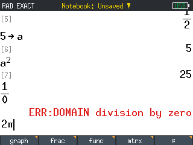
1/3+1/6 ▶ 1/2 √(8) ▶ 2*√(2)
2+3*4 enter. Start a line with an operator to continue from the last answer (Ans).5 → alpha A enter gives a:=5. Use the name in later lines.factor( and type x^2-1: the result is (x-1)*(x+1). x types x.approx(, or set RESULT to APPROX in settings.sin(x) next to Y1, then F5 (graph): the graph is a cell of the notebook; enter on it opens the full graph, where F4 (trace) follows the curve. sin(x-t) moves: F5 (play) on the selected cell.det, undo, rpn, degree): commands, apps and help pages.Variables, functions, the home history, Y= functions, the window and all settings are saved when the calculator switches off (shift on, or automatically after 5 minutes) and come back when you switch it on again, also after a battery change or a firmware update. See Memory and saved session.
The display has three parts.
Errors and confirmations appear in a box over the screen; any key or a tap closes it. Error messages are listed in Error messages.
apps opens the list of applications. Each one is described in its own chapter of help.
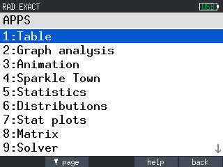
The home screen itself (Home screen) evaluates expressions with the computer algebra system; CAS, math and shift apps (the catalog) insert its commands. With ENTRY set to RPN in settings the home screen becomes an RPN stack (RPN mode).
The entry line works with whole tokens: sin( is one token and ⌫ removes it at once.
expression→name becomes name:=expression. shift → types := directly.solve(|,x).° (shift ,, angle menu) marks degrees and ʳ radians, whatever the angle mode: sin(30°) is 1/2 in both modes.< = >) and shift 1 2 3 (≤ ≠ ≥).x(x+1) with a one-letter name multiplies; longer names followed by ( are function calls.COS(x), Sin(x), LN(2), SQRT(2), NCR(5,2) and the constants PI, Pi, INF, ANS. A function or variable you define with such a name (COS(x):=..., PI:=3) takes precedence. e and i are the only spellings of Euler's number and the imaginary unit: E and I are ordinary variables, like every other name, since variables are case-sensitive (X and x differ).menu opens the options of the current screen. While that menu is open, the soft keys are the edit keys, so menu works like shift: press it, then the soft key.
They work on every screen with an entry line: home, Y=, window, table setup, the solver and finance forms, the list editor, the matrix editor, base-n, RPN. The menu lists these actions first, with the keys that do them now (undo F1, ...), then the screen's own soft keys and Help; enter or a digit chooses an entry, menu menu or clear closes the menu without doing anything.
When an action changes nothing you can see, the status bar says so until the next key: "copied", "nothing to undo", "clipboard is empty: copy first".
menu F1 undoes the last change of the line you are editing; press it again for earlier changes. menu F2 redoes what was undone. Typing a new change forgets the redo steps of that line.
sin(), a template, a menu or catalog insertion, a paste or clear is undone at once.123+45 is undone as 45, +, 123.See Edit keys: undo, copy, paste.
menu F3 copies, menu F4 pastes at the cursor. What is copied depends on the screen:
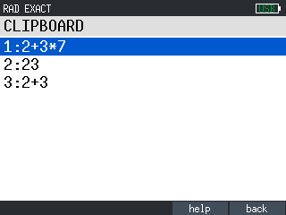
[[1,2],[3,4]]. Pasting such a matrix on the size line resizes the matrix and fills it.{1,2,3}. Paste it on the list name and press enter to fill a list.The clipboard keeps the last 8 texts. menu shift F2 (clips) lists them: enter pastes the highlighted one. The clipboard is kept when the calculator is switched off. menu shift F1 (cut) copies the line and clears it. Pasting on the home screen in Textbook mode builds fractions, roots and powers as templates.
See Edit keys: undo, copy, paste, History search.
menu F5 lists the home screen's history, newest first: each row is an input and its result. Type to filter: keys type as in the entry line (digits, operators, sin(; letters with alpha); the best matches come first. ⌫ erases the last key, shift ⌫ the whole filter.
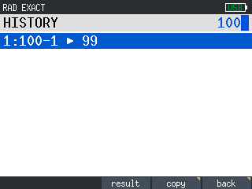
It works from any entry line, for example to reuse a home result in Y= or a form. shift enter on the home screen still recalls inputs one by one.
Help pages explain screens, menus and every command.
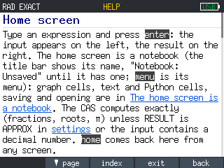
Command pages show the syntax, a description, examples (the line after ▶ is the result) and related commands.
apps > Memory:
CALC/MODULES on the microSD card (Installing the manual).The items that delete something ask first (No is highlighted). shift clear (clear all), on any screen, clears the CAS variables and functions together with the home entry line and history, after asking (on the RPN screen it clears the stack instead).
The session (settings, home history and entry line, Y= functions and colours, WINDOW and TBLSET, CAS variables, functions, assumptions and Ans, and the state of apps) is saved in the calculator's flash memory when it switches off and one minute after the last key press. It is restored when the calculator starts, also after a battery change or a firmware update. A power loss while saving keeps the previous copy.
The touch screen is optional: everything also works with the keys. A tap also ends a one-shot shift or alpha.
= to switch the function on or off, the expression to edit it.Errors appear in red in the history. The entry is kept, press shift enter (entry) to recall and fix it.
ln(0).The full manual is a separate module, stored in the calculator's 16 MB flash memory chip next to the firmware. The firmware works without it: until it is installed, help shows only a few essential pages (this one, the index, Keyboard, Getting started, Using help, Memory and saved session, Power and battery, Error messages and Safe mode), and every other page says "Manual not installed".
MODULES of the firmware release (the module files and INDEX.TXT) into the folder CALC on a FAT-formatted microSD card. Each file name carries its version: MANUA010.MOD is the manual 0.1.0, MANUA020.MOD the manual 0.2.0, so several versions sit side by side; copying a newer release adds its files next to the older ones.apps Memory, Modules lists every module with its installed version and state, and right under it every version of it on the microSD card with what installing that version would do: new, upgrade, downgrade, reinstall, or incompatible (made for another firmware). Choose a card version to install exactly that one (an older one too). Choose the module itself to verify it, to go back to the version installed before it (Revert), or to remove it. The last row reads the card again after you changed it.
calcctl.py --upload-module MANUA010.MOD sends a module over the USB connection (or the debug cable).calc_qspi.bin (all modules) to the flash chip directly.Some features are modules of program code that live in the 16 MB flash chip next to the firmware, like the manual: the calculator runs them directly from there. They are Animation (Animation: graphs that move), Geometry (Geometry; installed at the factory), Python (Python; installed at the factory, copied into the SDRAM when it starts) and the advanced CAS. Install them the same way as the manual (Memory, Install content or Memory, Modules, from the MODULES folder of the release on a microSD card, or by dropping the file on the CALC drive of a computer, Connecting to a computer); the advanced firmware has them installed already.
Without the module its feature says how to install it; a module made for another firmware, or a damaged one, is not run; in safe mode no module runs. Memory, About lists the installed modules.
Safe mode starts the calculator without the installed modules and without your saved session, so that a damaged module or saved session cannot stop it from starting. Your saved session is not deleted: it comes back at the next normal start.
Connect the calculator's USB-C port to a computer with a USB cable. The calculator keeps working as usual, runs from the computer's power, and does not switch itself off while the computer uses the connection. A USB charger only powers it: nothing else changes.
The computer shows a drive named CALC. Its files are made by the calculator when you connect it:
README.TXT: what the drive is for.INFO.TXT: the firmware version, the battery, the free space for modules, the installed modules with their versions, and the last events (as Memory, About lists them).MODULES.TXT: the installed modules in detail.RESULT.TXT: what happened to the last module file you dropped on the drive.SCREEN.BMP: a picture of the calculator's screen as it is when the computer reads it.NOTEBOOK.HTML: the open notebook (the home screen's) as one page that any phone, tablet or computer shows, also without a network: text cells, calculations with their results as the calculator draws them, graph cells as pictures, Python cells with their output. Copy it anywhere to keep or send it. It follows the notebook, unsaved too: after a change, once the calculator has been left alone for about 10 seconds (and the computer is not reading the drive), the drive refreshes itself with the new page (at most every 30 seconds; at once when another notebook is opened, created or saved under a name). While the browser page (Use the calculator from a computer's browser) follows the notebook the drive waits, then catches up when the page has gone. A refresh makes the drive leave and come back for a moment, as after a module install.NOTEBOOKS: the notebooks kept in the calculator, as Jupyter files NAME.ipynb (Notebook: files, card and computer). Drop a .ipynb file on the drive to import it.CALCULATOR.HTML: the calculator's open notebook in the computer's browser, to read, edit and run there, the cells running on the calculator (Use the calculator from a computer's browser).These files are read-only. Nothing else you put on the drive is kept when the calculator is switched off or disconnected.
Drag a module file (a .MOD file from the MODULES folder of a firmware release, such as GEOME010.MOD) onto the CALC drive.
RESULT.TXT keeps the details.MODULES.TXT and RESULT.TXT are new. The computer may say the drive was not ejected properly; that is expected, nothing is lost.APPS, microSD tools, Connect card to computer turns the card in the slot into a second drive of the computer, so you can copy files to and from it (for example the MODULES folder of a release, or screenshots). Meanwhile a full screen says "Connected to computer", and the calculator does not use the card itself.
apps Memory, USB status shows, four times a second, what the calculator sees of the connection: whether the cable brings power (VBUS), the state of the connection (powered, configured by the computer, suspended), the last error, and counts of what has happened. Try another cable (some cables only charge) or another port.
The USB connection also carries the calculator's console (a serial port; tools/calcctl.py finds it by itself) and can restart the calculator for a firmware update over USB (calcctl.py flash, no button needed). See the firmware's README.
The CALC drive (Connecting to a computer) holds CALCULATOR.HTML: a page, like Jupyter, that shows the calculator's notebook, the one on its home screen (The home screen is a notebook), on the computer's screen and edits it there. The calculator and the page are two views of one notebook: what you change on one shows on the other. Open the page in Chrome or Edge on the computer the calculator is connected to; nothing has to be installed and the page uses no network.
CALCULATOR.HTML from the CALC drive in Chrome or Edge (or copy it to the computer first and open the copy).t (sin(x-t), sin(x-t)*cos(y) in a 3D graph) makes the cell animated, here and on the calculator. The page plays it at once from frames the calculator computes (one batch): play / pause, the slider moves t by hand, the menu at its right sets the speed. Play, pause and speed are the page's own (the calculator plays its cell only when you press F5 there). The row under the cell has t's range, the seconds a sweep and loop, bounce or once: those belong to the cell and change on both sides. Turning and zooming a 3D one works while it plays. Parametric 3D graphs of t show the calculator's picture.NOTEBOOK.HTML catches up when the page has gone.calc.plot(f, a, b) draws its graph under the cell.solve(x^2-2=0,x) or f(x):=x^3; Enter runs it. It shares the CAS variables and settings of the calculator.x, one a line (Enter starts a new line), and the x and y range under the cell; the graph shows as soon as there is a function. Drag the graph to move it, pinch or (after clicking it) use the wheel to zoom, double-click to go back: the calculator computes the new range and its cell follows.$x^2$.Out[n] is the result of cell [n] and Ans the latest result, in Math cells (Out[2]*3, Ans+1; out[n] and ans work too) and in Python cells (Out maps the numbers to the values) alike (The home screen is a notebook, Python).As in Jupyter: in a cell you type (edit mode, green bar); Esc leaves the cell (command mode, blue bar) and Enter goes back in.
KeyboardInterrupt, as on does on the calculator; 0 0 (or Restart) starts Python afresh..ipynb) from the computer, or drop it on the page: it goes into the calculator, under the file's name (a notebook of that name is replaced, its previous version kept), and opens on both.CALCULATOR.HTML is missing from the drive: install the notebook page module (WEBUI010.MOD from the MODULES folder of the release) by dropping it on the CALC drive (Code modules).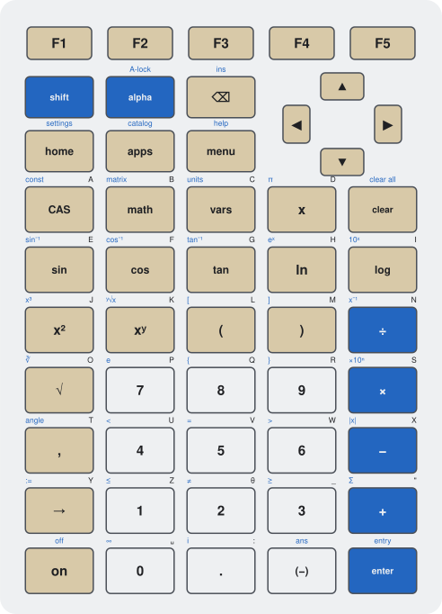
Every key has up to three functions: the one on the key, a shift function (printed above the key on the left, blue) and an alpha letter (above the key on the right, white). Press shift or alpha first, then the key. alpha twice gives a capital letter; shift alpha locks letters until alpha or clear.
The top row F1 .. F5 are soft keys: their labels are at the bottom of the screen and change with the screen (Soft keys). Tapping a label works too. shift F1 .. F5 are the screen's second soft keys (shown while shift is pending), menu lists them all.
key does SHIFT ALPHA
F1
F2
F3
F4
F5
shift
alpha A-lock
⌫ ins
home home settings
apps apps catalog
menu menu help
▲ backlight brighter
◀ start of the line
▶ end of the line
▼ backlight dimmer
CAS cas const A
math math matrix B
vars vars units C
x x π D
clear clear all
sin sin( sin⁻¹ E
cos cos( cos⁻¹ F
tan tan( tan⁻¹ G
ln ln( eˣ H
log log( 10ˣ I
x² ² x³ J
xʸ ^ ʸ√x K
( ( [ L
) ) ] M
÷ / x⁻¹ N
√ √( ∛ O
7 7 e P
8 8 { Q
9 9 } R
× * ×10ⁿ S
, , angle T
4 4 < U
5 5 = V
6 6 > W
− - |x| X
→ → := Y
1 1 ≤ Z
2 2 ≠ θ
3 3 ≥ _ (units)
+ + Σ "
on off
0 0 ∞ space
. . i :
(−) ⁻ ans
enter entry
See also Soft keys, Home screen, Help index.
The top row of keys, F1 .. F5, has no fixed job: the bar at the bottom of the screen shows what each key does on the current screen. After shift the bar shows the second row of labels (in amber), for shift F1 .. shift F5; a small amber corner on a label means that key has such a second function. A highlighted label is the screen you are on. Tap a label to press its key. menu lists every soft key of the screen (on screens with an entry line after the edit keys), and shift menu opens help.
The same places on every screen: on lists, menus and help F1 F2 page, F4 is help where there is room, and F5 goes back (back, done, ok). shift menu is help everywhere, home goes to the home screen and clear leaves the current menu or screen.
Apps written later declare their own soft keys (app/EXTENDING.md).
Type an expression and press enter: the input appears on the left, the result on the right. The home screen is a notebook (the title bar shows its name, "Notebook: Unsaved" until it has one; menu is its menu): graph cells, text and Python cells, saving and opening are in The home screen is a notebook. The CAS computes exactly (fractions, roots, π) unless RESULT is APPROX in settings or the input contains a decimal number. home comes back here from any screen.
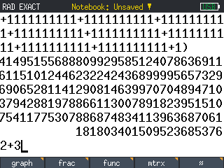
approx(Ans), exact(Ans). Back from a decimal that ≈ made, it gives the exact value again (ln(9), ≈, ≈: 2·ln(3)), not a fraction close to the decimal.cos(x)^2+sin(x)^2 gives 1. shift F3 (simplify) simplifies further, shift F4 (rewrite) offers factor, expand, partfrac, trig forms and more: see Simplify and rewrite results.+, *, ^, ², ...) continues from the last result: *2 means Ans*2.Ans, the last result.Out[n] (shift enter: its result); Out[n] is the result marked [n] and Ans the latest one (The home screen is a notebook).expr→name (→) stores a value; f(x):=x^2 (shift → types :=) defines a function. Use vars to insert stored names.Y1(2) evaluates the Y= function Y1 at 2 (vars, Y-VARS).COS(x), Sin(x), LN(2), SQRT(2), PI (see Editing the entry line). Variables are case-sensitive: X and x are different.Results follow the number format of settings (FIX, SCI, ENG) and the COMPLEX setting. See also Editing the entry line and Error messages.
Everything on the Home screen is a notebook: each calculation is a math cell (its input on the left, the result on the right), graphing from here puts the graph into the notebook as a graph cell (Graph cells), and menu adds text and Python cells. The title bar says which notebook it is: "Notebook: Unsaved" until it has a name, "Notebook: Lab 1" once saved, with a star ("Notebook: *Lab 1") while it has changes not yet stored; the ▼ after it says that menu (or a tap on the title) opens the notebook menu. Without a name the notebook is kept like the history always was (it survives switching off, a reboot and a firmware update); menu Save gives it a name and stores it with the other notebooks, which Jupyter on a computer can read (Notebook: files, card and computer).
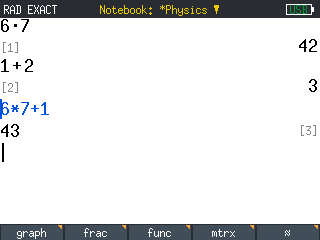
Ans, shift enter (entry), the CAS and MATH menus, shift F3 simplify and shift F4 rewrite.NOTEBOOK.HTML: this notebook as a page any phone or computer shows (Connecting to a computer), and CALCULATOR.HTML shows and edits it live (Use the calculator from a computer's browser).Every result has a number, the small grey [n] at its left: the cell's execution count, the same number the browser page shows as In [n] and Out[n] (Use the calculator from a computer's browser). Numbers go up by one with every calculation and every cell that runs, here or in the browser; a cell computed again gets a new number.
Ans is the latest result of the notebook (the ANS key types it; an operator first, as in +2, uses it). A Python cell's value counts too; errors and cells without a value do not.Out[n] is the result of cell [n]: Out[3]*2, solve(Out[5]=0,x). out[n] works too. A number that has no result says so: ERR:UNDEFINED Out[7]: no such result.menu on the home screen (or a tap on the title bar's "Notebook: ..." ▼) opens the NOTEBOOK menu (its title is the notebook's name, with a star while it has changes not yet stored). Choose with ▲ ▼ and enter, a digit, or a tap. The soft keys keep the edit actions: F1 undo, F2 redo, F3 copy, F4 paste, F5 history.
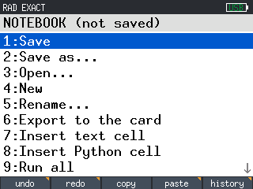
CALC/NOTEBOOKS on the microSD card. Stored notebooks are also in the NOTEBOOKS folder of the CALC drive when the calculator is connected to a computer (Connecting to a computer).Saving, opening, renaming, exporting and Python cells need the Python module; without it the menu says so and everything else works. A notebook with a name is stored when the calculator is switched off, when the battery runs low, two minutes after the last change, when you open another one and before an export.
Graphing that starts on the Home screen ends in its notebook: the graph is a graph cell, a plot right there among the calculations, with its own copy of the functions, the window and the style (later changes of Y= do not change it). Add as many as you like and scroll through them with the notebook.
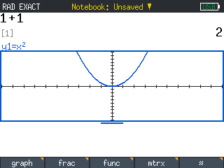
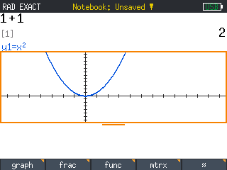
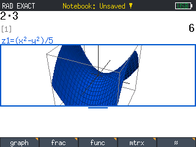
A line above the plot says what it graphs: "y1=x² y2=sin(x)", each function in the colour of its curve (a function switched off in grey), cut with three dots when the line is full (a 3D cell: "z1=..."). A graph cell without a function (one made in the browser page and not filled yet) shows just "graph: enter a function", no plot. The picture is drawn again when something it depends on changes: its functions and window, the MODE settings (degrees or radians) and the variables its functions use (y1=a·x after a:=3).
Graphs started elsewhere (a stat plot, another app) open the graph app as before.
F1 (graph), then 3D (F1 or a tap on "3D"), the surfaces and F5 (graph) adds a 3D graph cell (so does menu Insert 3D graph): the surfaces and curves of the 3D graph with its window and view, kept in the cell. With menu Insert 3D graph and no surface yet, the 3D editor opens for the new cell; F5 (graph) or home comes back with the picture.
A graph cell whose functions use t moves: y1=sin(x−t), z1=sin(√(x²+y²)−t). Its caption ends with "anim", and it shows the picture at the start of t's range until you play it (the calculator never plays a cell by itself: that would use the battery). Each cell keeps its own settings: t from 0 to 2π, 4 seconds a sweep, loop (or bounce, or once).
NOTEBOOK.HTML shows that picture and "animated (t from a to b)".Graph cells draw functions y = f(x) (FUNC mode); in the other graph modes (the Y= header: PAR, POL, SEQ, IMPL, DE) graphing opens the graph app. In a notebook stored as a Jupyter file a graph cell is a calc.plot(...) cell with the calculator's picture of it (PNG) and its functions and window in the cell's metadata (Notebook: files, card and computer). The browser page (Use the calculator from a computer's browser) shows every graph cell, drawn from values the calculator computes, and changes them too: their functions, their window, moving and zooming; a 3D graph made there is a 3D graph cell here. While the graph app is open on a cell, the page cannot change that cell, and a cell being changed in the page does not open here ("This cell is being edited in the browser").
One key rewrites a result, so you do not have to type simplify(...). On the home screen:
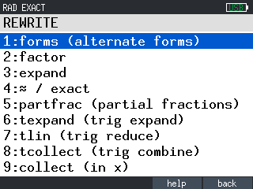
3_m): 1 simplify, 2 convert to: the entry line becomes convert(Ans,) with the cursor in the hole and the UNITS menu opens; choose the unit (or type it) and press enter. 3 usimplify (to SI units), 4 ≈ / exact, 5 factor, 6 expand.The command acts on, in this order: the history entry selected with ▲ (its input or its result), the entry line being typed, or the last result. The result is a new history entry whose input shows what was done, for example simplify(Ans) or factor(x^2-1), so the history reads like what you would have typed. Both Classic and Textbook display work the same way.
shift F3 is simplify; the menu's first item lists all the alternate forms instead.
In RPN shift F4 (simplify) and shift F5 (rewrite) act on level 1 (a line being typed is pushed first; undo brings the old level back). For collect, a name in level 1 is the variable; for convert to, level 1 is the unit and level 2 the value (3_m enter _ft enter, then shift F5 2).
Results are also simplified automatically as they are shown, with a quicker pass that keeps the forms you ask for: see Automatic simplification.
shift F4 (rewrite) 1 (forms) lists different ways to write the result, the line being typed or the selected history entry: factored and expanded, over one denominator or as partial fractions, trig and log rewritings. In RPN shift F5 1 does the same for level 1. The list comes from forms: every form has been checked to be equal to the original.
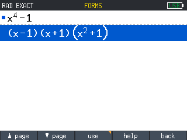
if x≠1 (a cancelled factor: the original is undefined at 1), if x>0, if x real.forms(Ans) (or forms( the line )), so Ans is the chosen form; in RPN it replaces level 1 (F5 undo brings the old value back).The search takes up to about a second; a longer expression may show fewer forms. simplify itself is shift F3 (Simplify and rewrite results).
apps lists the applications: Table, Graph analysis, Statistics, Distributions, Stat plots, Matrix, Solver, Finance, Base-n, Units & constants, Settings, Memory (Memory and saved session) and Help (this manual). Choose with ▲ ▼ enter or a number key. Each app labels the soft keys F1 .. F5 at the bottom of its screens (Soft keys). Graphing is not in the list: F1 (graph) on the home screen opens the graph editor (2D or 3D), and enter on a graph cell opens the full graph or 3D graph on it.
CAS lists the most used symbolic commands. Each inserts a template with the cursor where the expression goes:
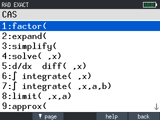
solve( ,x): solve an equation for xdiff( ,x): derivative with respect to xintegrate( ,x) and integrate( ,x,a,b): antiderivative, definite integrallimit( ,x,a)∇( ), ∇·[ ], ∇×[ ], ∇²( ): gradient, divergence, curl, Laplacian in x, y, zAll other commands are in the catalog. shift menu on an entry shows its help page.
math: abs, round, floor, ceil, ³ (cube), cube root and ˣ√ (see Roots), min, max, mod and ! (factorial). Choose with ▲ ▼ enter or the number key.
√(x) (√) is the square root, see sqrt.( )^(1/3): type the number inside the parentheses.16, press shift xʸ and type 4; the line reads 16^(1/4), the 4th root of 16.(-8)^(1/3) is -2, (-1)^(2/3) is 1 and (-8)^(-1/3) is -1/2. a+bi and r∠θ: the principal complex root, (-8)^(1/3) is 2*(-1)^(1/3) (1+1.732i). Even roots of negative numbers are not real (ERR:NONREAL ANS in REAL). Graphs always use the real root.x² (x²), ³ (shift x²), ⁻¹ (shift ÷) and ^ (xʸ) raise to a power. 10^( and e^( are on shift log and shift ln. See exp, sqrt.
The relations are shift keys: < = > on shift 4 5 6 and ≤ ≠ ≥ on shift 1 2 3. With numbers they evaluate to true or false; with unknowns they build equations and inequalities for solve, e.g. solve(x^2≤4,x).
shift ,: ° marks an angle in degrees and ʳ in radians, independent of the ANGLE mode: sin(90°) is 1 in RADIAN mode, cos(πʳ) is -1 in DEGREE mode.
shift apps lists every command and function alphabetically. Type to search: letters filter the list as you type (ALPHA is switched on automatically) and the best matches come first, also by the command's description (deriv finds diff). Help pages whose title matches are listed too, marked ?: undo, rpn or degree find the page that explains it (enter opens it). An empty search says so; ⌫ brings matches back. ⌫ erases a letter, shift ⌫ the whole search. ◀ ▶ step through the categories (algebra, calculus, trigonometry, matrices, statistics, probability, number theory, units, finance, ...); F3 (categ) lists them. enter inserts the highlighted entry (an entry marked ▶ opens its app); shift menu shows its help page; clear closes the catalog. The commands are also grouped in the help index.
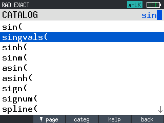
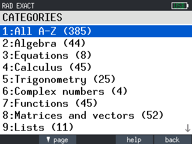
vars inserts names into the entry line:
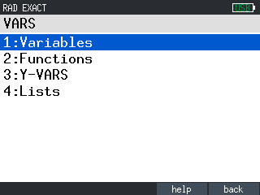
a:=5, 5→a).f(x):=x^2); inserts f(.Y1( so that Y1(2) evaluates the function at 2.Apps add their own categories. Empty categories are hidden. Delete names with purge or apps > Memory (Memory and saved session).
With the DISPLAY setting TEXTBOOK (the default) the home screen shows math the way it is written in a textbook: fractions stacked, roots with a bar, exponents raised, |x|, logarithms with a lowered base, d/dx, integrals and sums with their limits, matrices in brackets, 1.5×10 with a raised -7 for 1.5ᴇ-7, and repeating decimals with a bar over the period.
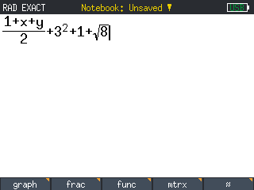
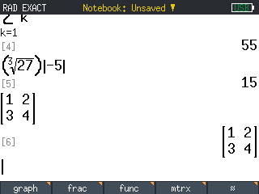
2 xʸ 3 shows 2 with a raised 3. ▶ leaves the box. While you are typing an exponent, + − × ÷ , and ) leave it first, so 2^3+1 means (2^3)+1 exactly as in Classic. Use parentheses for a sum in an exponent: 2^(3+1).(1)/(x+1)-style text you can edit).√(2) typed the Classic way gives the same result.Inputs are on the left, results on the right, both in 2D. A line wider than the screen continues on the next line, broken before a + − or =, after a comma, then before a × or ÷, or inside a long number; a piece that cannot be broken (a wide matrix or list) shows ▶ at the edge: select it with ▲ and scroll it with ◀ ▶. A result too tall for the screen, and errors, are shown as text.
In a product of names the letters stand a little apart: x·y·z shows as x y z, while xyz written together is one variable called xyz (names can have several letters). Type the multiplications (x*y*z) when you mean a product. Pasting a result (enter on it) inserts its linear form.
Everything still works in the linear syntax: the history keeps the text that can be typed in Classic mode ((1+x)/2, √(8), log(8,2), diff(x^3,x), [[1,2],[3,4]]), which is also what state last_input reports.
See also live preview, repeating decimals, dark theme and large font.
On the home screen in Textbook mode these menus insert boxes; in Classic mode and in other editors they insert the linear form with the cursor in the first gap.
sum(k^2,k,1,10) is 385.diff(x^3,x) is 3*x^2.integrate(x^2,x,0,1) is 1/3.log(8,2) is 3.8^(1/3) is 2).2×2, 3×3, 2×3 and 3×2 matrices, 2×1 and 3×1 column vectors, 1×2 and 1×3 row vectors. ▶ moves from cell to cell (row by row), ▲ ▼ between rows. The result is the matrix [[1,2],[3,4]].
shift home (also shift F3 format on the graph screens, or apps > Settings) lists the settings. ▲ ▼ choose a row, ◀ ▶ change its option at once (or tap an option). The rows scroll when there are more than fit on the screen. shift menu or F4 (help) explains the highlighted row, F1 (about) shows the firmware version, F5 (done) or clear returns to the home screen. Settings are kept when the calculator is off.
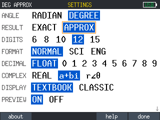
RADIAN or DEGREE. In DEGREE mode the trigonometric functions take degrees and the inverse functions return degrees: sin(30) is 1/2. The status bar shows RAD or DEG.
Independently of the mode, ° and ʳ from the angle menu (shift ,) mark an angle as degrees or radians: sin(30°) is 1/2 in both modes. See Angle menu.
EXACT keeps fractions, roots and π exact: 1/3 stays 1/3, √(8) becomes 2*√(2). APPROX gives decimal results with DIGITS significant digits: 1/3 becomes 0.333333333333.
In EXACT mode a decimal point in the input makes that part approximate (1/3.0), and approx gives a decimal value of one expression. exact converts decimals back to fractions.
AUTO (the default) simplifies every result of the home screen and of RPN as it is shown, with a quick pass: the Pythagorean identities (cos(x)^2+sin(x)^2 is 1, sec(x)^2-tan(x)^2 is 1), like terms across products (x*(x+1)-x^2 is x), common factors of fractions ((x^2-1)/(x-1) is x+1) sums of fractions (1/(x-1)-1/(x+1) is 2/(x^2-1)) and Euler's formula when exponentials and trig functions of one argument meet ((e^(i*x)+e^(-i*x))/2 is cos(x), e^(i*x)-(cos(x)+i*sin(x)) is 0, (e^x+e^-x)/2 is cosh(x)); a lone e^(i*x) or cos(x)+i*sin(x) keeps its form. It never changes a form you asked for: results of factor, expand, partfrac, texpand, collect, approx and the other rewriting commands stay as they are, and a factored expression you type, such as (x-1)*(x+1), is kept. Decimals, units and uncertainties are left alone.
OFF shows results as the CAS computes them. Either way shift F3 applies the full simplify and shift F4 the other rewritings. The pass is the command autosimplify; graphs, tables, the solvers and the other apps never use it.
DIGITS (6, 8, 10, 12 or 15) sets how many significant digits approximate results show in FORMAT NORMAL with DECIMAL FLOAT. approx(pi,30) computes more digits for one value (see approx).
FORMAT and DECIMAL control how decimal (approximate) numbers in results are shown. Exact results (integers, fractions, roots) are not changed.
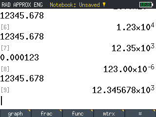
1.5ᴇ-7).3.14; numbers that do not fit switch to scientific notation.1.2345ᴇ3; with DECIMAL n, n decimals in the mantissa.12.345ᴇ3.ᴇ means "times ten to the power" (shift × types it). The status bar shows FIX2, SCI, ENG3 etc. when a format other than NORMAL FLOAT is active. Numbers are rounded for display only; Ans and stored values keep full precision.
How results with the imaginary unit i are shown:
i but whose result is complex is an error (ERR:NONREAL ANS), e.g. √(-4). Entering i (shift .) still works. A power of a negative number with an exponent p/q, q odd, is the real root: (-8)^(1/3) is -2, (-1)^(2/3) is 1, integrate(x^(-1/3),x,-1,8) is 9/2 (see Roots).√(-4) gives 2*i. Powers use the principal branch: (-8)^(1/3) is 2*(-1)^(1/3), i.e. 1+√(3)i.1+i gives √(2)∠π/4, (-8)^(1/3) gives 2∠π/3.See i, abs, arg, re, im, conj.
GRID ON draws a dotted grid at the Xscl/Yscl tick marks of the graph, AXES OFF hides the axes. See GRAPH and WINDOW.
LIGHT sets the backlight to 20 to 100 %. shift ▲ and shift ▼ change it in 10 % steps from any screen. A lower setting saves battery. See Power and battery.
ON USB decides what happens after five minutes without a key or touch while the calculator is powered over USB (a computer or a charger):
On batteries the calculator always switches off after five minutes, whatever this setting says.
TEXTBOOK shows inputs and results in textbook form and makes xʸ, √ and the template menus insert boxes (see Textbook math). CLASSIC shows everything as one line of text, as typed: (x+1)/2, x^2, √(8). Switching to CLASSIC turns the boxes of the entry line into that text. The setting is kept when the calculator is off.
With PREVIEW ON the home screen shows the result of the entry line, dimmed, under it while you type (after a short pause). Unclosed parentheses are closed for the preview: 2*(3+4 shows 14.
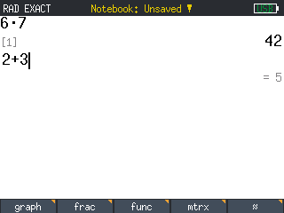
The preview never changes anything: Ans and the history stay as they are, and it is not shown for assignments (a:=5, →) or commands that change settings or take long (solve, integrate, limit, series, random numbers). A slow calculation is abandoned after a fraction of a second, and as soon as you press a key, so typing never waits. Errors show no preview. enter evaluates as usual.
REPEAT 0.(3) (the default) does two things:
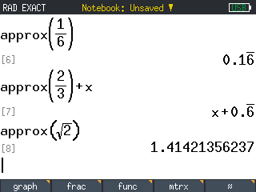
0.(3) is 1/3, 1.2(34) is 611/495, 0.(9) is 1.0.(142857) (with a bar over 142857 in Textbook mode), 1/6 in APPROX mode shows 0.1(6). Ans and the stored value keep all digits; numbers that are not short fractions (√(2)) are shown as usual.Only in FORMAT NORMAL with DECIMAL FLOAT; FIX, SCI and ENG show the rounded decimal. REPEAT OFF shows all decimals. See Number format.
THEME DARK shows every screen with light text on a dark background (graphs, menus, help and the settings screen too); the colours of functions and links are lightened to stay readable, selections stay blue. LIGHT is the default. A dark screen is easier on the eyes at night and uses the backlight less for the same readability at a lower LIGHT setting. The theme is kept when the calculator is off.
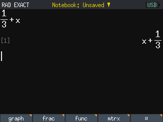
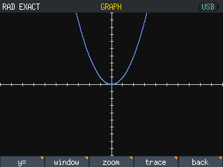
FONT LARGE uses a bigger font (14×28 pixels instead of 10×20) on the home screen and in the menus, for easier reading: 22 characters per line and 7 lines. 2D math scales with it. The other screens keep the normal font so that their layout fits. NORMAL is the default.
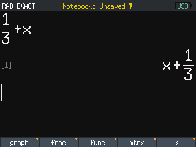
RPN (reverse Polish notation) works like classic RPN calculators: you put values on a stack first and then apply operators and functions to them. Switch it on in settings (shift home) with ENTRY: RPN (ALGEBRAIC is the default). The choice and the stack are kept when the calculator switches off.
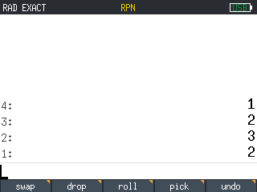
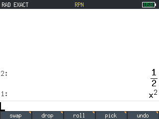
2 {enter} 3 {÷}
▶ 1: 2/3
x {enter} 2 {xʸ}
▶ 1: x^2
The stack fills the screen from the bottom: level 1 is the newest value, just above the command line; higher levels are above it. Values are exact CAS values and are shown with the number format of the settings. Long values wrap onto several lines.
Each level holds the value itself, not only the text you see, so RPN gives the same results as the home screen:
2±0.1, Measurements with uncertainty) stays the same measurement wherever it moves: x enter − gives 0±0 like x-x, and x enter × has the uncertainty of x·x. Stored with → into a variable, it stays linked to the level it came from.1/3, √2) stay exact.Up to 1024 different values can be on the stack (copies share theirs); more gives "Stack full".
2 enter 3 + gives 5.x^2+1 enter pushes x^2+1 (once the line holds a name or an operator, operator keys type into it). Start with ( to type numeric algebra such as (2+3)*4.2 3 + 4 * gives 20. Command names such as swap, drop, factor or diff work as words.expression→name stores like on the home screen and pushes the value.On an empty line (or after a number being typed) these keys take their arguments from the stack and push the result:
Arguments are taken in stack order: the last argument is in level 1, the first one in the highest level used, as usual in RPN. mod, min, max, gcd, lcm, nCr, nPr and similar take two levels; other functions take level 1.
Commands with a variable take it from the stack when that level holds a name, else they use x:
solve, diff, integrate( ,x): 2: x^2-2 1: x, or just 1: x^2-2 (variable x).integrate( ,x,a,b): 4: expr 3: var 2: a 1: b, or 3: expr 2: a 1: b with x.limit( ,x,a): 3: expr 2: var 1: a, or 2: expr 1: a with x.=: 2: x^2 1: 2 gives x^2=2, ready for solve.5 enter, alpha A →). With an empty line it stores level 2 into the name in level 1.▲ on an empty line selects level 1; ▲ ▼ move the selection up and down the stack (it scrolls). The soft keys act on the selected level n (the digit keys 1 to 6 too):
Tap a level to select it, tap it again to copy it into the command line. Drag up and down to scroll through the stack. In the interactive stack, tap the soft keys.
ANGLE, RESULT (exact or approximate), SIMPLIFY, DIGITS, FORMAT and COMPLEX of the settings apply as on the home screen; changing FORMAT re-displays the whole stack. Up to 32 KB of stack levels are saved when the calculator switches off, with their full values (uncertainties stay linked to each other and to your variables); if the stack is bigger the oldest levels are dropped.
See also RPN stack commands and Home screen.
The STACK menu (, on an empty command line in RPN mode) runs these commands. They can also be typed as words on the command line (swap, rolld, ...). Commands marked (n) take the count n from level 1 first.
approx).Example: 3: a 2: b 1: c, then 2 ROLLD gives 3: a 2: c 1: b.
The graphing screens work together: Y= holds what is drawn, WINDOW the visible range, GRAPH draws it, TABLE lists values. Graphing started on the home screen (F1 graph, the graph editor: 2D, or 3D with its switch; then F5 graph) puts the graph into the home notebook as a graph cell; enter on the cell opens the full graph screen on it (trace, CALC, zoom), and home writes it back into the cell.
a in a*x^2 and watch the graph movesin(x-t)), comet drawings, animated GIFsUp to six functions Y1 to Y6 of x, drawn by GRAPH and listed by TABLE. Open it with F1 (graph) on the home screen or F1 (y=) on any graph screen. In the other Graph modes Y= holds parametric curves, polar curves, sequences, relations or differential equations (slope fields). It is the 2D side of the graph editor: the switch at the top right, "2D 3D", opens the 3D entries (3D entries (z=)); tap "3D" or press F1 (3D).
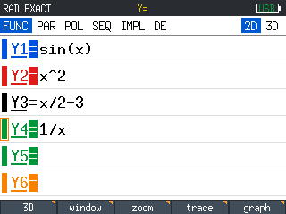
=; x types x (t, θ or n in the PAR, POL and SEQ modes). ▲ ▼ move between functions, clear clears one.=: enter switches the function on or off (a highlighted = is on). ◀ once more moves to the colour swatch: enter changes the colour (8 colours). ◀ again moves to the line style.a become sliders on the graph.Y1(2) evaluates Y1 at x=2 (vars, Y-VARS).= or the expression; tap the header to change the mode; drag to scroll.F2 (window) on a graph screen. The visible part of the plane for GRAPH: Xmin, Xmax, Xscl (distance between tick marks), Ymin, Ymax, Yscl. The Graph modes add their ranges first: Tmin, Tmax, Tstep (PAR), θmin, θmax, θstep (POL), nMin, nMax, PlotStart, PlotStep (SEQ). The list scrolls.
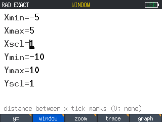
▲ ▼ or enter move between fields; the line at the bottom says what the selected field means. Typing replaces the value; fields accept expressions such as 2π or -π/2. Invalid input or a range with min ≥ max is refused with a message that names the problem (ERR: Xmin must be less than Xmax) and the old value stays. clear empties a field and a second clear brings its value back. ZOOM sets the window too.
F5 (graph) draws the entries that are switched on in Y=, each in its colour and style, over the WINDOW, with axes and tick marks (grid optional, see Grid and axes). See Graphing for all graphing features. With nothing to draw the graph says so at the top left (y= (F1): enter a function); an entry with an error shows its message there in red.
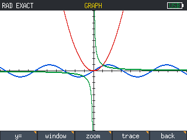
F4 (trace) puts the cursor on a function of the graph and shows x and y.
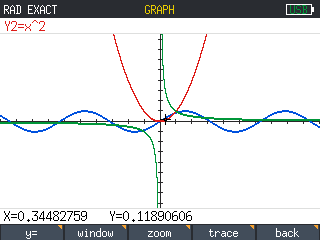
F3 (zoom) on a graph screen changes the WINDOW:
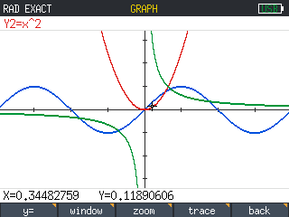
On a touch screen a pinch zooms too.
The graph mode decides what Y= holds and how GRAPH draws it. Choose it in the header line at the top of Y= (tap it, or ▲ on the first entry, ◀ ▶ to a mode, enter), with menu on Y=, or in settings (row GRAPH). Each mode has its own six entries, colours and styles; the WINDOW shows the ranges of the mode.
x types the variable of the mode: x, t, θ or n. Everything is saved when the calculator is switched off.
In PAR mode each entry is a pair X1T(t), Y1T(t); the curve is drawn for t from Tmin to Tmax in steps of Tstep (WINDOW, defaults 0, 2π, π/24). Both expressions are needed.
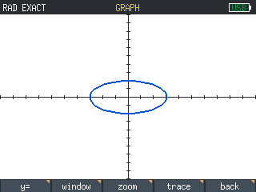
X1T=3cos(t) Y1T=2sin(t)
draws an ellipse. F4 (trace) steps t by Tstep and shows T, X and Y; TABLE lists T with X1T and Y1T. CALC offers value, dy/dx (dy/dt divided by dx/dt) and arc length between two values of t.
In POL mode each entry is r1(θ) to r6(θ), drawn as x = r·cos θ, y = r·sin θ for θ from θmin to θmax in steps of θstep (WINDOW). In DEGREE mode θ is in degrees: set θmax to 360.
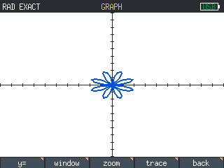
r1=2sin(4θ)
draws an eight-petal rose. F4 (trace) shows θ, R, X and Y; CALC offers value, dy/dx and arc length.
In SEQ mode each entry has two lines: u1(n) = the formula, and u1(nMin) = the initial value(s). A formula may use the previous terms u1(n-1) and u1(n-2) of any sequence u1 to u6 (type u with alpha 4); it then needs one or two initial values, for n = nMin and nMin+1, separated by a comma.
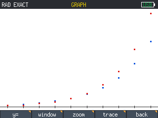
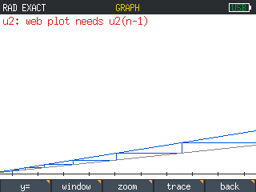
u1(n)=1.5u1(n-1) u1(nMin)=1 u2(n)=u2(n-1)+u2(n-2) u2(nMin)=1,1
A formula without previous terms (n^2) needs no initial value. WINDOW: nMin (first n), nMax (last n), PlotStart and PlotStep (which terms are drawn), plus the X and Y range.
The header line of Y= chooses the plot:
F4 (trace) steps n by 1. TABLE lists n and the sequences.
In IMPL mode each entry is a relation in x and y: an equation such as x^2+y^2=16 or an inequality y<sin(x), x*y≥2 (< = > are shift 4 5 6, ≤ ≥ shift 1 3). An expression without a relation means expression = 0.
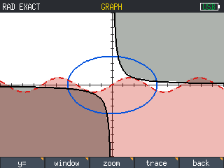
There is no TRACE or TABLE for relations. Free single letters other than x and y become sliders.
In DE mode each entry is a first-order differential equation y1' = f(x, y), on two lines: y1' holds f(x, y) and IC1 the initial points of the solution curves, as points (x0,y0) separated by commas (up to four; a single number y0 means the point (0, y0)). Type y with alpha →; x types x.
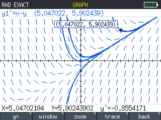
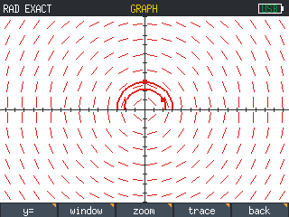
y1'=x-y IC1=(0,1),(0,-2) y2'=-x/y IC2=(0,3)
GRAPH draws the slope field: on a grid of short segments, each with the slope f(x, y) at its centre, in the entry's colour (an undefined slope leaves its segment out, an infinite one is vertical). The grid follows the screen, so it keeps its density when you zoom or pan. Through every initial point a solution curve is drawn forward and backward with the Runge-Kutta method (RK4, steps of about two pixels, smaller where the curve bends). A curve ends at the edge of the window, where the slope is undefined, at a vertical tangent (y' = -x/y at y = 0) or where the solution blows up (y' = y^2 + x^2).
Add curves on the graph:
F4 (trace) follows a solution curve: ◀ ▶ step x by a pixel, ▲ ▼ switch curves, a typed number moves to that x; the bottom line shows X, Y and y'. Past the end of a solution Y is undefined. A tap near a curve traces it. There is no CALC or TABLE in DE mode. Free single letters other than x and y become sliders (enter on the free cursor adds a curve instead of opening the slider settings).
Each entry has a line style, shown as a small mark under its name in Y=. Move ◀ past the colour swatch to the style (or tap the name) and press enter to cycle:
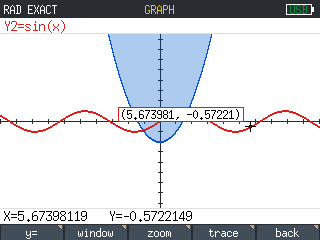
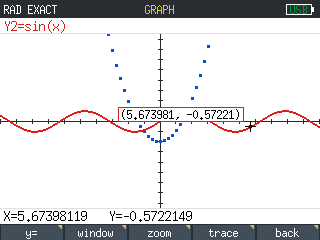
Shading uses a light tint of the function's colour, so overlapping regions stay distinguishable and the curves are drawn on top.
shift F4 (calc) on a graph screen opens the analysis menu over the graph (also apps > Graph analysis). The result is shown at the bottom, the point is marked and labelled, and the main value is stored in ans.
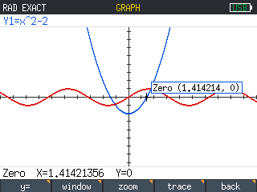
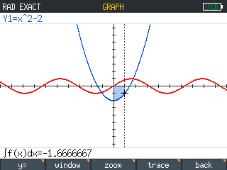
At each prompt (top left; the keys that answer it are shown at the top right) move the cursor with ◀ ▶, or type a number (it replaces the cursor position), then enter. A tap on the graph moves there and confirms. clear cancels. When nothing is found the bottom line says what to try (No zero between the bounds: widen them). PAR and POL offer value, dy/dx, arc length and table; SEQ value and table.
A single letter in a Y= expression that is not the variable of the mode (x, t, θ, n; x and y in IMPL and DE) is a parameter: GRAPH shows a slider for it above the coordinates, for example a and b in
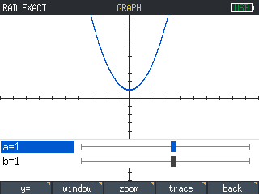
Y1=a*x^2+b
a:=1.5), so the home screen and Y1( ) agree. A variable that is already defined starts at its value, and storing a new value on the home screen moves the slider.Slider settings and values are saved with the session.
Touch gestures on GRAPH:
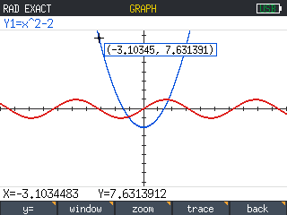
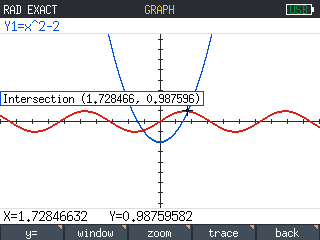
During a CALC prompt a tap moves the cursor there and confirms the step.
shift F5 (table) on a graph screen, or shift F1 on the home screen, shows x and the switched-on Y functions in columns, starting at TblStart with step ΔTbl (TBLSET). In the other Graph modes: T with X1T and Y1T, θ with r1.., n with u1... From the graph, CALC table at cursor (or a tap on the trace coordinates) centres the table on the traced value.
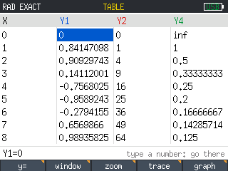
go to X=2.5), enter makes it the first row, clear cancels. Expressions such as 2π work.shift F2 (tblset) on a graph screen: TblStart is the first x value of the TABLE and ΔTbl the step between rows (not zero; a negative step counts down). Fields accept expressions; the line at the bottom explains the selected field.
Draws surfaces z = f(x,y), parametric surfaces x(u,v), y(u,v), z(u,v) and space curves x(t), y(t), z(t), up to six at once in different colours, inside a labelled box. Open it from the home screen with F1 (graph) and the editor's 2D/3D switch (3D): type the entries and F5 (graph) adds a 3D graph cell to the notebook; enter on the cell opens this screen on it.
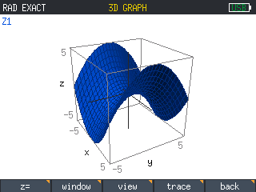
F4 puts a cursor on the first surface. ◀ ▶ move it along x (or u, t), ▲ ▼ along y (or v); the band at the bottom shows its coordinates (x, y, z). F4 (next) goes to the next surface, clear ends the trace. Tapping the screen traces the nearest grid point.
The VIEW menu's Contours draws level curves (lines of equal height) on the surfaces z = f(x,y); Contour map shows them flat, as on a map, seen from above. See 3D contours and the contour map.
The surfaces are computed once (when you enter the screen or change an entry or the window); turning, zooming and tracing reuse the computed grid. See also Graphing.
The 3D side of the graph editor (F1 graph on the home screen, then 3D). The switch at its top right, "2D 3D", goes back to the 2D functions (Y=): tap "2D", or press F1 (2D). Six entries Z1 .. Z6. Each is one of:
shift F1 (type) changes the kind of the highlighted entry, shift F2 (on/off) switches it on or off, shift F3 (color) changes its colour. The x key types x, u or t (the entry's first parameter); type v and y with alpha.
▲ ▼ or enter move between lines. ◀ at the start of a first line moves to the = sign (enter switches the entry on or off) and then to the colour bar (enter changes the colour). clear empties the line. Tap the colour bar, the name (kind) or the = sign to change them.
Examples:
x^2-y^2 (a saddle), sin(x)*cos(y), e^(-(x^2+y^2)/4)*43*cos(u)*sin(v), 3*sin(u)*sin(v), 3*cos(v) with v from 0 to π.(3+cos(v))*cos(u), (3+cos(v))*sin(u), sin(v).3*cos(t), 3*sin(t), t/2.Fields accept expressions such as 2π. ▲ ▼ or enter accept a field and move to the next; an invalid value is refused with a message that names the problem (ERR: grid must be 4 to 64). shift F4 (zfit) on the graph sets zmin and zmax from the surfaces.
F3 (view) on the 3D screens:
Level curves, or contours, join the points of a surface z = f(x,y) at the same height, like the lines of a hiking map. The 3D window's levels (9 at first) sets how many: they divide the range zmin to zmax into equal bands, so with z from -5 to 5 and 9 levels they are at z = -4, -3, ..., 4. shift F4 (zfit) first fits zmin and zmax to the surfaces, and the levels with them.
F3 (view) then Contours turns them on or off. The surfaces z = f(x,y) are drawn with their level curves instead of the grid lines: dark lines over a shaded surface (hidden where the surface is in front), lines in the entry's colour, or in the height colours, in the wireframe style. Turning, zooming and tracing work as usual.
F3 (view) then Contour map shows the surfaces z = f(x,y) from straight above and flat: x to the right, y up, the window's x and y ranges at the corners of the frame. Shaded, the bands between the levels are filled in the height colours (blue low, red high) and the curves drawn over them; wireframe, only the curves are drawn, in the entry's colour or (Colour by height) in the colour of their level. The key at the right lists the level values next to their colours.
Parametric surfaces and space curves have no contours: they keep their grid lines in 3D and are left out of the map (their names are dimmed). A 3D graph cell keeps the contours and the map of the 3D graph it was made from.
Try x^2+y^2 (circles), (x^2-y^2)/5 (hyperbolas around a saddle), sin(x)*cos(y) (hills and hollows) or, with every range -1 to 1, sqrt(1-x^2-y^2) (circles closer together towards the rim).
The Animation module plays a variable of a graph over time: a travelling wave sin(x-t), a curve drawn like a comet, sequence terms appearing one by one, a rippling 3D surface. It is a module (Code modules): if it is not installed, shift F5 (anim) says how to install it, and everything else works as before.
t:=1.25), like a slider.Y1=sin(x-t) gives a slider t; the wave travels. With several sliders , chooses which one plays. In PAR mode t is the curve's own variable, so use another letter: X1T=cos(t)+a.x^2+y^2=r^2 is a slider like in the other modes.z=sin(√(x^2+y^2)-t) ripples. Parametric surfaces may use it too; space curves already use t, so they use another letter. See Animated 3D graphs.Settings in the menu (for a 2D slider: enter on the graph, the slider's own form) has, besides value, min, max and step:
The settings are kept per letter and saved with the session.
Record GIF to microSD writes one cycle as an animated GIF (Recording an animated GIF). Up to 25 frames per second are drawn; state anim_fps on the console shows the rate.
In PAR, POL and SEQ mode, Comet in the ANIMATION menu (shift F5 on GRAPH) draws the curves progressively: the parameter (t from Tmin, θ from θmin, n from nMin) grows to its maximum over the animation's seconds, and a dot marks the head of each curve.
X1T=3sin(2t) Y1T=3cos(3t)
draws a Lissajous figure line by line. For sequences the terms appear one after the other (TIME plot), or the cobweb grows step by step (WEB plot). Loop starts again from the beginning, bounce erases backwards, once stops with the whole curve. Comet is a setting of the 2D graph: switch it off in the same menu to animate sliders again.
In the 3D graph a single letter that is not the entry's own variable (x and y for z=, u and v for surfaces, t for curves) and not e or i is the animated variable; t is preferred. Like a slider it starts at the value stored in it (t:=1), else at the animation's start (0), so z=sin(√(x^2+y^2)-t) is drawn at once; after a pause its value is stored in it.
Every frame evaluates the surfaces again for the new value. When a frame takes longer than about 80 ms, the next ones use a coarser grid (as when you turn the box with a finger), and the grid grows back when frames are fast; a paused or recorded frame is always drawn at the full grid of the 3D window. Rotating and zooming work while paused.
z=2sin(√(x^2+y^2)-t) ripples x(u,v)=cos(u)(2+cos(v+t)) ... a surface that turns
Record GIF to microSD in the ANIMATION menu plays one cycle (loop: start to end; bounce: there and back; once: to the end) at 10 frames per second, at most 120 frames, and writes it as /CALC/ANIM001.GIF (the next free number) on the microSD card. The graph area is recorded, without the play bar; a key press ends the recording early (the file is still complete).
Only the changed part of each frame is stored, so a 2D animation of 40 frames takes 20 to 100 KB. Card errors are reported as for screenshots (microSD tools).
Math games for grades 3, 4 and 5, a module (Code modules) outside the release: install MATHQnnn.MOD from the card (Memory > Modules). In APPS it is called Sparkle Town: children see a game, grown-ups the learning behind it.
apps > Statistics opens the STAT menu, apps > Distributions the DISTR menu and apps > Stat plots (also shift F1 on the graph screens) the STAT PLOTS. In the list editor the soft keys reach all of them: stat, calc, tests, plots, graph; shift: sortA, sortD, clrlist, csv, distr.
A typical session: enter data in the list editor, F2 calc > 1-Var Stats, F5 (calc). For a fit, calc > LinReg(ax+b), F5, then F2 (plot) on the result shows the points and the fitted line on the graph.
Lists are also CAS variables: see Lists. Results of the last computation are in vars > Statistics (Results). The distribution functions are listed in Distribution functions.
The lists L1 to L6 always exist; RESID receives the residuals of the last regression; up to 13 more named lists (1 to 7 letters and digits, e.g. DATA) can be created in the list editor or by a CSV import. A list holds up to 999 numbers and is saved when the calculator is switched off.
On the home screen a list name is a CAS variable:
mean(L1)
L1*2→L3
{1,2,3}→L2
sort(L2)→L2
normalcdf(L1,L1+1)
Storing into a list name (→ or :=) updates the list editor. Lists can be inserted from vars > Lists.
STAT > Edit lists... shows the lists in columns; the line at the bottom edits the highlighted cell.
{1,2,3}. Type an expression such as L1*2 and enter to fill the list once, or the expression in quotes, "L1*2", to attach a column formula: the list then recomputes whenever another list changes (a * after the name marks it). clear enter on the name clears the list. ⌫ on a name removes the column from the editor (the list is kept).+ new after the last list takes the name of a new named list.STAT > CALC > 1-Var Stats asks for a list and an optional frequency list (1 = none) and shows xbar (mean), Σx, Σx², Sx (sample standard deviation), sigmax (population standard deviation), n, minX, Q1, Med, Q3, maxX and the mode (the value with the largest frequency; - when all values are equally frequent). Each result line says in grey what the value is.
Quartiles are the medians of the lower and upper halves (the usual calculator convention).
2-Var Stats takes an X and a Y list and adds ybar, Σy, Σy², Sy, sigmay, Σxy, minY, maxY.
STAT > CALC: LinReg(ax+b), LinReg(a+bx), QuadReg, CubicReg, QuartReg, LnReg (a+b ln x), ExpReg (a*b^x), PwrReg (a*x^b), Logistic (c/(1+a*e^(-bx))), SinReg (a*sin(bx+c)+d) and Med-Med.
The form takes the X and Y lists, a frequency list (1 = none) and RegEQ->, a Y= function to receive the equation (for graphing it with a scatter plot). The result shows the coefficients, r² or R² and r where defined; the residuals y - f(x) are stored in RESID and the equation is in vars > Statistics > RegEQ.
F2 (plot) on the result graphs the fit in one step: the equation goes to the RegEQ function, or, when none was chosen, to the first empty Y= function (a function in use is never overwritten); a stat plot shows Xlist against Ylist as a scatter plot (the plot already doing so, else the first plot that is off, else Plot1); ZoomStat fits the window.
LnReg, ExpReg and PwrReg fit a line to the logarithms (the usual calculator convention); Logistic and SinReg are nonlinear least squares fits.
STAT > TESTS: Z-Test, T-Test, 2-SampZTest, 2-SampTTest, 1-PropZTest, 2-PropZTest, chi² GOF-Test, chi²-Test, 2-SampFTest, LinRegTTest, ANOVA.
mu≠mu0, mu<mu0, mu>mu0; p, sd, slope for proportions, standard deviations and the slope), chosen with ◀ ▶. F5 (calc) computes and F4 (draw) draws from anywhere in the form. Empty fields show (enter a value); the line at the bottom says what the highlighted field takes, or what is wrong.Ha: mu>5); Draw shades the p-value region (Results).[[10,20],[30,40]] or the name of a CAS variable holding one; the expected counts are stored in the CAS variable chi2exp.L1,L2,L3.STAT > TESTS: ZInterval, TInterval, 2-SampZInt, 2-SampTInt, 1-PropZInt, 2-PropZInt. Inputs as for the tests; C-Level is the confidence level, 0.95 or 95. The result shows lower, upper, the margin of error ME and the sample statistics.
Results are listed one per line (▲ ▼ scroll), each with its meaning in grey (mean, sample std. dev., p-value, ...). The top right shows the alternative hypothesis of a test, the confidence level of an interval or the Y= function that got a regression equation.
vars > Statistics lists the values of the last result (xbar, Sx, p, z, a, b, r², ...) and RegEQ, the last regression equation; choosing one inserts it at the cursor.
apps > Distributions (DISTR; shift F5 in the list editor) inserts the distribution functions: normalpdf, normalcdf, invNorm, invT, tpdf, tcdf, chi2pdf, chi2cdf, Fpdf, Fcdf, binompdf, binomcdf, poissonpdf, poissoncdf, geometpdf, geometcdf, invChi2, invF. The menu shows the order of the arguments (in square brackets: optional, e.g. normalcdf(lo,hi[,mu,sd])) and inserts the name with its parentheses, the cursor inside. They work on the home screen in exact and approximate mode, in Y= functions (graph normalpdf(x)), in lists and in forms.
For a normal probability such as P(-1 ≤ X ≤ 1): DISTR > normalcdf, type -1,1 (for a mean of 100 and a standard deviation of 15: 85,115,100,15), enter; or DRAW > ShadeNorm to see the area too.
DRAW > ShadeNorm, Shade_t, Shadechi², ShadeF draw the density with the area between lower and upper shaded and print the area. Use -1E99 / 1E99 (or -inf / inf) for unbounded tails.
Relative accuracy: about 1E-12.
shift F1 (plots) on a graph screen or F4 (plots) in the list editor lists Plot1..Plot3, PlotsOff, PlotsOn and ZoomStat. A plot has:
1 = none)Rows a type does not use are hidden. Plots are drawn on the GRAPH; ZoomStat (F5) fits the window to their data, F4 (graph) shows the graph as it is. New plots are red, green and magenta, so they stand out from a regression line in Y1 (blue).
STAT > CSV on microSD:
L1,L2,DATA) go to File (8.3 name, e.g. LISTS.CSV) in the card's root folder, one column per list, the names in the first row.ALL.CSV.FAT16 and FAT32 cards (up to 32 GB) are supported. A file replaces its old version only when completely written: removing the card during a write keeps the old file. Card errors say what to do (insert a card, format it as FAT32, use an 8.3 name such as DATA.CSV).
shift math (matrix) opens the matrix menu; it is also in apps as Matrix. In the matrix editor the soft keys F1 F2 F3 open NAMES, MATH and EDIT, and F5 (→home) goes to the home screen with the matrix name typed, ready for [A]⁻¹ (shift ÷), det([A]) ...
[A] ... [J] (with its size when it is defined).mRow( k,M,i)).[A] ... [J] or for a CAS variable that holds a matrix.[A] ... [J] are the CAS variables matA ... matJ, so they work in every CAS command, are listed under vars > Matrix, and are saved with the session. Store a matrix with →:
[[1,2],[3,4]]→[A] [A]^2 ▶ [[7,10],[15,22]] det([A]) ▶ -2
Results stay exact (fractions, roots, symbols); a decimal entry makes the computation approximate.
The first line shows the name and the size rows×columns. Below are the cells; the bottom line shows the selected cell in full.
1/3, √(2), a+b), they are evaluated by the CAS.[A]) typed at the cursor of the home screen: F5 shift ÷ enter inverts the matrix.apps > Solver offers three numeric solvers (they work in decimals; for exact answers use solve, roots and linsolve):
Type an equation such as x^2+y=7 on the eq: line and press enter: every variable of the equation gets a line. Fill in the known values, move to the unknown and press F5 (solve; also alpha enter) to solve for it. An expression without = is solved for expression=0. The footer says what the selected line is for.
eq: line: x^3-2x=1 enter F5.bound lo and bound hi limit the search (default -1E99 to 1E99).root1, root2, ... list every solution found by scanning the bounds (sign changes), so equations with several solutions show all of them. F5 on a root line makes it the value of the unknown; changing the guess and solving again also picks another one.left-right, the difference of the two sides at the solution (0 when exact)._m, _c) are not variables.apps > Solver > Polynomial roots (F2 poly in the solvers). Enter the degree (1 to 10) and the coefficients from the highest power down to the constant term; the footer shows the polynomial they make (p(x)=x^3-2x-1). The roots appear below, complex ones as a+bi. They are recomputed after every change (Aberth iteration in double precision).
Example: degree 3 with coefficients 1, 0, 0, -8 gives -1-1.732050808i, -1+1.732050808i and 2.
apps > Solver > Linear system (F3 linear in the solvers) solves A x = b for up to 6 equations and 6 unknowns. The grid is the augmented matrix: one row per equation, the coefficients of x1, x2, ... and the right-hand side in the last column (the column names are shown above the cells). ▲ from the first row reaches the size line (rows = equations, columns = unknowns + 1; the size is also shown in words, e.g. 3 equations, 3 unknowns): type the number of rows, ▶, the number of columns, as in the matrix editor.
Press F5 (solve) to solve. The result is either the unique solution, "no solution" for an inconsistent system, or a family of solutions with parameters t1, t2, ...:
x+2y+3z=6, 2x+4y+6z=12 ▶ x1=6-2t1-3t2, x2=t1, x3=t2
clear returns to the coefficients. For exact or symbolic systems use linsolve or rref.
apps > Finance, with the usual time-value-of-money conventions. The soft keys switch between the screens: F1 tvm, F2 amort, F3 cashflow, F4 interest, shift F1 days; F5 solves.
Money you receive is positive, money you pay is negative (a loan: PV positive, PMT negative). All values are kept when the calculator is switched off.
The time-value-of-money variables:
Enter the known values, highlight the unknown and press F5 (solve; also alpha enter). The footer explains the highlighted field and its sign. The equation is
0 = PV + (1+i*k)*PMT*(1-(1+i)^-N)/i + FV*(1+i)^-N i = (1+I%/(100*C/Y))^(C/Y/P/Y) - 1
with k = 1 for BEGIN, 0 for END. Example: N=360, I%=6, PV=200000, FV=0, P/Y=12; solving PMT gives -1199.10105.
Uses the TVM Solver values (PV, I%, PMT, P/Y, C/Y, END/BEGIN). Enter the first and last payment numbers Pmt1 and Pmt2:
interest princ. balance: one line per payment with its interest, principal and the balance after it.In FIX mode the payment and each interest amount are rounded to the displayed decimals (as bal(, ΣPrn(, ΣInt( do on other calculators with the current rounding); in FLOAT mode nothing is rounded.
Enter the discount rate I% (per period, in percent), the number of cash flows, the initial cash flow CF0 (usually negative, an investment) and CF1, CF2, ... (one per period, up to 12).
Example: I%=10, CF0=-1000, CF1=500, CF2=400, CF3=300 gives NPV=10.51840721 and IRR=10.65168124.
Nominal (Nom%) and effective (Eff%) annual rates for C/Y compounding periods per year. Editing one updates the other:
Eff = 100*((1+Nom/(100*C/Y))^C/Y - 1)
Example: Nom%=6 with C/Y=12 gives Eff%=6.167781186.
Enter two dates as numbers YYYYMMDD (for example 20240315 for March 15, 2024); days is the number of days from date1 to date2 (negative if date2 is earlier). Gregorian calendar, leap years included: from 20240101 to 20241231 is 365 days.
apps > Base-n is a programmer's calculator: type an integer expression and press enter; the result is shown in HEX, DEC, OCT and BIN, wrapped to the word size.
+, -, *, /, ^, or and, or from BITS) starts with Ans, the last result: ff enter then and 0f enter. Ans here is the app's own last result.ff and f0 in HEX. Literals with a prefix always work: 0x1F, 0b101, 0o17. Hex digits A-F are alpha CAS, math, vars, x, sin, cos.and, or, xor, not, shl, shr, rotl, rotr, the word size (8, 16, 32, 64 bits) and signed/unsigned.On the home screen the same works with the CAS: 0x1F is 31, 5 and 3 is 1 (with two integers and, or, not are bitwise), hex, bin, oct show integers in a base and wordsize sets the width used by the bit commands.
A quantity is a number times units written with an underscore: 9.8_m/s^2, 3_s, 5_kg*m^2/s^2. After the first _ the units are joined by *, / and integer powers ^2, ^-1 without spaces. The UNITS menu (shift vars, also in apps; shift CAS opens the physical constants) inserts them by category; alpha 3 types _. Its first item types ± for a value with an uncertainty (Measurements with uncertainty), the second starts convert (shift vars 2): convert(60_mph,_m/s) is 26.8224_m/s. After the categories come the other unit commands and nominal, uncert, ucov.
9.8_m/s^2*3_s ▶ 29.4_m/s convert(5_ft,_m) ▶ 1.524_m 2_m+30_cm ▶ 2.3_m
2_m+3_m is 5_m).ERR:DOMAIN incompatible units (1_m+2_s).5_km*2_m is 10000_m^2, 5_m/(2_ft) is a plain number).convert(q,"US") to feet, pounds and seconds.sin(30_deg) is 1/2, ln(2_m/(1_m)) is ln(2), sin(1_m) is an error._km, _uF, _MeV, _kWh.convert(20_degC,_degF) is 68_degF), deltaconvert as a difference (10 degC = 18 degF). Adding different temperature units is refused.See also Physical constants.
The Constants entry of the UNITS menu inserts physical constants (CODATA 2022 values; the ones fixed by the SI are exact). In EXACT mode they stay symbolic, in APPROX mode, with decimals or inside approx they are replaced by value and SI units:
approx(_me*_c^2) ▶ 8.18710578797ᴇ-14_kg*m^2/s^2 convert(_me*_c^2,_MeV) ▶ 0.510998950692_MeV
_c speed of light, _hP Planck constant, _hbar h/2π, _qe elementary charge, _kB Boltzmann, _NA Avogadro, _R molar gas constant, _Fc Faraday._G gravitation, _g0 standard gravity 9.80665 m/s², _eps0, _mu0 vacuum permittivity and permeability, _ke Coulomb constant, _Z0 vacuum impedance._me, _mp, _mn electron, proton, neutron mass, _mu atomic mass constant, _a0 Bohr radius, _Rinf Rydberg constant, _alpha fine-structure constant, _muB, _muN Bohr and nuclear magneton, _Phi0 flux quantum, _sigma Stefan-Boltzmann, _Vm molar volume of an ideal gas at 0 °C and 1 atm.Type a value, then ± and its uncertainty: 9.81±0.02. The ± is the first item of the UNITS menu (shift vars 1; nominal, uncert and ucov are at its end) and in the catalog (shift apps, type pm); pm(9.81,0.02) is the same. Every calculation then carries the uncertainty along:
x:=9.81±0.02 ▶ 9.81±0.02 x*x ▶ 96.2±0.4 x-x ▶ 0.0±0 (2.0±0.1)_m/(0.50±0.02)_s ▶ (4.0±0.3)_m/s
± creates an independent error source. A result is linearised in its sources (first-order propagation: the uncertainty of f(x) is |f'(x)|·s) and the sources combine as a root sum of squares.x-x is 0±0, x*x has twice the relative uncertainty of x, and x+y with independent y adds in quadrature.ans, lists, functions (sin, sqrt, exp, ...), units and the spreadsheet all keep the sources. Saved sessions keep them too.not p, p and q, p or q, p xor q, p implies q, p iff q; true and false (also 1 and 0) are the constants. not binds tightest, then and, then or and xor, then implies and iff (right to left: p implies q implies r is p implies (q implies r)). p xor q is the same as xor(p, q), and similarly implies(p, q) and iff(p, q); with integers and, or, not and xor work bitwise (xor).
Any other part of an expression is a variable of the logic commands: a name (p), or a relation (x>1). Names come first in alphabetical order, then relations in order of appearance. See truthtable, boolsimplify, dnf, cnf, satisfiable.
APPS > Spreadsheet: a grid of columns A to Z and rows 1 to 999. The line at the top shows the selected cell's entry and its value.
= is optional): 3.5, 1/3, 2.0_m, 9.81±0.02, =A1*2, =sum(A1:A10). Text in double quotes, "mass", is a label.A1 refers to a cell (lowercase a1 too); an empty cell counts as 0.A1:B3 is the list of the non-empty cells of a rectangle, row by row (labels are skipped): sum(A1:A10), mean(B1:B20), max(A1:C3), stddev(...).$A$1 is absolute, $A1 and A$1 fix the column or the row: fill and paste move only the relative parts.ERR:CYCLE; cells that use an error show ERR:REF.A1 = 9.81±0.02, =A1-A1 is 0±0 (see Measurements with uncertainty).$ and F2 : type the absolute marker and the range colon.A>L1./SHEET.CSV) or the entries (/SHEETF.CSV, which imports back with its formulas) to the microSD card, import a CSV file (cleared sheet, from A1; numbers stay numbers, =... are formulas, other text becomes labels), copy a list into the column, clear the sheet.The sheet (entries, links, selection) is saved with the session; the values are recalculated when it is used again.
APPS > microSD tools works with the card in the slot (FAT16 or FAT32). Files go to the folder /CALC.
/CALC/SHOT001.PNG, SHOT002.PNG, ... (320 x 240, colour). From any screen, alpha then menu takes a screenshot directly./CALC/BACKUP.SES. An existing backup is replaced only when the new file is complete..SES file in /CALC and confirm (No is the first choice: a restore replaces everything). Its length and checksum are verified first; then the calculator restarts with that session, exactly as after switching it off and on. A damaged file changes nothing.The card is switched off after every operation, so it can be removed whenever no operation is running. Card errors say what to do (insert a card, format it as FAT32, free some space).
apps > Geometry is dynamic geometry: build points, lines, circles and polygons from each other, then drag a point and everything built from it follows, measurements included.
Angle: vertex (step 2/3, picked B)). What the tool would take is drawn in orange, and its value (coordinates, equation, length) is shown at the bottom left; the cursor position is at the bottom right.+ and − zoom about the cursor.Points are named A, B, C ..., other figures a, b, c ..., measurements m1, m2 .... Images of transformations get a prime: A'. An object whose construction has no solution (parallel lines do not meet, a tangent from inside a circle) is undefined and disappears until it has a solution again.
See Geometry: files for saving constructions on the microSD card.
Steps that need a point take an existing point, or make one: at the intersection of two curves under the cursor, on a line, circle, polygon or graph under the cursor (the point then stays on it), else a free point.
In F4 constr. The image of an object depends on the object and on the transformation's parts, so it moves with both. A polygon's image is the polygon of its vertices' images.
360/7).F5 measure. Measurements are listed at the top left and update while points are dragged.
y = mx + b, or x = c when vertical) or a circle ((x - h)² + (y - k)² = r²).To remove a measurement, use the delete tool (shift F2) and tap it in the list (or put the cursor on its row and press enter).
menu F3 copies a measurement's value (the one whose row is under the cursor, else the newest) to paste it elsewhere, for example into the spreadsheet; see Copy and paste.
shift F4 file:
The current construction is also saved with the session, so it survives switching off without a card.
apps > Python is a Python console (MicroPython 1.29) with the calculator's computer algebra system as the library calc (Python: the calc library). Type a line and press enter: the result is shown under it, as at the Python prompt >>>.
: (for, if, def, while, class) starts a block: the next line is indented by itself (four spaces more), ... is shown instead of >>>, and an empty line runs the block. F1 run runs the block at once (the line too); a block run this way may hold several statements, and the value of the last one is shown.' # % ! & | ; \ and words such as def, range(, print(): arrows and enter insert one, clear closes it. Letters, space (0), : (.), " (+) and _ (3) are on alpha; = < > on shift 5 4 6, [ ] on shift ( ), { } on shift 8 9.KeyboardInterrupt, also inside time.sleep and a long CAS computation. While a program runs its output appears as it is printed.ZeroDivisionError: divide by zero. Very deep recursion raises RuntimeError: maximum recursion depth exceeded.√( is sqrt(, π is pi, x² is **2, ^ is **, (−) is -, ≤ ≥ ≠ are <= >= !=, → is =. In Python log is the natural logarithm and log10 the common one; ln types ln(, which is not defined.The console starts with from math import *, from calc import * and the symbols x, y, z, t, so sqrt(2), solve(x^2-2,x) and integrate(sin(x),x) work at once; the modules math, cmath, random, time, re, json, heapq, collections, struct, array and io can be imported. There are no files yet (open raises an error) and input() is not available.
>>> for k in range(1, 4): ... print(k, k**2) ... 1 1 2 4 3 9 >>> solve(x^2-2, x) [-sqrt(2), sqrt(2)]
In a Python cell of the home notebook (The home screen is a notebook) or of the browser page, Ans is the notebook's latest result and Out holds every result by its number: Out[3] is the result of the cell marked [3] (In [3] in the browser). The result of a calculation (a math cell) is a calc.Expr; a Python cell's is the value itself. Out works like a dictionary that cannot be changed: 3 in Out, Out.get(3), len(Out), Out.keys(), Out.items(); a number without a result raises KeyError: Out[7]: no such result. Ans is None while there is no result.
After the notebook is opened again (or the calculator restarted) Python starts afresh: results of calculations, calc.Expr values and plain values (numbers, strings, lists, tuples, dictionaries, True, False, None) come back from the stored text; any other value (an object of a class, a function) is only there for cells run since Python started, and Out[n] of one says to run that cell again.
Python is a module of program code (Code modules): without it APPS > Python says how to install it. The firmware has a 2 MB Python heap; import gc; gc.mem_free() shows what is left.
The calc library gives Python the calculator's computer algebra system (Python). Its values are CAS expressions, calc.Expr, shown in the CAS's linear form:
>>> from calc import x, y >>> (x + 1)**2 (x+1)^2 >>> expand((x + 1)**2) x^2+2*x+1
calc.sym('a'), calc.syms('a b c'), or from calc import x, y, t (any single letter, a letter with digits, or a Greek letter's name such as theta; calc.pi is π).+ - * / ** between expressions and Python numbers make new expressions, simplified by the CAS. Python integers of any size and fractions (numerator / denominator) are exact: Expr(1)/3 is 1/3; floats stay decimal. == is true when the difference simplifies to 0; < and the like compare the numeric values.float(e), int(e), complex(e) when the value is a number; approx(e) is a float or a complex number when it can be one, approx(e, 30) an expression with 30 digits. A result that is a list (solve) can be indexed and iterated.calc.eval('...') evaluates any CAS input, as on the home screen (the home screen's ans is not changed).solve(eq, x) gives a Python list of solutions; eq(a, b) is the equation a = b (solve(eq(x^2, 4), x) is [-2, 2]).integrate(f, x), integrate(f, x, a, b), diff(f, x), diff(f, x, n), limit(f, x, a), limit(f, x, a, 1) (from the right), factor, expand, simplify, exact (decimals to fractions), subs(e, x, value); the same as methods: e.expand(), e.subs(x, 2).sin, cos, tan, asin, acos, atan, sinh, cosh, tanh, exp, log, sqrt: exact for an expression (sin(calc.pi/6) is 1/2), math's floats for a number (sin(0.5)).latex(e) and e.latex(): the expression as LaTeX (\frac{\sqrt{x}}{2}).plot(e, xmin, xmax): graphs an expression in x on the GRAPH screen (FUNC mode, in a free Y= function, the y range fitted) and shows it when the line has run. A Python function cannot be graphed yet: write it as an expression.calc.CASError (calc.eval('1/0'): division by zero); on interrupts a CAS computation with KeyboardInterrupt.from calc import * brings everything above except eval (Python's own stays).
The calculator keeps notebooks: columns of cells with text, math, Python and graphs, saved as you work and readable by Jupyter on a computer (Notebook: files, card and computer). The open notebook is always the one on the home screen: that is where its cells are shown, added and run. A computer's browser can show and edit the same notebook at the same time (Use the calculator from a computer's browser). Two screens help: the list of notebooks and the editor of a cell. They are part of the Python module (Python).
menu 3 Open on the home screen, or apps > Notebook, lists the notebooks: those kept in the calculator, then those in the CALC/NOTEBOOKS folder of a microSD card (marked "card"), then the example notebooks (marked "example", below).
Calculations without a name are stored first as "Notebook 1" (2, 3, ...) when you open another notebook: they are never lost.
Worked examples come with the Python module: Conservative field and potential, Diagonalize a matrix, Fit and plot data, Fourier and Laplace pairs, Linear program, Verify an ODE solution. Each opens with its results and graphs; change a cell, run it (enter) or run all (menu 9 Run all), and the notebook is saved in the calculator under its name, where it then replaces the example in the list. Delete that copy to get the original back. Examples cannot be renamed or deleted; F5 more copies one to the card. Their cells store variables (mat, xs, odesol, ...) like any calculation. Formula sheets: Refresher.
enter on a Python cell of the home screen (or on a text cell of several lines) opens it here: the notebook's cells are shown with this one's lines in place, and the line being edited is also at the bottom, in the entry line, where the CAS and MATH menus, the catalog and copy and paste work as on the home screen.
:), ▲ ▼ go to the line above or below, ⌫ at the start of a line joins it to the one above.calc.. F3 chars offers characters the keyboard lacks (# * _ $ ', the backquote and Python words).KeyboardInterrupt, the CAS too.There is no Save to remember: a notebook with a name is saved when the calculator is switched off (also when the battery runs low), when you open another notebook, and two minutes after the last change; until then the home screen's title shows a star before its name. The calculator keeps the previous version of a notebook while there is room; F5 more, Previous version in the list brings it back.
While the browser page edits a cell (Use the calculator from a computer's browser) the calculator says "This cell is being edited in the browser" and does not edit it until the page is done with it.
See Notebook: the cells for what each kind of cell does.
A notebook (Notebook) has four kinds of cells. On the home screen a calculation is a math cell, menu adds text and Python cells, and graphing adds graph cells (Graph cells); the browser page (Use the calculator from a computer's browser) can add and change cells of every kind.
Text in Markdown, shown formatted: # Heading, ## Heading, paragraphs (lines next to each other join), **bold**, *italic*, code between backquotes, lists (- item, 1. item), > quote, code blocks between lines of three backquotes, and math between $ signs, shown in textbook form when it can be: $x^2+1$ in a line, $$\frac{-b+\sqrt{b^2-4ac}}{2a}$$ on a line of its own. Inside $ the calculator's own form works (x^2/2, √(x)) and the common LaTeX commands (\frac, \sqrt, ^{}, \cdot, \pi, \le).
One line of CAS input, as on the home screen (Home screen), with the same settings and variables (a:=3 in a math cell is a on the home screen too; ans is not changed). The result is shown in textbook form, an error in red: 1/0 gives "CASError: division by zero".
Python code, run by the module's interpreter: every Python cell of the open notebook shares its variables, as in Jupyter. What the cell prints is shown under it, then the value of its last line when that is an expression (an expression of the calc library in textbook form, Python: the calc library). An error shows its last line in red (the browser page shows the whole traceback). calc.plot(e, xmin, xmax) in a cell draws the plot under it instead of opening the graph screen. Opening a notebook restarts Python (the browser page's Restart does it at any time): run the cells again to get their variables back.
On the home screen a graph cell keeps its functions, window and style, made by graphing from the home screen (Graph cells); enter on it opens the graph app. A graph cell typed in the browser page is a function of x and, if you like, its range: sin(x) (from −10 to 10) or x^2-1, -3, 3; running it draws the plot under it, the y range fitted to the values.
M integrate(x^2,x) x³/3 Py for k in range(3): print(k) 0 1 2 G sin(x), -5, 5 (the plot)
Notebooks are Jupyter notebooks (.ipynb, nbformat 4.5): a computer opens them in Jupyter or VS Code.
CALC/NOTEBOOKS, one .ipynb file each. A notebook opened from the card is saved there. F5 more in the list copies a notebook between the card and the calculator.Connect the calculator (Connecting to a computer): the CALC drive has a folder NOTEBOOKS with every notebook kept in the calculator as NAME.ipynb. Copy them to the computer as usual.
.ipynb file on the CALC drive (or into NOTEBOOKS). When the copy is done the calculator reads it, keeps it under the file's name and says "Imported NAME"; RESULT.TXT says what happened. A notebook of the same name is replaced; its previous version is kept (F5 more, Previous version). The drive then refreshes itself.NOTEBOOKS folder shows the notebooks as they were when the drive was last refreshed: it refreshes after a notebook is saved (while the browser page follows a notebook, when the page has gone).Text cells are Markdown cells; Python cells are code cells. A math cell becomes a code cell calc.eval(r"...") and a graph cell calc.plot(r"...", xmin, xmax), both after import calc, so they run again on a computer that has a calc library; the calculator also stores the line as typed and reads it back from there. Outputs are kept as Jupyter shows them: printed text, the value (with its LaTeX), errors with their traceback, and plots as PNG pictures. An animated graph cell (its functions use t) keeps one picture and, in its metadata, its animation: t from, to, seconds and mode.
Notebooks made on a computer can be imported: all their cells are kept (unknown kinds as text); pictures other than the calculator's plots are left out, and the cell says so. A file that is not a notebook, or a notebook of an old format (nbformat 3), is refused with the reason.
Formula sheets for a quick reminder: definitions, the facts that go with them, the conventions this calculator uses where systems differ, and short examples you can type (the line after ▶ is the result).
ln is the natural log; log(x) is base 10, log(x,b) base b.(-8)^(1/3) = -2, the complex settings the principal root (see Complex numbers refresher).[1,2,3], matrices lists of rows; logic results are 1/0 in truth tables, true/false elsewhere.(fg)' = f'g + fg' (f/g)' = (f'g − fg')/g² (f∘g)' = f'(g(x))·g'(x) (f⁻¹)'(y) = 1/f'(f⁻¹(y)) (aˣ)' = aˣ·ln a (ln|x|)' = 1/x (tan x)' = 1 + tan² x = sec² x (asin x)' = 1/√(1 − x²) (atan x)' = 1/(1 + x²) (sinh x)' = cosh x (cosh x)' = sinh x
diff(x^x,x) ▶ (ln(x)+1)*x^x limit((1-cos(x))/x^2,x,0) ▶ 1/2
∫ xⁿ dx = xⁿ⁺¹/(n+1) (n ≠ −1) ∫ dx/x = ln|x| ∫ dx/(a² + x²) = atan(x/a)/a ∫ dx/√(a² − x²) = asin(x/a) ∫ sec x dx = ln|sec x + tan x| ∫ ln x dx = x ln x − x ∫ sin² x dx = x/2 − sin(2x)/4 ∫ exp(−x²) dx over ℝ = √π
integrate(x*ln(x),x) ▶ ln(x)*x^2/2-x^2/4 integrate(1/(x^2-1),x) ▶ ln(x-1)/2-ln(x+1)/2 integrate(exp(-x^2),x,-inf,inf) ▶ sqrt(pi) diff(integrate(exp(t^2),t,0,x),x) ▶ exp(x^2)
See diff, integrate, limit, nint, Series refresher.
exp x = 1 + x + x²/2! + x³/3! + … (all x) sin x = x − x³/3! + x⁵/5! − … (all x) cos x = 1 − x²/2! + x⁴/4! − … (all x) 1/(1−x) = 1 + x + x² + x³ + … (|x| < 1) ln(1+x) = x − x²/2 + x³/3 − … (−1<x≤1) atan x = x − x³/3 + x⁵/5 − … (|x| ≤ 1) (1+x)^a = Σ C(a,k) x^k (|x| < 1) tan x = x + x³/3 + 2x⁵/15 + … (|x| < π/2) sinh x = x + x³/3! + x⁵/5! + … (all x) cosh x = 1 + x²/2! + x⁴/4! + … (all x)
series(tan(x),x,0,6) ▶ x+1/3*x^3+2/15*x^5+O(x^6) series(sqrt(1+x),x,0,4) ▶ 1+1/2*x-1/8*x^2+1/16*x^3+O(x^4)
limit(((n+1)^2/2^(n+1))/(n^2/2^n),n,inf) ▶ 1/2 sum((-1)^(k+1)/k,k,1,inf) ▶ ln(2) sum(x^k/k!,k,0,inf) ▶ exp(x)
series shows the order term O(xⁿ) (its value is the polynomial); n counts the terms of degree below n. See sum, taylor, pade.
F = (P, Q, R) a field, f a function; Cartesian coordinates. ∇f = grad(f), ∇·F = divergence(F), ∇×F = curl(F), ∇²f = laplacian(f), each with the list of variables.
∇f = (f_x, f_y, f_z) ∇·F = P_x + Q_y + R_z ∇×F = (R_y − Q_z, P_z − R_x, Q_x − P_y) ∇²f = f_xx + f_yy + f_zz
∇×(∇f) = 0 ∇·(∇×F) = 0 ∇·(fF) = ∇f·F + f ∇·F ∇×(fF) = ∇f×F + f ∇×F ∇·(F×G) = G·(∇×F) − F·(∇×G) ∇×(∇×F) = ∇(∇·F) − ∇²F curl(grad(x^2*y*z,[x,y,z]),[x,y,z]) ▶ [0,0,0] divergence(curl([x*y,y*z,z*x],[x,y,z]),[x,y,z]) ▶ 0
lineint([-y,x],[x,y],[cos(t),sin(t)],t,0,2*pi) ▶ 2*pi flux([x,y,z],[x,y,z],[sin(u)*cos(v),sin(u)*sin(v),cos(u)],u,0,pi,v,0,2*pi) ▶ 4*pi
Green: the scalar curl of (−y, x) is 2 and the unit disk has area π, so 2π. Divergence theorem: ∇·(x,y,z) = 3 times the volume 4π/3 of the ball is 4π.
A is m×n. Vectors are lists, matrices lists of rows; A*v multiplies, transpose(A) is A^T.
eigenvects([[2,1],[1,2]]) ▶ [[1,[[-1,1]]],[3,[[1,1]]]] ker([[1,2,3],[2,4,6]]) ▶ [[-2,1,0],[-3,0,1]]
Rank 1 + nullity 2 = 3 columns.
lu(A) [L,U,P] P·A = L·U qr(A) [Q,R] A = Q·R cholesky(A) L A = L·L^T svd(A) [U,S,V] A = U·S·V^T jordan(A) J A = P·J·P⁻¹ (J only) pinv(A) A⁺ = V·S⁺·U^T
pinv([[1,0],[1,1],[1,2]])*[1,2,4] ▶ [5/6,3/2] singvals([[3,0],[0,4]]) ▶ [4,3]
The first result is the least-squares line y = 5/6 + 3x/2 through (0,1), (1,2), (2,4). See svd, pinv, rank, eigenvals, expm.
dsolve([y'=y^2,y(0)=1],y,x) ▶ -1/(x-1)
dsolve(y''-3*y'+2*y=0) ▶ c1*exp(x)+c2*exp(2*x) dsolve(y''+y=sin(x)) ▶ c1*cos(x)-cos(x)*x/2+c2*sin(x) dsolve(x^2*y''-2*x*y'+2*y=0,y,x) ▶ c2*x^2+c1*x
Separable, linear first order, Bernoulli and homogeneous equations; linear equations with constant coefficients of any order; Euler equations; Riccati and Bessel equations and series solutions (advanced CAS module); linear constant-coefficient systems. Conditions go in a list with the equation. Numeric: odesolve; recurrences: rsolve; PDEs: pdesolve. See dsolve.
f(t) F(s) 1, tⁿ 1/s, n!/sⁿ⁺¹ exp(at) 1/(s − a) sin ωt, cos ωt ω/(s²+ω²), s/(s²+ω²) exp(at) f(t) F(s − a) t f(t) −F'(s) f'(t) sF − f(0) f''(t) s²F − s f(0) − f'(0) ∫ f, 0 to t F(s)/s u(t−a) f(t−a) exp(−as) F(s) δ(t − a) exp(−as) (f*g)(t) F(s) G(s)
heaviside, δ is dirac; the default variables are t and s.laplace(exp(a*t)*sin(b*t)) ▶ b/(b^2+(s-a)^2) ilaplace(1/(s^2+2*s+5)) ▶ exp(-t)*sin(2*t)/2
F(ω) = (1/√(2π)) ∫ f(x) exp(−iωx) dx f(x) = (1/√(2π)) ∫ F(ω) exp(iωx) dω
fourier(exp(-x^2/2),x,w) ▶ exp(-w^2/2) fourier(heaviside(x+1)-heaviside(x-1),x,w) ▶ sqrt(2)*sin(w)/(sqrt(pi)*w)
δ(n), 1 1, z/(z − 1) aⁿ, n aⁿ z/(z − a), az/(z − a)² x(n − k), x(n<0)=0 z^(−k) X(z) x(n + 1) z X(z) − z x(0) convolution X(z) Y(z)
ztrans(n*3^n,n,z) ▶ 3*z/(z-3)^2
j, k = 0 … N−1, no factor; ifft divides by N. X_k for k > N/2 are the negative frequencies; real x gives X_(N−k) = conj X_k.
fft([0,1,0,-1]) ▶ [0.0,-2.0*i,0.0,2.0*i]
See laplace, fourier, ztrans, fft.
binompdf(n,p,k), binomcdf(n,p,k) = P(X ≤ k).poissonpdf(λ,k).geometpdf(p,k).normalpdf(x,μ,σ), normalcdf(a,b,μ,σ) = P(a < X < b), invNorm(area,μ,σ) (left area).tcdf(a,b,ν).normalcdf(-1,1) ▶ 0.682689492137 invNorm(0.975) ▶ 1.95996398454 binompdf(10,0.5,5) ▶ 0.24609375
variance and stddev divide by n (population); variancep and stddevp divide by n−1 (sample). The Statistics app shows both, Sx (n−1) and σx (n).
stddevp([1,2,3,4,5]) ▶ sqrt(10)/2
z = x + iy = r exp(iθ) = r(cos θ + i sin θ) |z| = √(x² + y²) z·conj(z) = |z|² exp(iθ) = cos θ + i sin θ (r exp(iθ))ⁿ = rⁿ exp(inθ)
(-8)^(1/3) is the principal root 2·(−1)^(1/3) = 1 + i√3; REAL gives the real root −2 (Roots); graphs use the real root.exp(i*pi) ▶ -1 exp(i*pi/3) ▶ sqrt(3)*i/2+1/2 ln(-1) ▶ i*pi arg(1+i) ▶ pi/4 csolve(z^4=1,z) ▶ [-1,1,i,-i] exp2trig(exp(i*x)) ▶ cos(x)+i*sin(x) residue(1/(z^2+1),z,i) ▶ -i/2
COMPLEX in Settings sets how results are shown (a+bi or polar); csolve finds complex roots, solve only real ones. See re, im, conj, abs, arg.
iegcd(240,46) ▶ [-9,47,2] invmod(3,7) ▶ 5 powmod(2,100,7) ▶ 2 euler(36) ▶ 12 ichinrem([2,3],[3,5]) ▶ [8,15]
240·(−9) + 46·47 = 2; 2¹⁰⁰ = 2·(2³)³³ ≡ 2 (mod 7). See ifactor, isprime, divisors, powmod.
∧ and, ∨ or, ¬ not, ⊕ xor, ⇒ implies, ⇔ iff; on the calculator type the words (Logical operators). 1 and 0 stand for true and false.
p ∧ 1 = p p ∨ 0 = p p ∧ 0 = 0 p ∨ 1 = 1 p ∧ p = p p ∨ p = p p ∧ ¬p = 0 p ∨ ¬p = 1 ¬¬p = p p ∧ (p ∨ q) = p p ∨ (p ∧ q) = p p ∧ (q ∨ r) = (p ∧ q) ∨ (p ∧ r) p ∨ (q ∧ r) = (p ∨ q) ∧ (p ∨ r) ¬(p ∧ q) = ¬p ∨ ¬q ¬(p ∨ q) = ¬p ∧ ¬q p ⇒ q = ¬p ∨ q = ¬q ⇒ ¬p p ⇔ q = (p ⇒ q) ∧ (q ⇒ p) p ⊕ q = (p ∧ ¬q) ∨ (¬p ∧ q) = ¬(p ⇔ q) (p∧q) ∨ (¬p∧r) ∨ (q∧r) = (p∧q) ∨ (¬p∧r)
true); satisfiable: true for some row (satisfiable).truthtable(p implies q) ▶ [[p,q,implies(p,q)],[0,0,1],[0,1,1],[1,0,0],[1,1,1]] boolsimplify(not (p and q)) ▶ not(p) or not(q) boolsimplify((p and q) or (not p and r) or (q and r)) ▶ (p and q) or (not(p) and r) satisfiable(p xor q) ▶ [p=false,q=true]
Truth tables list 1/0, the first variable changing slowest; satisfiable answers with true/false.
minimize(x^2+y^2,[x+2*y=5],[x,y]) ▶ [5,[x=1,y=2]] maximize(x*y,[x+y=10],[x,y]) ▶ [25,[x=5,y=5]]
min c·x subject to A x ≤ b, x ≥ 0: if an optimum exists, one is at a vertex of the feasible polyhedron. Dual: max −b·y subject to A^T y ≥ −c, y ≥ 0; equal optima (strong duality); complementary slackness: y_i (b − A x)_i = 0.
x>=0 is in the list; in the matrix form linprog(c,A,b) x ≥ 0 is implied.[value, point]; unbounded [-inf,[]]; infeasible [inf,[]] (the least value of an empty set). maximize swaps the signs.linprog([1,1],[[-1,-2],[-3,-1]],[-4,-6]) ▶ [14/5,[8/5,6/5]]
That is min x + y with x + 2y ≥ 4, 3x + y ≥ 6, x, y ≥ 0. minimize without constraints compares the critical values with the limits at ±∞ and gives the infimum (maybe −∞).
Every command of the computer algebra system, grouped as in the catalog (shift apps). Each entry shows the syntax, a description and examples; the line after ▶ is the result.
Polynomials, factoring, simplification and rewriting. See also Algebra.
Same as partfrac.
Syntax
apart(expr) apart(expr, x)
Same as partfrac: partial fraction decomposition of a rational function.
Example
apart((2*x+1)/(x^2+x)) ▶ 1/(x+1)+1/x
See also: partfrac. Group: Algebra.
Numeric value of an expression.
Syntax
approx(expr) approx(expr, n)
Evaluates expr numerically. With n, uses n significant digits (up to 5000, arbitrary precision for constants); otherwise the current display digits setting. Symbols without a value stay symbolic. evalf and float are the same command.
Examples
approx(pi) ▶ 3.14159265359 approx(sqrt(2),30) ▶ 1.41421356237309504880168872421
See also: evalf, float, exact, Settings. Group: Algebra.
Quick simplification that keeps the form.
Syntax
autosimplify(expr)
The quick pass that SIMPLIFY AUTO (Automatic simplification) applies to every result on the home screen: the Pythagorean identities (sin² + cos² = 1, sec² − tan² = 1), the rational normal form when it is clearly simpler (like terms across products, common factors of a fraction, a sum of fractions over one denominator), Euler's formula when exponentials and trig functions of the same argument meet (e^(i*x) with e^(-i*x) or with sin/cos of x, e^x with e^-x or sinh/cosh of x: exp2trig or trig2exp, taken only when the result is smaller, so e^(i*x)-(cos(x)+i*sin(x)) is 0 and (e^x+e^-x)/2 is cosh(x); not in DEGREE mode for sin/cos), and nothing else. A lone e^(i*x) or cos(x)+i*sin(x) stays as written. A factored or expanded polynomial, angle multiples such as 2*sin(x)*cos(x), decimals, units and uncertainties are kept as they are. Lists, matrices and equations are simplified element by element. simplify tries much more (factoring, trig and log rules, radicals).
Examples
autosimplify(cos(x)^2+sin(x)^2) ▶ 1 autosimplify((x^2-1)/(x-1)) ▶ x+1 autosimplify(x*(x+1)-x^2) ▶ x autosimplify((x-1)*(x+1)) ▶ (x-1)*(x+1) autosimplify((e^(i*x)+e^(-i*x))/2) ▶ cos(x) autosimplify(e^(i*x)) ▶ exp(i*x)
See also: simplify, normal, trigsimp, exp2trig, Automatic simplification. Group: Algebra.
Factor over the complex numbers.
Syntax
cfactor(expr)
Like factor, but quadratic factors are further split into linear factors, which may have complex or irrational coefficients. Irreducible factors of degree 3 or more are kept.
Examples
cfactor(x^2+1) ▶ (x-i)*(x+i) cfactor(x^4-1) ▶ (x-1)*(x+1)*(x-i)*(x+i)
See also: factor, csolve. Group: Algebra.
Coefficient of a power of x.
Syntax
coeff(p, n) coeff(p, x, n)
Returns the coefficient of x^n in polynomial p. Without x, the main variable is used. Other variables are treated as constants.
Examples
coeff(3*x^2+5*x+7,2) ▶ 3 coeff(a*x^2+b*x*y,y,1) ▶ b*x
See also: coeffs, lcoeff, degree. Group: Algebra.
List of coefficients.
Syntax
coeffs(p) coeffs(p, x)
Returns the list of all coefficients of p in x, from the highest power down to the constant term (including zeros).
Examples
coeffs(3*x^2+5*x+7) ▶ [3,5,7] coeffs(x^3-1) ▶ [1,0,0,-1]
See also: coeff, proot, lcoeff. Group: Algebra.
Group terms by powers of a variable.
Syntax
collect(expr) collect(expr, x)
Rewrites a polynomial as a sum of powers of x whose coefficients are collected together. Without x, the main variable of the expression is used.
Examples
collect(a*x+b*x+c,x) ▶ (a+b)*x+c collect(x*y+x+y^2*x) ▶ (y^2+y+1)*x
See also: expand, coeffs. Group: Algebra.
GCD of the coefficients.
Syntax
content(p) content(p, x)
Returns the greatest common divisor of the coefficients of p in x. p equals content(p)*primpart(p).
Example
content(6*x^2+4*x) ▶ 2
See also: primpart, gcd. Group: Algebra.
Degree of a polynomial.
Syntax
degree(p) degree(p, x)
Returns the degree of polynomial p in x (default: the main variable). Gives an error if p is not a polynomial in x.
Examples
degree(x^3+2*x) ▶ 3 degree(x^2*y^3,y) ▶ 3
See also: coeff, lcoeff, coeffs. Group: Algebra.
Denominator of a fraction.
Syntax
denom(expr)
Returns the denominator of a number or of the rational form of an expression.
Examples
denom(3/4) ▶ 4 denom((x+1)/(x-1)) ▶ x-1
See also: numer, normal. Group: Algebra.
Discriminant of a polynomial.
Syntax
discriminant(p) discriminant(p, x)
Returns the discriminant of p in x. It is zero exactly when p has a repeated root.
Examples
discriminant(a*x^2+b*x+c,x) ▶ b^2-4*a*c discriminant(x^2-5*x+6) ▶ 1
See also: resultant, solve. Group: Algebra.
Quotient and remainder as a list.
Syntax
divide(p, q) divide(p, q, x)
Returns [quotient, remainder] of the division of p by q, so that p = quotient*q + remainder.
Examples
divide(x^3+2,x+1) ▶ [x^2-x+1,1] divide(17,5) ▶ [3,2]
See also: quo, rem. Group: Algebra.
Extended gcd of polynomials.
Syntax
egcd(p, q) egcd(p, q, x)
Returns [u, v, d] with u*p + v*q = d, where d is the monic gcd of the polynomials p and q in x (default: the main variable). For two integers it is iegcd.
Examples
egcd(x^2-1,x+3) ▶ [1/8,-x/8+3/8,1] egcd(12,18) ▶ [-1,1,6]
See also: gcd, iegcd. Group: Algebra.
Same as approx.
Syntax
evalf(expr) evalf(expr, n)
Same as approx: numeric evaluation, optionally with n significant digits.
Examples
evalf(e) ▶ 2.71828182846 evalf(pi,20) ▶ 3.1415926535897932385
See also: approx, float. Group: Algebra.
Convert decimals to exact fractions.
Syntax
exact(expr)
Replaces each decimal number in expr by a nearby fraction, turning an approximate result into an exact one.
Examples
exact(0.25) ▶ 1/4 exact(1.5*x) ▶ 3*x/2
See also: approx, evalf. Group: Algebra.
Multiply out products and powers.
Syntax
expand(expr)
Distributes products over sums and expands integer powers of sums, in any number of variables. Fractions are expanded term by term in the numerator. Use texpand to expand trig functions of sums.
Examples
expand((x+1)^3) ▶ x^3+3*x^2+3*x+1 expand((a+b)*(a-b)) ▶ a^2-b^2
See also: factor, collect, texpand, powexpand. Group: Algebra.
Expand exponentials.
Syntax
expexpand(expr)
Expands like expand and then splits exponentials of sums, exp(a+b) = exp(a)*exp(b). The split product is kept as it is; a later calculation with it merges the exponentials again.
Examples
expexpand((exp(x)+1)^2) ▶ 2*exp(x)+exp(2*x)+1 expexpand(exp(x+y)) ▶ exp(x)*exp(y)
See also: powexpand, expand. Group: Algebra.
Factor a polynomial over the rationals.
Syntax
factor(expr)
Factors a polynomial (in any number of variables) into irreducible factors with rational coefficients. A rational function is factored in numerator and denominator. Use cfactor to split quadratic factors over the complex numbers and ifactor for integers.
Examples
factor(x^2-1) ▶ (x-1)*(x+1) factor(x^4+4) ▶ (x^2-2*x+2)*(x^2+2*x+2) factor(x^2*y-y^3) ▶ y*(x+y)*(x-y)
See also: expand, cfactor, sqrfree, factors, ifactor. Group: Algebra.
List of factors with multiplicities.
Syntax
factors(expr)
Returns the irreducible factors of a polynomial as a list of [factor, multiplicity] pairs. A constant content factor is not included.
Examples
factors(x^3-x) ▶ [[x,1],[x-1,1],[x+1,1]] factors(x^2-2*x+1) ▶ [[x-1,2]]
See also: factor, roots. Group: Algebra.
Same as approx.
Syntax
float(expr) float(expr, n)
Same as approx: numeric evaluation, optionally with n significant digits.
Example
float(2/3) ▶ 0.666666666667
See also: approx, evalf. Group: Algebra.
Alternate forms of an expression.
Syntax
forms(expr), forms(expr, 1)
Lists different ways to write expr, the simplest first, like the "alternate forms" of a computer algebra website. It applies the rewriting commands (simplify, normal, factor, expand, partfrac and collect in each variable, texpand, tlin, trigsimp, trig2exp, exp2trig, lnexpand, lncollect, expexpand, rationalising a denominator) to expr and once more to each result, drops repeats, and checks every candidate numerically against expr at random real and complex points, so a wrong rewriting never shows up. The forms are sorted by size; those within 20 % of the smallest ("equally simple") come first. The input itself is always one of them, so an expression that is already as simple as it gets returns just itself.
forms(expr, 1) gives a row per form: [form, size, equally simple (1 or 0), condition]. The condition says where a form equals expr only on part of the domain: "x≠1" when a common factor was cancelled (the original is undefined there), "x>0" when it holds only for positive values (logarithm rules), "x real" when it fails for complex values. An empty condition means equal wherever both are defined.
The search has a time limit (about a second on the calculator; forms(expr, d, n) sets the work budget n, 800 by default) and a memory limit; when one runs out you get the forms found so far. On the home screen and in RPN the forms browser (shift F4 1) shows the list in textbook form and lets you pick one.
Examples
forms(x^2-2*x+1) ▶ [(x-1)^2,x^2-2*x+1] forms((x+2)*(x-3)) ▶ [(x-3)*(x+2),x^2-x-6] forms(1/(x-1)-1/(x+1)) ▶ [2/(x^2-1),2/((x-1)*(x+1)),1/(x-1)-1/(x+1)] forms((x^2-1)/(x-1),1) ▶ [[x+1,3,1,"x≠1"],[(x^2-1)/(x-1),11,0,""],[x^2/(x-1)-1/(x-1),17,0,""]] forms(ln(x*y),1) ▶ [[ln(x*y),6,1,""],[ln(x)+ln(y),9,0,"x>0, y>0"]]
See also: simplify, factor, expand, partfrac, Alternate forms: equivalent ways to write a result. Group: Algebra.
Greatest common divisor.
Syntax
gcd(a, b, ...) gcd(list)
Greatest common divisor of integers or polynomials (in any number of variables). Accepts two or more arguments, or a single list.
Examples
gcd(12,18) ▶ 6 gcd(x^2-1,x^2+2*x+1) ▶ x+1 gcd(12,18,8) ▶ 2
See also: lcm, iegcd, content. Group: Algebra.
Evaluate a polynomial at a point.
Syntax
horner(p, a) horner(p, a, x)
Evaluates the polynomial p at x = a (default variable: the main variable of p).
Example
horner(x^3+2*x+1,2) ▶ 13
See also: subst. Group: Algebra.
Interpolating polynomial through points.
Syntax
lagrange(xlist, ylist) lagrange(xlist, ylist, x)
Returns the polynomial of lowest degree that takes the values ylist at the points xlist, as an expanded polynomial in x (default x).
Examples
lagrange([1,2,3],[1,4,9]) ▶ x^2 lagrange([0,1],[1,3],t) ▶ 2*t+1
See also: seq. Group: Algebra.
Least common multiple.
Syntax
lcm(a, b, ...) lcm(list)
Least common multiple of integers or polynomials. Accepts two or more arguments, or a single list.
Examples
lcm(4,6) ▶ 12 lcm(x^2-1,x+1) ▶ x^2-1
See also: gcd. Group: Algebra.
Leading coefficient.
Syntax
lcoeff(p) lcoeff(p, x)
Returns the coefficient of the highest power of x in p.
Examples
lcoeff(3*x^2+5*x+7) ▶ 3 lcoeff(a*x^2+b,x) ▶ a
See also: coeff, degree. Group: Algebra.
Combine sums of logarithms.
Syntax
lncollect(expr)
Combines sums and multiples of logarithms into a single logarithm, the inverse of lnexpand.
Example
lncollect(ln(x)+ln(y)) ▶ ln(x*y)
See also: lnexpand. Group: Algebra.
Expand logarithms of products.
Syntax
lnexpand(expr)
Splits logarithms of products, quotients and powers into sums of logarithms: ln(a*b) becomes ln(a)+ln(b) and ln(a^n) becomes n*ln(a). The rules assume positive arguments.
Example
lnexpand(ln(x^2*y)) ▶ 2*ln(x)+ln(y)
See also: lncollect. Group: Algebra.
Rational normal form.
Syntax
normal(expr)
Combines everything over a common denominator and cancels the greatest common divisor of numerator and denominator. ratsimp and together are the same command.
Examples
normal(1/x+1/(x+1)) ▶ (2*x+1)/(x^2+x) normal(x/(x^2-x)) ▶ 1/(x-1)
See also: ratsimp, together, simplify, partfrac. Group: Algebra.
Numerator of a fraction.
Syntax
numer(expr)
Returns the numerator of a number or of the rational form of an expression.
Examples
numer(3/4) ▶ 3 numer((x+1)/(x-1)) ▶ x+1
See also: denom, normal. Group: Algebra.
Partial fraction decomposition.
Refresher
P/Q with deg P < deg Q and Q factored: a linear factor (x − a)^m gives A₁/(x − a) + … + A_m/(x − a)^m, an irreducible quadratic (Bx + C)/(x² + px + q) per power. A₁ for a simple root: P(a)/Q'(a) (cover-up). Used for integrals and inverse Laplace transforms.
partfrac(1/(x^2*(x+1))) ▶ 1/(x+1)-1/x+1/x^2
Syntax
partfrac(expr) partfrac(expr, x)
Splits a rational function of x into a polynomial part plus a sum of simple fractions, using factors over the rationals. Without x, the main variable is used. apart is the same command.
Examples
partfrac(1/(x^2-1)) ▶ 1/(2*(x-1))-1/(2*(x+1)) partfrac((x^3+1)/(x^2+x-2)) ▶ x+2/(3*(x-1))+7/(3*(x+2))-1
See also: apart, together, propfrac. Group: Algebra.
Expand powers.
Syntax
powexpand(expr)
Same as expand: splits powers of products and powers with sums in the exponent, and multiplies out.
Examples
powexpand(2^(x+1)) ▶ 2*2^x powexpand((x*y)^3) ▶ x^3*y^3
See also: expand, expexpand. Group: Algebra.
Primitive part of a polynomial.
Syntax
primpart(p) primpart(p, x)
Divides p by its content, leaving a polynomial whose coefficients have no common factor.
Example
primpart(6*x^2+4*x) ▶ 3*x^2+2*x
See also: content. Group: Algebra.
Proper fraction form.
Syntax
propfrac(a/b) propfrac(p/q, x)
Writes a fraction as an integer plus a proper fraction, or a rational function as a polynomial plus a fraction whose numerator has lower degree than the denominator.
Examples
propfrac(17/5) ▶ 2/5+3 propfrac((x^2+1)/(x-1)) ▶ x+2/(x-1)+1
See also: partfrac, quo. Group: Algebra.
Quotient of polynomial division.
Syntax
quo(p, q) quo(p, q, x)
Returns the quotient of the Euclidean division of polynomial p by q in the variable x (default: the main variable). For two integers it returns the floor of p/q, so quo(-17,5) is -4; see iquo for truncated division.
Examples
quo(x^3+1,x+1) ▶ x^2-x+1 quo(17,5) ▶ 3 quo(-17,5) ▶ -4
See also: rem, divide, iquo, propfrac. Group: Algebra.
Random polynomial.
Syntax
randpoly(x, n) randpoly(n)
A polynomial of degree n (default 5) in x with random integer coefficients between -99 and 99.
Example
degree(randpoly(x,4),x) ▶ 4
See also: randMat. Group: Algebra.
Same as normal.
Syntax
ratsimp(expr)
Same as normal: puts a rational expression over a common denominator and cancels common factors.
Example
ratsimp((x^2-1)/(x+1)) ▶ x-1
See also: normal, together. Group: Algebra.
Remainder of polynomial division.
Syntax
rem(p, q) rem(p, q, x)
Returns the remainder of the Euclidean division of polynomial p by q in x (default: the main variable). Its degree is lower than the degree of q. For integers the remainder has the sign of q, like mod.
Examples
rem(x^3+2,x+1) ▶ 1 rem(17,5) ▶ 2 rem(-17,5) ▶ 3 rem(17,-5) ▶ -3
See also: quo, divide, irem, mod. Group: Algebra.
Resultant of two polynomials.
Syntax
resultant(p, q) resultant(p, q, x)
Computes the resultant of p and q with respect to x. It is zero exactly when p and q have a common root; with other variables present it eliminates x.
Examples
resultant(x^2-2,x-1) ▶ -1 resultant(x^2+y,x-y,x) ▶ y^2+y
See also: discriminant, gbasis. Group: Algebra.
Simplify an expression.
Syntax
simplify(expr)
Tries several rewriting strategies (rational normal form, trig identities, logarithm and exponential rules, radical merging) and returns the simplest result found. If nothing simpler is found, the expression is returned as it is. For a predictable rewrite use a specific command such as normal, expand or trigsimp.
Examples
simplify(sin(x)^2+cos(x)^2) ▶ 1 simplify((x^2-1)/(x-1)) ▶ x+1 simplify(exp(2*ln(x))) ▶ x^2
See also: normal, trigsimp, expand, factor. Group: Algebra.
Square-free factorization.
Syntax
sqrfree(expr)
Writes a polynomial as a product of powers of square-free factors that are pairwise coprime. Cheaper than factor; the factors need not be irreducible.
Example
sqrfree(x^3-x^2-x+1) ▶ (x-1)^2*(x+1)
See also: factor, factors. Group: Algebra.
Same as subst.
Syntax
subs(expr, x=a) subs(expr, [x=a, y=b])
Same as subst: replaces variables by values.
Example
subs(x+y,[x=1,y=2]) ▶ 3
See also: subst. Group: Algebra.
Substitute a value for a variable.
Syntax
subst(expr, x=a) subst(expr, x, a) subst(expr, [x=a, y=b])
Replaces every occurrence of x in expr by a and simplifies the result. A list of equations substitutes several variables at once (simultaneously). subs is the same command.
Examples
subst(x^2+1,x=2) ▶ 5 subst(x^2+y,x,3) ▶ y+9 subst(x+y,[x=1,y=2]) ▶ 3
See also: subs, horner, when. Group: Algebra.
Combine fractions over a common denominator.
Syntax
together(expr)
Same as normal: adds fractions over a common denominator and cancels common factors. The inverse operation is partfrac.
Example
together(1/a+1/b) ▶ (a+b)/(a*b)
See also: normal, partfrac. Group: Algebra.
Solving equations and systems. See Equations and solving.
Solve equations over the complex numbers.
Syntax
csolve(eq, x) csolve([eq1, eq2], [x, y])
Like solve, but also returns non-real complex solutions.
Examples
csolve(x^2+1=0,x) ▶ [i,-i] csolve(x^3=1,x) ▶ [1,-sqrt(3)*i/2-1/2,sqrt(3)*i/2-1/2]
See also: solve, cfactor, proot. Group: Equations and solving.
Numeric solution of an equation.
Refresher
Newton's method x ← x − f(x)/f'(x) from the guess (quadratic convergence near a simple root; it may jump to another root or fail at f' = 0). Systems: x ← x − J⁻¹ F(x) with the jacobian.
fsolve(cos(x)=x,x) ▶ [0.739085133215]
Syntax
fsolve(eq, x) fsolve(eq, x, guess) fsolve(eq, x=guess) fsolve([eqs], [vars], [guesses])
Finds decimal solutions of an equation. Without a starting value, real roots are searched for and returned as a list; with a starting value guess, Newton's method returns the root closest to it. For systems (up to 10 unknowns) give a list of starting values. nsolve is the same command.
Examples
fsolve(cos(x)=x,x) ▶ [0.739085133215] fsolve(x^3-2*x-5,x,2) ▶ 2.09455148154 fsolve([x^2+y^2=4,x=y],[x,y],[1,1]) ▶ [x=1.41421356237,y=1.41421356237]
See also: nsolve, solve, proot. Group: Equations and solving.
Groebner basis of polynomials.
Syntax
gbasis([p1, p2, ...], [x, y, ...]) gbasis(polys, vars, order)
Returns the reduced Groebner basis of the ideal generated by the polynomials. The default monomial order is lexicographic (plex); give tdeg for graded reverse lexicographic order. With lex order the basis is triangular, which helps to solve polynomial systems.
Examples
gbasis([x^2+y,x*y-1],[x,y]) ▶ [y^3+1,x+y^2] gbasis([x+y-1,x-y],[x,y]) ▶ [y-1/2,x-1/2]
See also: solve, resultant. Group: Equations and solving.
Solve a system of linear equations.
Syntax
linsolve([eq1, eq2, ...], [x, y, ...])
Solves a linear system exactly by Gauss-Jordan elimination and returns the list [x=..., y=...]. Coefficients may be symbolic. Gives an error if the equations are not linear.
Examples
linsolve([x+y=3,x-y=1],[x,y]) ▶ [x=2,y=1] linsolve([2*x+y=1,x+2*y=2],[x,y]) ▶ [x=0,y=1]
See also: solve, rref, inv. Group: Equations and solving.
Same as fsolve.
Syntax
nsolve(eq, x) nsolve(eq, x, guess)
Same as fsolve: numeric solution of an equation or system.
Example
nsolve(exp(x)=3,x) ▶ [1.09861228867]
See also: fsolve. Group: Equations and solving.
Numeric roots of a polynomial.
Syntax
proot(p) proot(coefflist)
Returns decimal approximations of all complex roots of a polynomial, given as an expression or as a list of coefficients from the highest power down.
Examples
proot(x^2-2) ▶ [-1.41421356237,1.41421356237] proot([1,0,-2]) ▶ [-1.41421356237,1.41421356237] proot(x^3-1) ▶ [1.0,-0.5-0.866025403784*i,0.866025403784*i-0.5]
See also: roots, coeffs, fsolve. Group: Equations and solving.
Roots of a polynomial with multiplicities.
Syntax
roots(p) roots(p, x)
Returns the roots of polynomial p in x as a list of [root, multiplicity] pairs.
Examples
roots(x^2-3*x+2) ▶ [[1,1],[2,1]] roots(x^3-x^2) ▶ [[1,1],[0,2]]
See also: proot, solve, factors. Group: Equations and solving.
Solve equations exactly.
Refresher
Real solutions of f(x) = 0 (or of a system). Polynomials: formulas up to degree 4 (exact here up to 3 and special forms); from degree 5 there is no general formula, so decimals.
solve(eq,x,a,b) for the solutions in [a, b].[x=…, y=…]; [] means no real solution was found.solve(tan(x)=1,x) ▶ [n_1*pi+pi/4]
Syntax
solve(eq, x) solve([eq1, eq2], [x, y]) solve(ineq, x) solve(eq, x, a, b)
Returns the list of real solutions of an equation for x. An expression without = is treated as expr=0. Without x, the main variable is used. An empty list means no real solution was found.
x^4=2, otherwise decimal approximations.pi/6+2*pi*n_1, where n_1 stands for any integer (it is marked as an integer, as with assume; if the name is taken, n_2 and so on are used). Families that overlap are merged: cos(x)=0 gives pi/2+pi*n_1. Substituting a family into the equation simplifies, for example subst(sin(x),x,2*n_1*pi+pi/6) gives 1/2.solve(eq, x, a, b) lists the solutions between a and b (inclusive) as numbers in increasing order, at most 100 of them; a and b may be -inf and inf when there are finitely many solutions.-2<x and x<2.var=value.Examples
solve(x^2-4=0,x) ▶ [-2,2] solve(sin(x)=1/2,x) ▶ [2*n_1*pi+pi/6,2*n_1*pi+5*pi/6] solve(cos(x)=0,x) ▶ [n_1*pi+pi/2] solve(sin(x)=1/2,x,0,10) ▶ [pi/6,5*pi/6,13*pi/6,17*pi/6] solve(x^2<4,x) ▶ [-2<x and x<2] solve([x+y=3,x-y=1],[x,y]) ▶ [[x=2,y=1]]
See also: csolve, fsolve, linsolve, roots. Group: Equations and solving.
Derivatives, integrals, limits, series and sums. See Calculus.
Curl of a vector field.
Refresher
∇×F = (R_y − Q_z, P_z − R_x, Q_x − P_y): twice the local angular velocity of the flow; a plane field gives the scalar Q_x − P_y.
curl([-y,x,0],[x,y,z]) ▶ [0,0,2]
Syntax
curl([f1, f2, f3], [x, y, z]) curl([f1, f2], [x, y]) curl(F, vars, coords)
Returns the curl (rotation) of a vector field with three components in three variables. A plane field gives the scalar curl dF2/dx - dF1/dy. With coords (see grad) the components are along that system's unit vectors.
Examples
curl([y,-x,0],[x,y,z]) ▶ [0,0,-2] curl([-y,x],[x,y]) ▶ 2 curl([0,0,r^2],[r,t,z],cylindrical) ▶ [0,-2*r,0]
See also: divergence, grad, cross, vpotential. Group: Calculus.
Same as dsolve.
Syntax
desolve(eq, y, x)
Same as dsolve: solves an ordinary differential equation.
Example
desolve(y'=x,y,x) ▶ x^2/2+c1
See also: dsolve. Group: Calculus.
Derivative of an expression.
Refresher
f'(a) = lim (f(a+h) − f(a))/h as h → 0; the slope of the tangent, the best linear approximation f(a+h) ≈ f(a) + f'(a) h.
diff(f,x,n) is the n-th derivative; diff(f,x,y) the mixed partial ∂²f/∂x∂y (equal to ∂²f/∂y∂x for smooth f).diff(exp(x)*cos(x),x) ▶ cos(x)*exp(x)-exp(x)*sin(x)
Syntax
diff(expr, x) diff(expr, x, n) diff(expr, x, y, ...) diff(expr, [x, y])
Differentiates expr with respect to x. With an integer n, returns the n-th derivative. Several variables give a mixed partial derivative; a list of variables gives the list of partial derivatives (the gradient).
d/dx(expr) is another way to write diff(expr,x).f(x):=..., f'(a) and f''(a) give derivatives at a point.Examples
diff(x^3,x) ▶ 3*x^2 diff(x*sin(x),x) ▶ cos(x)*x+sin(x) diff(x^5,x,3) ▶ 60*x^2
See also: integrate, nderiv, grad, implicitdiff, tangent. Group: Calculus.
Divergence of a vector field.
Refresher
∇·F = ∂P/∂x + ∂Q/∂y + ∂R/∂z for F = (P, Q, R): the net outflow per unit volume (source density).
divergence([x,y,z],[x,y,z]) ▶ 3
So the flux of (x, y, z) out of the unit sphere is 3 · 4π/3 = 4π (see flux).
Syntax
divergence([f1, f2, ...], [x, y, ...]) divergence(F, vars, coords)
Returns the sum of the partial derivatives of each component with respect to the corresponding variable. Both lists must have the same length. With coords (polar, cylindrical, spherical; see grad) the components are along that system's unit vectors and the scale factors are applied.
Examples
divergence([x,y,z],[x,y,z]) ▶ 3 divergence([x^2,x*y],[x,y]) ▶ 3*x divergence([r^2,0,0],[r,t,p],spherical) ▶ 4*r
See also: curl, grad, flux. Group: Calculus.
Solve an ordinary differential equation.
Refresher
An ODE of order n has an n-parameter general solution (constants c1 … cn here). y' = f(x,y), y(x₀) = y₀ has exactly one local solution when f and ∂f/∂y are continuous near (x₀, y₀).
dsolve(y''+y'-2*y=exp(x)) ▶ c1*exp(-2*x)+c2*exp(x)+exp(x)*(3*x-1)/9
exp(x) solves the homogeneous equation (root 1), so the particular solution needs x exp(x): resonance.
Syntax
dsolve(eq) dsolve(eq, y, x) dsolve([eq, y(a)=b, ...], y, x) dsolve(eq, y, x, x0, n) dsolve([eq1, eq2, ..., u(a)=b, ...], [u, v, ...], t)
Finds the general solution y of a differential equation in x, written with y', y'', ... Free constants are named c1, c2, ... Default unknown is y, default variable x. The general solution of a linear equation is written as c1 times one solution plus c2 times another, and so on, plus a particular solution.
y(0)=1 and y'(0)=0 go in a list together with the equation and fix the constants.u'=... and a list of unknowns, linear with constant coefficients (a forcing term in t is allowed). The solution is expm(A t) times the constants, plus a particular solution; it is returned as [u=..., v=...].besselj, bessely, or besseli, besselk).dsolve(eq, y, x, x0, n) gives a power series solution of a linear equation about x = x0 with the terms below (x-x0)^n: at an ordinary point every coefficient follows from the first ones (c1 = y(x0), c2 = y'(x0), ...); at a regular singular point of a second-order equation Frobenius' method gives (x-x0)^r times a series, with a logarithm in the second solution when the roots of the indicial equation differ by an integer. Conditions at x0 can be added as above.Examples
dsolve(y'=y) ▶ c1*exp(x) dsolve(y''+y=0,y,x) ▶ c1*cos(x)+c2*sin(x) dsolve([y'=2*y,y(0)=3],y,x) ▶ 3*exp(2*x) dsolve([u'=v,v'=-u,u(0)=1,v(0)=0],[u,v],t) ▶ [u=cos(t),v=-sin(t)] dsolve(y'+2*y=exp(x),y,x) ▶ c1*exp(-2*x)+exp(x)/3 dsolve(y'=y^2-x^2+1,y,x) ▶ x+exp(x^2)/(c1-erfi(x)*sqrt(pi)/2) dsolve(x^2*y''+x*y'+(4*x^2-1)*y=0,y,x) ▶ besselj(1,2*x)*c1+bessely(1,2*x)*c2 dsolve(y''+x*y=0,y,x,0,8) ▶ c1*(x^6/180-x^3/6+1)+c2*(x^7/504-x^4/12+x) dsolve([y''+x*y=0,y(0)=1,y'(0)=0],y,x,0,8) ▶ x^6/180-x^3/6+1
See also: desolve, odesolve, laplace, expm, rsolve, wronskian. Group: Calculus.
Flux of a vector field through a surface or curve.
Refresher
Φ = ∫∫ F·n dS = ∫∫ F(r)·(r_u × r_v) du dv. The orientation is n = r_u × r_v as parametrised (swap u and v to flip it); for the sphere with u from the z axis and v the azimuth it points outward.
flux([0,0,z],[x,y,z],[sin(u)*cos(v),sin(u)*sin(v),cos(u)],u,0,pi,v,0,2*pi) ▶ 4*pi/3
∇·(0, 0, z) = 1, so the flux is the volume of the unit ball.
Syntax
flux(F, [x, y, z], surface, u, u0, u1, v, v0, v1) flux(F, [x, y], curve, t, a, b)
Integrates F . (r_u x r_v) du dv over the parametrised surface (u inner, as in surfint); the orientation is that of r_u x r_v. For a plane curve it is the outward flux F . (y', -x') dt of a counter-clockwise curve.
Examples
flux([x,y,z],[x,y,z],[sin(u)*cos(v),sin(u)*sin(v),cos(u)],u,0,pi,v,0,2*pi) ▶ 4*pi flux([x,y],[x,y],[cos(t),sin(t)],t,0,2*pi) ▶ 2*pi
See also: surfint, divergence, lineint. Group: Calculus.
Fourier transform.
Refresher
This calculator: F(ω) = (1/√(2π)) ∫ f(x) exp(−iωx) dx over ℝ (unitary, angular frequency); the inverse has exp(+iωx) and the same factor.
fourier(exp(-x^2/2),x,w) ▶ exp(-w^2/2)
Syntax
fourier(f, x, w)
The unitary transform with angular frequency: F(w) = 1/sqrt(2 pi) times the integral of f(x) exp(-i w x) dx over the real line; ifourier inverts it. Rules, applied with linearity:
dirac(w), dirac(x-a) gives exp(-i a w)/sqrt(2 pi);heaviside(x), sign(x) as distributions; heaviside(x) times a decaying g by the Laplace transform at s = i w;when(a>0, F, undef) (after assume(a>0) just F).Other conventions: SymPy's fourier_transform(f, x, k) (exponent -2 pi i x k) equals sqrt(2 pi) F(2 pi k). Needs the advanced CAS module.
Examples
fourier(exp(-x^2),x,w) ▶ sqrt(2)*exp(-w^2/4)/2 fourier(exp(-abs(x)),x,w) ▶ sqrt(2)/(sqrt(pi)*w^2+sqrt(pi)) fourier(1/(1+x^2),x,w) ▶ sqrt(2)*exp(-abs(w))*sqrt(pi)/2 fourier(heaviside(x+1)-heaviside(x-1),x,w) ▶ sqrt(2)*sin(w)/(sqrt(pi)*w) fourier(cos(3*x),x,w) ▶ sqrt(2)*dirac(w-3)*sqrt(pi)/2+sqrt(2)*dirac(w+3)*sqrt(pi)/2 fourier(exp(-a*abs(x)),x,w) ▶ when(a>0,a*sqrt(2)/(sqrt(pi)*(a^2+w^2)),undef)
See also: ifourier, laplace, ztrans. Group: Calculus.
Fourier cosine coefficient.
Refresher
Fourier series of period T = 2L: f(x) ~ a₀ + Σ (a_n cos(nπx/L) + b_n sin(nπx/L)), with a₀ the mean value (this command for n = 0) and a_n, b_n = (1/L) ∫ f cos, f sin over one period. Even f: only cosines; odd f: only sines. At a jump the series converges to the midpoint (Gibbs overshoot about 9 % nearby). Parseval: (1/L)∫ f² = 2a₀² + Σ (a_n² + b_n²).
fourier_an(abs(x),x,2*pi,n,-pi) ▶ 2*((-1)^n-1)/(n^2*pi)
Syntax
fourier_an(f, x, T, n, a) fourier_an(f, x, T, n)
The n-th cosine coefficient of f with period T over [a, a+T] (default a = 0): 2/T*integrate(f*cos(2*pi*n*x/T),x,a,a+T); for n = 0 the mean value 1/T*integrate(f,x,a,a+T). A symbolic n is treated as an integer.
Examples
fourier_an(x^2,x,2*pi,0,-pi) ▶ pi^2/3 fourier_an(x^2,x,2*pi,n,-pi) ▶ 4*(-1)^n/n^2
See also: fourier_bn, integrate. Group: Calculus.
Fourier sine coefficient.
Syntax
fourier_bn(f, x, T, n, a) fourier_bn(f, x, T, n)
The n-th sine coefficient 2/T*integrate(f*sin(2*pi*n*x/T),x,a,a+T); a symbolic n is treated as an integer.
Example
fourier_bn(x,x,2*pi,n,-pi) ▶ -2*(-1)^n/n
See also: fourier_an. Group: Calculus.
Gradient vector.
Refresher
∇f = (∂f/∂x, ∂f/∂y, ∂f/∂z): the direction of fastest increase, |∇f| the rate; ∇f is normal to the level set f = c.
grad(x^2+y^2+z^2,[x,y,z]) ▶ [2*x,2*y,2*z]
Syntax
grad(expr, [x, y, ...]) grad(expr, vars, coords)
Returns the list of partial derivatives of expr with respect to each variable.
coords is cartesian, polar ([r,t]), cylindrical ([r,t,z]) or spherical ([r,t,p], t the angle from the z axis, p the azimuth); the result has the components along the unit vectors of that system. The coordinate forms of grad, divergence, curl and laplacian are in the advanced CAS module.
Examples
grad(x^2+y^2,[x,y]) ▶ [2*x,2*y] grad(x*y*z,[x,y,z]) ▶ [y*z,x*z,x*y] grad(r^2*cos(t),[r,t],polar) ▶ [2*cos(t)*r,-r*sin(t)]
See also: hessian, jacobian, diff, divergence, laplacian, potential. Group: Calculus.
Interpolate a grid of values.
Syntax
gridval(M, [a,b], [c,d], x, y)
Bilinear interpolation in the matrix M, whose columns are equally spaced points from a to b and whose rows are equally spaced points from c to d (as pdenum returns them). Outside the rectangle the value is undef. Graphs compile it into a fast table lookup, so gridval(U,[0,1],[0,0.1],x,y) can be drawn in the 3D graph and animated.
Example
gridval([[1,2],[3,4]],[0,1],[0,1],0.5,0.5) ▶ 2.5
See also: pdenum. Group: Calculus.
Matrix of second derivatives.
Refresher
H_ij = ∂²f/∂x_i∂x_j, symmetric for smooth f; f(p + h) ≈ f(p) + ∇f·h + ½ h·H h.
eigenvals(hessian(x^2+3*x*y+y^2,[x,y])) ▶ [-1,5]
Eigenvalues −1 and 5: the origin is a saddle.
Syntax
hessian(expr, [x, y, ...])
Returns the Hessian matrix of expr: entry (i,j) is the second partial derivative with respect to the i-th and j-th variables.
Examples
hessian(x^3,[x]) ▶ [[6*x]] hessian(x^2*y^3,[x,y]) ▶ [[2*y^3,6*x*y^2],[6*x*y^2,6*x^2*y]]
See also: grad, jacobian. Group: Calculus.
Inverse Fourier transform.
Refresher
f(x) = (1/√(2π)) ∫ F(ω) exp(iωx) dω, so ifourier(fourier(f)) = f; at a jump the inverse integral gives the mean of the two sides. A wide Gaussian in ω is a narrow one in x (uncertainty: the widths multiply to at least ½).
ifourier(exp(-2*w^2),w,x) ▶ exp(-x^2/8)/2
Syntax
ifourier(F, w, x)
f(x) = 1/sqrt(2 pi) times the integral of F(w) exp(i w x) dw, the inverse of fourier (computed as fourier(F, w, -x)). Needs the advanced CAS module.
Examples
ifourier(exp(-w^2/2),w,x) ▶ exp(-x^2/2) ifourier(sqrt(2/pi)/(1+w^2),w,x) ▶ exp(-abs(x))
See also: fourier. Group: Calculus.
Inverse Laplace transform.
Refresher
f(t) with laplace(f) = F: for rational F by partial fractions (the residues of F(s) exp(st) at the poles). Complete the square for complex poles: 1/((s + a)² + b²) → exp(−at) sin(bt)/b. Poles in Re s < 0 ⇒ f → 0.
ilaplace(1/(s^2+2*s+5)) ▶ exp(-t)*sin(2*t)/2
Syntax
ilaplace(expr) ilaplace(expr, s, t)
Returns the function of t whose Laplace transform is expr (a function of s). Rational functions are handled by partial fractions. Default variables are s and t.
Examples
ilaplace(1/(s-2),s,t) ▶ exp(2*t) ilaplace(1/s^2) ▶ t
See also: laplace. Group: Calculus.
Derivative of an implicit function.
Refresher
F(x, y) = 0 defines y(x) near a point where F_y ≠ 0 (implicit function theorem), with dy/dx = −F_x/F_y.
implicitdiff(x^3+y^3=6*x*y,y,x) ▶ (-x^2+2*y)/(-2*x+y^2)
Syntax
implicitdiff(eq, y, x)
Returns dy/dx for y defined implicitly by the equation eq in x and y, computed as -F_x/F_y.
Example
implicitdiff(x^2+y^2=1,y,x) ▶ -x/y
See also: diff. Group: Calculus.
Same as integrate.
Syntax
int(expr, x) int(expr, x, a, b)
Same as integrate: indefinite or definite integral.
Examples
int(cos(x),x) ▶ sin(x) int(x,x,0,1) ▶ 1/2
See also: integrate, nint. Group: Calculus.
Indefinite or definite integral.
Refresher
∫ f dx = F + C with F' = f; ∫ f dx from a to b = F(b) − F(a) (fundamental theorem).
integrate(x*exp(-x),x,0,inf) ▶ 1
Syntax
integrate(expr, x) integrate(expr, x, a, b)
With two arguments, returns an antiderivative of expr with respect to x (no constant of integration is added). With limits a and b, returns the definite integral.
inf or -inf (improper integrals).integrate(exp(x^3),x).integrate(expr, x, b) integrates from 0 to b.(a+b*x)^(1/3)/(c+d*x)^(1/3) or sqrt(c-c/(a*x)), exponentials of atanh, atan, asinh, acosh, powers of asin(c*x) and the other inverse functions times algebraic factors, denominators like a+b*x^3 or a+b*x^2+c*x^4 with symbolic coefficients, and results with Ei, Si, Ci, erf and erfi (exp(a+b*x)/x^2, sin(b*x)/(c+d*x), x^2*exp(-b*x^2), x^3/ln(x)). Each such result is checked by differentiation at sample points before it is returned.piecewise(x<a, f, g), heaviside, sign and abs of a linear argument give a continuous antiderivative written with heaviside, e.g. integrate(piecewise(x<0,-x,x),x) is heaviside(x)*x^2-x^2/2.1/sqrt(1-x^4), sqrt(1+x^3) or sqrt(a+b*x^2)/sqrt(c+d*x^2), and the same with cos, sin or cosh in place of x (1/sqrt(1+cos(x)^2), sqrt(a+b*sec(x))), give elliptic_f, elliptic_e and elliptic_pi in Legendre's form. Powers sin(x)^p*cos(x)^q with p or q not an integer give hyp2f1.Examples
integrate(x^2,x) ▶ x^3/3 integrate(x*exp(x),x) ▶ exp(x)*(x-1) integrate(exp(-x),x,0,inf) ▶ 1 integrate(1/sqrt(1-x^4),x) ▶ elliptic_f(asin(x),-1) integrate(x^2/sqrt(1-x^4),x) ▶ elliptic_e(asin(x),-1)-elliptic_f(asin(x),-1) integrate(1/sqrt(1+x^4),x) ▶ elliptic_f(2*atan(x),1/2)/2
See also: int, nint, diff, sum. Group: Calculus.
Inverse z-transform.
Refresher
x(n) from X(z): partial fractions of X(z)/z, then z/(z − p) → pⁿ. All poles inside the unit circle ⇒ x(n) → 0 (a stable system).
iztrans(z/(z-1/2),z,n) ▶ (1/2)^n
Syntax
iztrans(F, z, n)
The sequence f(n), n >= 0, whose ztrans is the rational function F(z) (degree of the numerator at most that of the denominator). Partial fractions of F(z)/z with the poles found exactly: z/(z-p)^j gives binomial(n,j-1) p^(n-j+1); a pole at 0 gives the unit impulse piecewise(n=k,1,0); a pair of complex poles r exp(+-i t) of a real F gives r^n times cos(n t) and sin(n t). Needs the advanced CAS module.
Examples
iztrans(z/(z-2),z,n) ▶ 2^n iztrans(z^2/((z-1)*(z-1/2)),z,n) ▶ 2-(1/2)^n iztrans(z/(z^2+1),z,n) ▶ sin(n*pi/2) iztrans(1/(z-1),z,n) ▶ 1-piecewise(n=0,1,0)
See also: ztrans. Group: Calculus.
Jacobian matrix.
Refresher
J_ij = ∂f_i/∂x_j; f(p + h) ≈ f(p) + J h. Change of variables: dx dy = |det J| du dv (polar r, spherical ρ² sin φ). det J ≠ 0 ⇒ a local inverse with Jacobian J⁻¹; chain rule J(f∘g) = J(f)·J(g).
simplify(det(jacobian([r*cos(t),r*sin(t)],[r,t]))) ▶ r
Syntax
jacobian([f1, f2, ...], [x, y, ...])
Returns the matrix of partial derivatives: row i holds the derivatives of the i-th function with respect to each variable.
Example
jacobian([x*y,x+y],[x,y]) ▶ [[y,x],[1,1]]
See also: grad, hessian. Group: Calculus.
Laplace transform.
Refresher
F(s) = ∫ f(t) exp(−st) dt, t from 0 to ∞ (for Re s large enough).
laplace(t^3) ▶ 6/s^4 laplace(heaviside(t-1)) ▶ exp(-s)/s
Syntax
laplace(expr) laplace(expr, t, s)
Returns the Laplace transform of expr, a function of t, as a function of s. The default variables are t and s.
Examples
laplace(exp(2*t)) ▶ 1/(s-2) laplace(sin(t),t,s) ▶ 1/(s^2+1)
See also: ilaplace, dsolve. Group: Calculus.
Laplacian of a function or vector field.
Refresher
∇²f = ∇·∇f = f_xx + f_yy + f_zz. Harmonic: ∇²f = 0 (mean-value property; maximum on the boundary).
laplacian(1/sqrt(x^2+y^2+z^2),[x,y,z]) ▶ 0
Syntax
laplacian(expr, vars [, coords])
Returns div grad of expr. For a vector field (a list) it is the vector Laplacian: component by component in Cartesian coordinates, grad div F - curl curl F in cylindrical and spherical ones. coords as for grad.
Examples
laplacian(x^2*y+z^3,[x,y,z]) ▶ 2*y+6*z laplacian(1/r,[r,t,p],spherical) ▶ 0 laplacian(ln(r),[r,t],polar) ▶ 0
See also: grad, divergence, pdesolve. Group: Calculus.
Limit of an expression.
Refresher
lim f(x) = L as x → a: |f(x) − L| < ε whenever 0 < |x − a| < δ.
undef when the sides differ.limit(x*ln(x),x,0,1) ▶ 0
Syntax
limit(expr, x, a) limit(expr, x, a, dir) limit(expr, x=a)
Returns the limit of expr as x tends to a.
a may be inf or -inf.dir = 1 gives the limit from the right, -1 from the left; without it the limit is two-sided and undef is returned if the one-sided limits differ.inf, -inf or undef. An error is given if the limit could not be determined.inf, factorials and gamma functions are handled by Stirling's formula, and a difference of exponentials in a numerator by taking one of them out (advanced CAS module): limit(n!^(1/n)/n,n,inf) is exp(-1).Examples
limit(sin(x)/x,x,0) ▶ 1 limit((1+1/n)^n,n,inf) ▶ e limit(1/x,x,0,1) ▶ inf
See also: series, diff. Group: Calculus.
Line integral along a parametrised curve.
Refresher
Work ∫ F·dr = ∫ F(r(t))·r'(t) dt (circulation when closed); scalar ∫ f ds = ∫ f(r(t)) |r'(t)| dt (f = 1: arc length).
lineint([y,x],[x,y],[t,t^2],t,0,1) ▶ 1
(y, x) = ∇(xy), so the work from (0,0) to (1,1) is 1 on any path.
Syntax
lineint(F, vars, curve, t, a, b)
curve lists the coordinates of the curve as functions of t, for t from a to b. For a vector field F (a list) returns the work integral of F . dr; for a scalar f the integral of f with respect to arc length, f |r'(t)| dt.
Examples
lineint([-y,x],[x,y],[cos(t),sin(t)],t,0,2*pi) ▶ 2*pi lineint(x*y,[x,y,z],[cos(t),sin(t),t],t,0,pi/2) ▶ sqrt(2)/2
See also: surfint, flux, potential. Group: Calculus.
Greatest value over the reals.
Refresher
max f = −min(−f): the same conditions with the inequalities reversed (Hessian negative definite at a maximum). See minimize and Optimization refresher.
maximize(x*exp(-x),x) ▶ exp(-1)
Syntax
maximize(expr, x) maximize(expr, constraints, vars)
The greatest value (the supremum) of expr over all real x; see minimize, also for maximize(expr, constraints, vars). Needs the advanced CAS module.
Examples
maximize(2*x-x^2,x) ▶ 1 maximize(3*x+2*y,[x+y<=4,x+3*y<=6,x>=0,y>=0],[x,y]) ▶ [12,[x=4,y=0]]
See also: minimize. Group: Calculus.
Least value over the reals.
Refresher
Necessary conditions: f'(x) = 0 (one variable), ∇f = 0 (several); with constraints g = 0: ∇f = λ ∇g (Lagrange); with g ≤ 0: KKT (multipliers μ ≥ 0, μ g = 0). Sufficient: second derivative or Hessian positive (definite); for a convex problem any local minimum is global.
minimize(x^2+y^2,[x+2*y=5],[x,y]) ▶ [5,[x=1,y=2]]
Syntax
minimize(expr, x) minimize(expr, constraints, vars)
The least value (the infimum) of expr over all real x where it is real, from the values at the real critical points (where diff(expr,x) = 0), the limits at -inf and inf and the one-sided limits at the ends of the domain set by ln and roots (x*ln(x) needs x > 0). Unevaluated when the critical points cannot be found. Needs the advanced CAS module.
With a list of constraints and a list of variables the result is [value, [x=..., ...]]:
expr with linear constraints (<=, >=, =; < and > count as <= and >=) is a linear program, solved exactly as in linprog; a variable can be negative unless a constraint x>=0 says otherwise; an unbounded problem gives [-inf,[]] and an empty feasible set [inf,[]] (the least value of an empty set; for maximize the signs swap);expr among them (a critical value: the problem is not checked to be bounded).Examples
minimize(x^4-x+1,x) ▶ 1-3*2^(1/3)/8 minimize(x^3,x) ▶ -inf minimize(x*ln(x),x) ▶ -1/e minimize(x+y,[x>=1,y>=2],[x,y]) ▶ [3,[x=1,y=2]] minimize(x+y,[x^2+y^2=1],[x,y]) ▶ [-sqrt(2),[x=-sqrt(2)/2,y=-sqrt(2)/2]]
See also: maximize, linprog, solve, diff. Group: Calculus.
∇ (del): gradient, divergence, curl, Laplacian.
Syntax
∇f ∇·F ∇×F ∇²f nabla f nabla.F nabla×F nabla^2 f ∇_[r,t]f ∇(f, vars, coords)
The del operator in textbook notation. CAS has the four forms as templates (∇f, ∇·F, ∇×F, ∇²f); the CATALOG entry inserts ∇ alone.
∇f is grad grad(f), ∇·F is divergence, ∇×F is curl and ∇²f is laplacian. ∇^2 f and ∇.F work too, and the word nabla can stand for ∇ (nabla.F, nabla^2 f).sin x: ∇f*g is (∇f)*g and ∇x^2 is ∇(x^2). Put sums in parentheses: ∇(x^2+y^2).∇(x*y) is [y,x] but ∇(x*z) is [z,0,x].∇_[r,t]f, ∇_[r,t]·F (or ∇·_[r,t]F); after the ] only · × ² work, not .. For polar, cylindrical or spherical coordinates put everything in parentheses, ∇(f,[r,t],polar), or use the commands.2×3); only right after ∇ do they mean divergence and curl.g(x,y):=∇(x*y), g(1,2) differentiates the number 2. Name them there: grad(x*y,[x,y]).∇² needs the advanced CAS module, like laplacian.
Examples
∇(x^2*y) ▶ [2*x*y,x^2] ∇·[x*y,y*z,z*x] ▶ x+y+z ∇×[y,-x,0] ▶ [0,0,-2] ∇²(x^2*y+z^3) ▶ 2*y+6*z ∇_[r,t](r^2*t) ▶ [2*r*t,r^2] ∇·∇(x^2+y^2) ▶ 4
See also: grad, divergence, curl, laplacian. Group: Calculus.
Numeric derivative at a point.
Syntax
nderiv(expr, x, a)
Estimates the derivative of expr with respect to x at the numeric point a with a central difference quotient. The result is a decimal and may differ from the exact value in the last digits.
Examples
nderiv(sin(x),x,0) ▶ 0.999999999983 nderiv(x^2,x,3) ▶ 5.99999999997
See also: diff. Group: Calculus.
Numeric definite integral.
Syntax
nint(expr, x, a, b)
Computes the definite integral of expr from a to b numerically by adaptive quadrature. Use it when integrate finds no closed form.
Example
nint(exp(-x^2),x,0,1) ▶ 0.746824132812
See also: integrate, nderiv. Group: Calculus.
Numeric solution of y'=f(x,y).
Refresher
Initial value problem y' = f(x,y), y(x₀) = y₀ solved numerically (adaptive Runge-Kutta: the step shrinks where the solution changes fast). Stiff problems need tiny steps; a solution that blows up before x1 cannot be continued.
odesolve(-2*x*y,[x,y],[0,1],1) ▶ 0.367879441171
The exact value is exp(−1).
Syntax
odesolve(f, [x, y], [x0, y0], x1)
Solves the initial value problem y' = f(x,y), y(x0) = y0 numerically with an adaptive Runge-Kutta method and returns the value y(x1).
Examples
odesolve(y,[x,y],[0,1],1) ▶ 2.71828182846 odesolve(x+y,[x,y],[0,0],1) ▶ 0.718281828458
See also: dsolve, fsolve. Group: Calculus.
Pade approximant.
Syntax
pade(f, x, m, n)
Returns the rational function P/Q with numerator degree at most m and denominator degree at most n, Q(0)=1, whose Taylor series at x=0 agrees with that of f up to x^(m+n). Gives an error when the linear system for the denominator is singular.
Example
pade(exp(x),x,2,2) ▶ (x^2/12+x/2+1)/(x^2/12-x/2+1)
See also: series, taylor. Group: Calculus.
Numeric solution of a PDE on a grid.
Syntax
pdenum(eq, u(x,t), [conditions], [x,a,b,nx], [t,t0,t1,nt] [, method])
Finite differences on nx steps in x and nt steps in t. Returns the matrix of values: row j is the time t0 + j (t1-t0)/nt, column i the point a + i (b-a)/nx.
cn, always stable); without a method the explicit scheme is used when it is stable.To see the result, store it (U:=pdenum(...)) and graph gridval(U, [a,b], [t0,t1], x, y) in the 3D graph, or gridval(U,[a,b],[t0,t1],x,t) on a function graph and play the slider t with the animation.
Example
dim(pdenum(u_t(x,t)=u_xx(x,t),u(x,t),[u(0,t)=0,u(1,t)=0,u(x,0)=sin(pi*x)],[x,0,1,10],[t,0,0.1,50])) ▶ [51,11]
See also: gridval, pdesolve, odesolve. Group: Calculus.
Solve a partial differential equation.
Syntax
pdesolve(eq, u(x,t)) pdesolve(eq, u(x,t), [conditions] [, n])
Solves a linear PDE for the unknown function u(x,t). Write partial derivatives as u_x(x,t), u_xx(x,t), u_t(x,t), u_tt(x,t) (or diff(u(x,t),x), diff(u(x,t),x,2)). Conditions give u or a first derivative on a line: u(0,t)=0, u_x(L,t)=0, u(x,0)=f(x), u_t(x,0)=g(x).
u(x,0)=g(x) fixes it.n the first n terms.Examples
pdesolve(u_t(x,t)+2*u_x(x,t)=0,u(x,t),u(x,0)=sin(x)) ▶ sin(x-2*t) pdesolve(x*u_x(x,y)+y*u_y(x,y)=u(x,y),u(x,y)) ▶ F(y/x)*x pdesolve(u_t(x,t)=u_xx(x,t),u(x,t),[u(0,t)=0,u(pi,t)=0,u(x,0)=sin(x)+3*sin(2*x)]) ▶ exp(-t)*sin(x)+3*exp(-4*t)*sin(2*x) pdesolve(u_t(x,t)=u_xx(x,t),u(x,t),[u(0,t)=0,u(1,t)=0,u(x,0)=1],3) ▶ 4*exp(-pi^2*t)*sin(pi*x)/pi+4*exp(-9*pi^2*t)*sin(3*pi*x)/(3*pi) pdesolve(u_tt(x,t)=c^2*u_xx(x,t),u(x,t),[u(x,0)=exp(-x^2),u_t(x,0)=0]) ▶ exp(-(x+c*t)^2)/2+exp(-(x-c*t)^2)/2 pdesolve(u_xx(x,y)+u_yy(x,y)=0,u(x,y),[u(0,y)=0,u(1,y)=0,u(x,0)=0,u(x,1)=sin(pi*x)]) ▶ sin(pi*x)*sinh(pi*y)/sinh(pi)
See also: pdenum, dsolve, laplacian. Group: Calculus.
Scalar potential of a conservative field.
Refresher
f with ∇f = F. On a simply connected domain F has one ⇔ ∇×F = 0 (plane: Q_x = P_y). Then ∫ F·dr from A to B = f(B) − f(A): path independent, 0 around closed curves.
potential([y,x],[x,y]) ▶ x*y
Syntax
potential(F, vars [, coords])
Returns f with grad f = F (no constant added). The field must be conservative: its curl is checked first, and a field whose curl is not 0 is an error. If an integral cannot be done exactly the call is returned unevaluated.
Examples
potential([2*x*y,x^2+1,6*z^2],[x,y,z]) ▶ x^2*y+y+2*z^3 potential([1/r,0],[r,t],polar) ▶ ln(r)
See also: grad, vpotential, lineint. Group: Calculus.
Product of a sequence of terms.
Refresher
Π_k f(k) from a to b. Telescoping: Π (1 + 1/k) = n + 1; Π k = n!; linear factors give gamma: Π (k + q), k = 1..n = gamma(n + q + 1)/gamma(q + 1).
product(k/(k+1),k,1,n) ▶ 1/(n+1)
Syntax
product(expr, k, a, b) product(list)
Multiplies the values of expr for k from a to b. Symbolic bounds are supported for rational terms; with the advanced CAS module any rational term whose factors are linear, through the gamma function (p k + q gives p^n gamma(b + 1 + q/p)/gamma(a + q/p)). With a list, returns the product of its elements.
Examples
product(k,k,1,5) ▶ 120 product(1+1/k,k,1,n) ▶ n+1 product((2*k-1)/(2*k),k,1,n) ▶ gamma(n+1/2)/(gamma(n+1)*sqrt(pi))
See also: sum, factorial, gamma. Group: Calculus.
Residue at a pole.
Refresher
Res(f, a) = the coefficient of 1/(z − a) in the Laurent series. Simple pole: lim (z − a) f(z); f = g/h with h(a) = 0, h'(a) ≠ 0: g(a)/h'(a); pole of order m: the (m−1)-th derivative of (z − a)^m f over (m−1)!.
residue(1/(z*(z-1)),z,1) ▶ 1
Syntax
residue(expr, z, a)
The coefficient of 1/(z-a) in the Laurent series of expr at a, for a pole of order up to 12 (0 where expr is finite). Essential singularities stay unevaluated. Needs the advanced CAS module.
Examples
residue(1/(z^2+1),z,i) ▶ -i/2 residue(exp(z)/z^3,z,0) ▶ 1/2
See also: series, limit. Group: Calculus.
Solve a linear recurrence.
Refresher
Linear recurrence with constant coefficients: try rⁿ; the characteristic roots r give c1 r₁ⁿ + c2 r₂ⁿ + …, a double root n rⁿ, plus a particular solution for the right side (as for ODEs). The z-transform turns the recurrence into algebra (ztrans).
rsolve(f(n)=f(n-1)+f(n-2),f(n),[f(0)=0,f(1)=1]) ▶ sqrt(5)*(sqrt(5)/2+1/2)^n/5-sqrt(5)*(1/2-sqrt(5)/2)^n/5
Syntax
rsolve(eq, f(n)) rsolve(eq, f(n), [f(0)=a, f(1)=b, ...])
Solves a linear recurrence with constant coefficients for f(n), of order up to 8. The right side may be a polynomial in n times b^n. Without conditions the free constants are c1, c2, ... Recurrences with coefficients depending on n are returned unevaluated.
Examples
rsolve(f(n)=5*f(n-1)-6*f(n-2),f(n),[f(0)=0,f(1)=1]) ▶ 3^n-2^n rsolve(f(n+1)=2*f(n)+1,f(n),[f(0)=0]) ▶ 2^n-1 rsolve(f(n+1)=3*f(n),f(n)) ▶ 3^n*c1
See also: dsolve, sum. Group: Calculus.
Series expansion around a point.
Refresher
f(x) = Σ f⁽ⁿ⁾(a) (x − a)ⁿ/n!; the order term O((x − a)ⁿ) says what is left out.
series(exp(x)*sin(x),x,0,5) ▶ x+x^2+1/3*x^3+O(x^5)
Syntax
series(expr, x) series(expr, x, a, n) series(expr, x=a, n)
Expands expr as a power series in x around a (default 0) and returns the terms of degree less than n (default 6). The result is shown in ascending powers of x-a (of 1/x at inf) with the order term O((x-a)^n); the value itself (ans, a variable it is stored in, a graph) is the polynomial without the order term.
Examples
series(sin(x),x,0,5) ▶ x-1/6*x^3+O(x^5) series(exp(x),x,0,3) ▶ 1+x+1/2*x^2+O(x^3) series(1/x+x,x,0,3) ▶ 1/x+x+O(x^3)
See also: taylor, limit. Group: Calculus.
Sum of a sequence of terms.
Refresher
Σ_k f(k) from a to b. Closed forms to recognize:
Σ k = n(n+1)/2 Σ k² = n(n+1)(2n+1)/6 Σ k³ = (n(n+1)/2)² Σ r^k, k=0..n = (r^(n+1) − 1)/(r − 1) Σ C(n,k) x^k = (1 + x)ⁿ Σ 1/k² = π²/6
sum(k^2,k,1,n) ▶ n*(n+1)*(2*n+1)/6
Syntax
sum(expr, k, a, b) sum(list)
Adds the values of expr for k from a to b. The bounds may be symbolic or inf, in which case a closed form is looked for; if none is found the sum is returned unevaluated. With a list, returns the sum of its elements.
Closed forms: polynomials times powers r^k, binomial sums, rational terms (telescoping, zeta values), sums of sin and cos of a k + b; with the advanced CAS module also binomial(n,k) R(k) with R rational and lower bounds other than 0, and hypergeometric terms (products of powers, factorials and binomials): Gosper's algorithm for sums with a symbolic upper bound, and Zeilberger's algorithm for sums over k = 0..n, which finds a recurrence in n and solves it. A closed form for a symbolic bound found by the module is checked against the explicit sum for small bounds.
Examples
sum(k,k,1,n) ▶ n*(n+1)/2 sum(1/k^2,k,1,inf) ▶ pi^2/6 sum([1,2,3]) ▶ 6 sum(sin((2*k-1)*x),k,1,n) ▶ sin(n*x)^2/sin(x) sum(binomial(n,k)/(k+1),k,0,n) ▶ (2^(n+1)-1)/(n+1) sum(k*k!,k,0,n) ▶ (n+1)!-1 sum(binomial(n,k)^2,k,0,n) ▶ binomial(2*n,n) sum(binomial(n,k)*binomial(m,n-k),k,0,n) ▶ binomial(m+n,m)
See also: product, seq. Group: Calculus.
Surface integral over a parametrised surface.
Refresher
∫∫ f dS = ∫∫ f(r(u,v)) |r_u × r_v| du dv; f = 1 gives the area. Sphere of radius R (u from the z axis): |r_u × r_v| = R² sin u. A graph z = g(x,y): dS = √(1 + g_x² + g_y²) dx dy.
surfint(x^2+y^2,[x,y,z],[sin(u)*cos(v),sin(u)*sin(v),cos(u)],u,0,pi,v,0,2*pi) ▶ 8*pi/3
Syntax
surfint(f, [x, y, z], surface, u, u0, u1, v, v0, v1)
Integrates the scalar f over the surface r(u,v) = surface with the area element |r_u x r_v| du dv. The integral over u is the inner one, so u0 and u1 may depend on v.
Examples
surfint(1,[x,y,z],[R*sin(u)*cos(v),R*sin(u)*sin(v),R*cos(u)],u,0,pi,v,0,2*pi) ▶ 4*R^2*pi surfint(1,[x,y,z],[u,v,1-u-v],u,0,1-v,v,0,1) ▶ sqrt(3)/2
See also: flux, lineint. Group: Calculus.
Tangent line at a point.
Syntax
tangent(expr, x, a) tangent(expr, x=a)
Returns the equation of the tangent line f(a)+f'(a)*(x-a) of the graph of expr at x = a, expanded.
Examples
tangent(x^2,x,1) ▶ 2*x-1 tangent(sin(x),x=0) ▶ x
See also: diff, series. Group: Calculus.
Same as series.
Refresher
Taylor polynomial f(a) + f'(a)(x − a) + … + f⁽ⁿ⁻¹⁾(a)(x − a)ⁿ⁻¹/(n − 1)!; the remainder is f⁽ⁿ⁾(c)(x − a)ⁿ/n! for some c between a and x. Series of common functions: Series refresher.
taylor(ln(x),x,1,4) ▶ x-1-1/2*(x-1)^2+1/3*(x-1)^3+O((x-1)^4)
Syntax
taylor(expr, x, a, n) taylor(expr, x=a, n)
Same as series: Taylor polynomial of expr in x around a with the terms of degree less than n (defaults: a=0, n=6).
Examples
taylor(cos(x),x,0,4) ▶ 1-1/2*x^2+O(x^4) taylor(ln(x),x,1,3) ▶ x-1-1/2*(x-1)^2+O((x-1)^3)
See also: series. Group: Calculus.
Vector potential of a solenoidal field.
Refresher
A with ∇×A = F; exists on ℝ³ (or a star-shaped region) ⇔ ∇·F = 0. A is unique up to a gradient ∇g (gauge).
vpotential([0,0,2],[x,y,z]) ▶ [0,2*x,0]
Syntax
vpotential(F, [x, y, z])
Returns A with curl A = F, in the gauge where the z component of A is 0. F must have divergence 0 (checked). Any other potential differs from this one by a gradient.
Example
vpotential([0,0,1],[x,y,z]) ▶ [0,x,0]
See also: curl, potential. Group: Calculus.
Wronskian of a list of functions.
Refresher
W(f₁, …, f_n) = det[f_j⁽ⁱ⁻¹⁾], i, j = 1 … n: the derivatives 0 … n−1 of the functions as rows.
wronskian([exp(x),exp(2*x)],x) ▶ exp(3*x)
Syntax
wronskian([f1, f2, ..., fn], x)
The determinant of the n x n matrix whose row k holds the k-th derivatives of f1 ... fn (k = 0 ... n-1), simplified. Solutions of a linear differential equation of order n are independent exactly when their Wronskian is not identically 0. Needs the advanced CAS module.
Examples
wronskian([sin(x),cos(x)],x) ▶ -1 wronskian([exp(x),x*exp(x),x^2*exp(x)],x) ▶ 2*exp(3*x)
See also: dsolve, det, wronskianmat. Group: Calculus.
Wronskian matrix of a list of functions.
Refresher
Row i holds the (i−1)-th derivatives of f₁ … f_n; for solutions of y⁽ⁿ⁾ + … = 0 it is the fundamental matrix of the equivalent first-order system, and its determinant is the wronskian.
wronskianmat([exp(x),x*exp(x)],x) ▶ [[exp(x),exp(x)*x],[exp(x),exp(x)*x+exp(x)]]
Syntax
wronskianmat([f1, f2, ..., fn], x)
The n x n matrix whose row k holds the k-th derivatives of f1 ... fn (k = 0 ... n-1); its determinant is the wronskian. Needs the advanced CAS module.
Example
wronskianmat([cos(t),sin(t)],t) ▶ [[cos(t),sin(t)],[-sin(t),cos(t)]]
See also: wronskian. Group: Calculus.
z-transform of a sequence.
Refresher
X(z) = Σ x(n) z⁻ⁿ, n = 0, 1, 2, … (one-sided), for |z| larger than the largest pole.
ztrans(a^n,n,z) ▶ z/(z-a)
Syntax
ztrans(f, n, z)
The unilateral transform: the sum of f(n) z^(-n) over n = 0, 1, 2, ... Rules: linearity; a^n g(n) gives G(z/a); n^k g(n) gives (-z d/dz)^k G; cos, sin, cosh, sinh of a n+b; 1/n! gives exp(1/z); binomial(n,k) gives z/(z-1)^(k+1); anything else is summed with sum. Needs the advanced CAS module.
Examples
ztrans(1,n,z) ▶ z/(z-1) ztrans(n*3^n,n,z) ▶ 3*z/(z-3)^2 ztrans(sin(n),n,z) ▶ sin(1)*z/(z^2-2*cos(1)*z+1)
See also: iztrans, laplace, sum. Group: Calculus.
Trigonometric and hyperbolic functions and the identities that rewrite them. The angle unit is set in settings.
Inverse cosine (arccosine).
Syntax
acos(x)
Returns the angle in [0, pi] whose cosine is x. In degree mode the result is in degrees.
Examples
acos(1/2) ▶ pi/3 acos(0) ▶ pi/2
See also: cos, asin, Settings. Group: Functions.
Inverse hyperbolic cosine.
Syntax
acosh(x)
Inverse of cosh for x >= 1: ln(x+sqrt(x^2-1)).
Example
acosh(1) ▶ 0
See also: cosh, asinh. Group: Functions.
Inverse cotangent.
Syntax
acot(x)
Defined as pi/2 - atan(x), with values in (0, pi). In degree mode the result is in degrees.
Examples
acot(1) ▶ pi/4 acot(0) ▶ pi/2
See also: cot, atan. Group: Functions.
Inverse cosecant.
Syntax
acsc(x)
Equal to asin(1/x). In degree mode the result is in degrees.
Example
acsc(2) ▶ pi/6
See also: csc, asin. Group: Functions.
Inverse secant.
Syntax
asec(x)
Equal to acos(1/x). In degree mode the result is in degrees.
Example
asec(2) ▶ pi/3
See also: sec, acos. Group: Functions.
Inverse sine (arcsine).
Syntax
asin(x)
Returns the angle in [-pi/2, pi/2] whose sine is x. In degree mode the result is in degrees. For |x| > 1 the result is complex.
Examples
asin(1/2) ▶ pi/6 asin(1) ▶ pi/2
See also: sin, acos, Settings. Group: Functions.
Inverse hyperbolic sine.
Syntax
asinh(x)
Inverse of sinh: ln(x+sqrt(x^2+1)).
Examples
asinh(0) ▶ 0 diff(asinh(x),x) ▶ 1/sqrt(x^2+1)
See also: sinh, acosh. Group: Functions.
Inverse tangent (arctangent).
Syntax
atan(x)
Returns the angle in (-pi/2, pi/2) whose tangent is x. In degree mode the result is in degrees.
Examples
atan(1) ▶ pi/4 atan(sqrt(3)) ▶ pi/3
See also: tan, atan2, Settings. Group: Functions.
Angle of the point (x, y).
Syntax
atan2(y, x)
Returns the angle in (-pi, pi] of the point with coordinates (x, y); note that y comes first. Unlike atan(y/x) it gives the correct quadrant.
Examples
atan2(1,1) ▶ pi/4 atan2(1,-1) ▶ 3*pi/4
See also: atan, arg. Group: Functions.
Inverse hyperbolic tangent.
Syntax
atanh(x)
Inverse of tanh for -1 < x < 1: ln((1+x)/(1-x))/2.
Examples
atanh(0) ▶ 0 diff(atanh(x),x) ▶ 1/(-x^2+1)
See also: tanh, asinh. Group: Functions.
Cosine.
Syntax
cos(x)
Cosine of x. In radian mode x is in radians; in degree mode it is in degrees.
Examples
cos(pi/3) ▶ 1/2 cos(0) ▶ 1
See also: acos, sin, tan, Settings. Group: Functions.
Hyperbolic cosine.
Syntax
cosh(x)
(exp(x)+exp(-x))/2.
Examples
cosh(0) ▶ 1 diff(cosh(x),x) ▶ sinh(x)
See also: sinh, tanh, acosh. Group: Functions.
Cotangent.
Syntax
cot(x)
Cotangent cos(x)/sin(x) = 1/tan(x). The argument is in radians or degrees according to the angle mode.
Example
cot(pi/4) ▶ 1
See also: tan, acot, Settings. Group: Functions.
Cosecant.
Syntax
csc(x)
Cosecant 1/sin(x). The argument is in radians or degrees according to the angle mode.
Example
csc(pi/6) ▶ 2
See also: sin, acsc, Settings. Group: Functions.
Rewrite complex exponentials as trig.
Syntax
exp2trig(expr)
Rewrites exponentials with imaginary arguments using Euler's formula exp(i*x)=cos(x)+i*sin(x).
Examples
exp2trig(exp(i*x)) ▶ cos(x)+i*sin(x) exp2trig(exp(i*x)+exp(-i*x)) ▶ 2*cos(x)
See also: trig2exp. Group: Algebra.
Secant.
Syntax
sec(x)
Secant 1/cos(x). The argument is in radians or degrees according to the angle mode.
Example
sec(pi/3) ▶ 2
See also: cos, asec, Settings. Group: Functions.
Sine.
Syntax
sin(x)
Sine of x. In radian mode x is in radians; in degree mode it is in degrees (sin(30) = 1/2). Exact values are given at rational multiples of pi with small denominators.
Examples
sin(pi/6) ▶ 1/2 sin(pi) ▶ 0
See also: asin, cos, tan, Settings. Group: Functions.
Hyperbolic sine.
Syntax
sinh(x)
(exp(x)-exp(-x))/2. Hyperbolic functions do not depend on the angle mode.
Examples
sinh(0) ▶ 0 sinh(1.0) ▶ 1.17520119364
See also: cosh, tanh, asinh. Group: Functions.
Tangent.
Syntax
tan(x)
Tangent sin(x)/cos(x). In radian mode x is in radians; in degree mode it is in degrees.
Examples
tan(pi/4) ▶ 1 tan(pi/3) ▶ sqrt(3)
See also: atan, sin, cos, Settings. Group: Functions.
Hyperbolic tangent.
Syntax
tanh(x)
sinh(x)/cosh(x), with values between -1 and 1 for real x.
Examples
tanh(0) ▶ 0 limit(tanh(x),x,inf) ▶ 1
See also: sinh, cosh, atanh. Group: Functions.
Collect trig terms into multiple angles.
Syntax
tcollect(expr)
Linearizes products of trig functions (like tlin) and then combines terms with the same angle.
Example
tcollect(sin(x)*cos(x)) ▶ sin(2*x)/2
See also: tlin, texpand. Group: Algebra.
Expand trig functions of sums.
Syntax
texpand(expr)
Uses addition and multiple-angle formulas to rewrite trig functions of sums and integer multiples in terms of trig functions of single variables.
Examples
texpand(sin(2*x)) ▶ 2*cos(x)*sin(x) texpand(cos(x+y)) ▶ cos(x)*cos(y)-sin(x)*sin(y)
See also: tlin, tcollect, expand. Group: Algebra.
Linearize products of trig functions.
Syntax
tlin(expr)
Replaces products and powers of sines and cosines by sums of sines and cosines of multiple angles. Useful before integrating.
Examples
tlin(sin(x)^2) ▶ 1/2-cos(2*x)/2 tlin(sin(x)*cos(x)) ▶ sin(2*x)/2
See also: tcollect, texpand. Group: Algebra.
Rewrite trig functions as exponentials.
Syntax
trig2exp(expr)
Rewrites sin, cos, tan and the other trig functions in terms of exp(i*x).
Example
trig2exp(cos(x)) ▶ exp(i*x)/2+exp(-i*x)/2
See also: exp2trig. Group: Algebra.
Simplify trigonometric expressions.
Syntax
trigsimp(expr)
Simplifies using trig identities such as sin(x)^2+cos(x)^2=1 and tan(x)=sin(x)/cos(x).
Examples
trigsimp(sin(x)^2+cos(x)^2) ▶ 1 trigsimp(tan(x)*cos(x)) ▶ sin(x) trigsimp(1-cos(x)^2) ▶ sin(x)^2
See also: simplify, tlin, texpand. Group: Algebra.
Parts of complex numbers. Results follow the COMPLEX setting.
Argument (angle) of a complex number.
Syntax
arg(z)
Returns the angle of z in the complex plane, in (-pi, pi].
Examples
arg(1+i) ▶ pi/4 arg(-1) ▶ pi
See also: abs, atan2, re. Group: Functions.
Complex conjugate.
Syntax
conj(z)
Returns the complex conjugate of z: the sign of the imaginary part is changed.
Example
conj(3+4*i) ▶ 3-4*i
See also: re, im, abs. Group: Functions.
Imaginary part of a complex number.
Syntax
im(z)
Returns the imaginary part of z (a real number).
Example
im(3+4*i) ▶ 4
See also: re, conj. Group: Functions.
Real part of a complex number.
Syntax
re(z)
Returns the real part of z. Variables are assumed real.
Example
re(3+4*i) ▶ 3
See also: im, conj, arg. Group: Functions.
Roots, powers, logarithms, rounding and special functions. See Functions.
Absolute value.
Syntax
abs(x)
Absolute value of a real number, or modulus of a complex number. |x| is another way to write abs(x).
Examples
abs(-3) ▶ 3 abs(3+4*i) ▶ 5 |-7| ▶ 7
See also: sign, norm, assume. Group: Functions.
Bessel functions J, Y, I, K.
Syntax
besselj(n, z) bessely(n, z) besseli(n, z) besselk(n, z)
The Bessel functions of the first and second kind J_n, Y_n and the modified ones I_n, K_n. They stay symbolic; diff knows their derivatives (J_n' = (J_(n-1) - J_(n+1))/2, ...) and approx evaluates them for |z| <= 25: any real order for J and I, integer orders for Y and K. J and I of half-integer order are written with sin, cos (sinh, cosh), e.g. besselj(1/2,z) = sqrt(2/(pi z)) sin(z). Y and K of a non-integer real order come from J and I (Y_n = (J_n cos(n pi) - J_(-n))/sin(n pi)). A decimal argument gives a decimal. Needs the advanced CAS module.
Examples
approx(besselj(2,1+i)) ▶ 0.041579886944+0.247397641513*i diff(besselj(0,z),z) ▶ -besselj(1,z)
See also: polylog, gamma. Group: Functions.
Round up to an integer.
Syntax
ceil(x)
Smallest integer greater than or equal to x.
Examples
ceil(7/2) ▶ 4 ceil(-2.5) ▶ -2.0
See also: floor, round. Group: Functions.
Chebyshev polynomial of the first kind.
Syntax
chebyshevt(n, x)
T_n(x) for an integer n from 0 to 4000, with T_n(cos t) = cos(n t). For a symbolic n only the values at x = 1, -1 and 0 are known; otherwise the call stays unevaluated. Needs the advanced CAS module.
Examples
chebyshevt(4,x) ▶ 8*x^4-8*x^2+1 chebyshevt(n,-1) ▶ (-1)^n
See also: chebyshevu, legendre, hermite, laguerre. Group: Functions.
Chebyshev polynomial of the second kind.
Syntax
chebyshevu(n, x)
U_n(x) for an integer n from 0 to 4000, with U_n(cos t) = sin((n+1) t)/sin(t). With a symbolic n: U_n(1) = n+1, U_n(-1) = (-1)^n (n+1). Needs the advanced CAS module.
Example
chebyshevu(3,x) ▶ 8*x^3-4*x
See also: chebyshevt, legendre. Group: Functions.
Cosine integral.
Syntax
Ci(x)
The cosine integral, whose derivative is cos(x)/x.
Examples
Ci(1.0) ▶ 0.337403922901 diff(Ci(x),x) ▶ cos(x)/x
See also: Si, Ei. Group: Functions.
Digamma function psi(x).
Syntax
digamma(x)
The logarithmic derivative of gamma. Exact for integers (harmonic numbers minus euler_gamma) and for rationals p/q with q <= 12 (Gauss's digamma theorem); a decimal argument > 0 gives a decimal. Otherwise the call stays unevaluated. Needs the advanced CAS module.
Examples
digamma(1) ▶ -euler_gamma digamma(1/2) ▶ -euler_gamma-2*ln(2)
See also: gamma, euler_gamma. Group: Functions.
Dirac delta.
Syntax
dirac(x)
The Dirac delta distribution: zero for x not equal to 0, the derivative of heaviside.
Examples
dirac(1) ▶ 0 diff(heaviside(x),x) ▶ dirac(x)
See also: heaviside, laplace. Group: Functions.
Exponential integral.
Syntax
Ei(x)
The exponential integral, whose derivative is exp(x)/x.
Examples
Ei(1.0) ▶ 1.89511781636 integrate(exp(x)/x,x) ▶ Ei(x)
See also: Si, Ci. Group: Functions.
Incomplete elliptic integrals F, E, Pi.
Refresher
Legendre forms with the parameter m (= k², the modulus squared; some software takes k):
F(φ,m) = ∫ dθ/√(1 − m sin²θ) E(φ,m) = ∫ √(1 − m sin²θ) dθ Π(n,φ,m) = ∫ dθ/((1−n sin²θ)√(1−m sin²θ))
θ from 0 to φ. Complete integrals at φ = π/2: K(m) = F(π/2, m), E(m). Arc length of an ellipse: 4a E(e²); pendulum of amplitude θ₀: period 4√(L/g) K(sin²(θ₀/2)).
approx(elliptic_f(pi/2,1/2)) ▶ 1.8540746773
Syntax
elliptic_f(phi, m) elliptic_e(phi, m) elliptic_pi(n, phi, m)
Integrals from 0 to phi of 1/sqrt(1-m sin(t)^2), sqrt(1-m sin(t)^2) and 1/((1-n sin(t)^2) sqrt(1-m sin(t)^2)). Exact values: F(phi,0) = E(phi,0) = phi; for real phi with |phi| <= pi/2, E(phi,1) = sin(phi) and F(phi,1) = atanh(sin(phi)). The complete integrals are elliptic_k and elliptic_e(m). Needs the advanced CAS module.
Examples
elliptic_f(0.5,0.3) ▶ 0.506140211962 integrate(sqrt(cos(x)),x) ▶ 2*elliptic_e(x/2,2) elliptic_e(pi/2,1) ▶ 1
See also: elliptic_k, integrate. Group: Functions.
Complete elliptic integrals K and E.
Syntax
elliptic_k(m) elliptic_e(m)
K(m) = elliptic_f(pi/2, m) and E(m) = elliptic_e(pi/2, m), with the parameter m = k² (the modulus squared). Exact values at m = 0 (both pi/2), m = 1 (K = inf, E = 1) and m = 1/2 (gamma(1/4)); decimal values for other numbers (complex for m > 1); derivatives in m. Needs the advanced CAS module.
Examples
elliptic_k(0) ▶ pi/2 elliptic_e(1) ▶ 1 elliptic_k(1/2) ▶ gamma(1/4)^2/(4*sqrt(pi)) elliptic_k(0.3) ▶ 1.71388944818 diff(elliptic_e(m),m) ▶ (elliptic_e(m)-elliptic_k(m))/(2*m)
See also: elliptic_f. Group: Functions.
Error function.
Syntax
erf(x)
The error function 2/sqrt(pi) times the integral of exp(-t^2) from 0 to x.
Examples
erf(0) ▶ 0 erf(1.0) ▶ 0.84270079295 diff(erf(x),x) ▶ 2*exp(-x^2)/sqrt(pi)
See also: erfc, erfi. Group: Functions.
Complementary error function.
Syntax
erfc(x)
Equal to 1 - erf(x).
Examples
erfc(0) ▶ 1 erfc(1.0) ▶ 0.15729920705
See also: erf. Group: Functions.
Imaginary error function.
Syntax
erfi(x)
Equal to -i*erf(i*x); appears in integrals of exp(x^2).
Examples
erfi(0) ▶ 0 integrate(exp(x^2),x) ▶ erfi(x)*sqrt(pi)/2
See also: erf. Group: Functions.
Exponential function e^x.
Syntax
exp(x)
Returns e^x. exp(x) and e^x are the same; results are printed as exp(...).
Examples
exp(0) ▶ 1 exp(ln(5)) ▶ 5 exp(1.0) ▶ 2.71828182846
See also: ln, e, expexpand. Group: Functions.
Exponential integral E_n.
Syntax
expint(n, z)
Integral of exp(-z t)/t^n for t from 1 to infinity, integer n. Needs the advanced CAS module.
Examples
expint(1,1.0) ▶ 0.219383934396 integrate(expint(1,x),x) ▶ -expint(2,x)
See also: Ei. Group: Functions.
Round down to an integer.
Syntax
floor(x)
Largest integer less than or equal to x.
Examples
floor(7/2) ▶ 3 floor(-2.5) ▶ -3.0
See also: ceil, round, frac, iquo. Group: Functions.
Fractional part.
Syntax
frac(x)
Returns x - floor(x), a value in [0, 1); for positive x it is the part after the decimal point. It is not the same as converting to a fraction; for that see exact.
Examples
frac(7/2) ▶ 1/2 frac(2.75) ▶ 0.75
See also: floor, propfrac. Group: Functions.
Fresnel integrals S and C.
Syntax
fresnels(z) fresnelc(z)
Integrals of sin(pi t^2/2), cos(pi t^2/2) from 0 to z. Needs the advanced CAS module.
Examples
fresnels(1.0) ▶ 0.43825914739 integrate(cos(x^2),x) ▶ sqrt(2)*fresnelc(sqrt(2)*x/sqrt(pi))*sqrt(pi)/2
See also: erf, Si. Group: Functions.
Gamma function.
Syntax
gamma(x)
Euler's gamma function. For positive integers gamma(n) = (n-1)!; exact values are also given at half-integers.
Examples
gamma(5) ▶ 24 gamma(1/2) ▶ sqrt(pi)
See also: factorial, binomial. Group: Functions.
Unit step function.
Syntax
heaviside(x)
Equals 0 for x < 0, 1 for x > 0 and 1/2 at 0. Useful with laplace.
Examples
heaviside(2) ▶ 1 heaviside(-1) ▶ 0
See also: dirac, sign, laplace. Group: Functions.
Hermite polynomial.
Syntax
hermite(n, x)
The physicists' Hermite polynomial H_n(x) (orthogonal with the weight exp(-x^2)) for an integer n from 0 to 4000. Needs the advanced CAS module.
Example
hermite(3,x) ▶ 8*x^3-12*x
See also: laguerre, legendre. Group: Functions.
Gauss hypergeometric function 2F1.
Syntax
hyp2f1(a, b, c, z)
Sum of (a)_k (b)_k/((c)_k k!) z^k. Needs the advanced CAS module.
Example
hyp2f1(0.5,1.2,2.3,0.4) ▶ 1.13245399559
See also: uppergamma. Group: Functions.
Laguerre polynomial.
Syntax
laguerre(n, x)
L_n(x) (orthogonal on [0, inf) with the weight exp(-x)) for an integer n from 0 to 4000. Needs the advanced CAS module.
Example
laguerre(2,x) ▶ x^2/2-2*x+1
See also: hermite, legendre. Group: Functions.
Lambert W function.
Syntax
lambertw(z)
Principal branch of w e^w = z. Needs the advanced CAS module.
Example
lambertw(1.0) ▶ 0.56714329041
See also: ln, exp. Group: Functions.
Legendre polynomial.
Syntax
legendre(n, x)
P_n(x) for an integer n from 0 to 4000 (orthogonal on [-1, 1], P_n(1) = 1). Needs the advanced CAS module.
Example
legendre(3,x) ▶ 5*x^3/2-3*x/2
See also: legendrep, chebyshevt, hermite. Group: Functions.
Associated Legendre function.
Syntax
legendrep(n, m, x)
P_n^m(x) = (-1)^m (1-x^2)^(m/2) d^m/dx^m P_n(x) (with the Condon-Shortley sign) for integers 0 <= m and 0 <= n <= 4000; 0 for m > n. Needs the advanced CAS module.
Example
legendrep(2,1,x) ▶ -3*x*sqrt(-x^2+1)
See also: legendre. Group: Functions.
Logarithmic integral.
Syntax
li(z)
li(z) = Ei(ln z). Needs the advanced CAS module.
Example
li(2.0) ▶ 1.04516378012
See also: Ei, ln. Group: Functions.
Natural logarithm.
Syntax
ln(x)
Logarithm to base e. For negative or complex arguments it returns the principal complex value.
Examples
ln(e^3) ▶ 3 ln(1) ▶ 0 ln(-1) ▶ i*pi
See also: log, exp, lnexpand. Group: Functions.
Common logarithm (base 10).
Syntax
log(x) log(x, b)
log(x) is the logarithm to base 10 (calculator convention); use ln for the natural logarithm. With a second argument b, returns the logarithm to base b. Symbolic logarithms are written in terms of ln.
Examples
log(100) ▶ 2 log(8,2) ▶ 3 log(x) ▶ ln(x)/ln(10)
See also: ln, log10, log2. Group: Functions.
Logarithm to base 10.
Syntax
log10(x)
Same as log(x): logarithm to base 10.
Example
log10(1000) ▶ 3
See also: log, ln. Group: Functions.
Logarithm to base 2.
Syntax
log2(x)
Logarithm to base 2, equal to ln(x)/ln(2).
Example
log2(32) ▶ 5
See also: log, ln. Group: Functions.
Largest of the arguments.
Syntax
max(a, b, ...)
Returns the largest of its arguments. Stays symbolic if the arguments cannot be compared.
Examples
max(3,7) ▶ 7 max(1,5,2) ▶ 5
See also: min, sort. Group: Functions.
Smallest of the arguments.
Syntax
min(a, b, ...)
Returns the smallest of its arguments. Stays symbolic if the arguments cannot be compared.
Examples
min(3,7) ▶ 3 min(4,-2,9) ▶ -2
See also: max, sort. Group: Functions.
Remainder of a division (modulo).
Syntax
mod(a, m)
Returns a - m*floor(a/m), which has the sign of m. For the remainder with the sign of a use irem.
Examples
mod(17,5) ▶ 2 mod(-7,3) ▶ 2
See also: irem, powmod, invmod. Group: Functions.
Piecewise defined expression.
Syntax
piecewise(cond1, value1, cond2, value2, ..., otherwise)
Returns the value of the first condition that is true, or otherwise (undef if it is missing). It stays unevaluated while the first remaining condition cannot be decided (a free variable), and simplifies as soon as values are substituted. Graphs (Y=, graph cells) plot piecewise and when expressions, splines included; where no condition holds and there is no otherwise, nothing is drawn.
Examples
piecewise(3<0,-3,3) ▶ 3 subst(piecewise(x<0,-x,x^2),x,-2) ▶ 2 f(x):=piecewise(x<0,-x,x<2,1,x^2) ▶ piecewise(x<0,-x,x<2,1,x^2) f(5) ▶ 25
See also: when, heaviside. Group: Functions.
Polylogarithm Li_s(z).
Refresher
Li_s(z) = Σ z^k/k^s, k ≥ 1 (|z| < 1; continued analytically). Li₁(z) = −ln(1 − z); Li_s(1) = zeta(s); z d/dz Li_s = Li_(s−1); the dilogarithm Li₂(z) = −∫ ln(1 − t)/t dt from 0 to z.
polylog(2,1/2) ▶ pi^2/12-ln(2)^2/2
Syntax
polylog(s, z)
Li_s(z) = sum z^k/k^s for an integer s >= 1 (Li_1(z) = -ln(1-z)), continued to the whole complex plane. It stays symbolic; diff knows its derivative Li_(s-1)(z)/z and approx gives its value. integrate returns it for integrals such as ln(1+x)/x. Special values: Li_1(z) = -ln(1-z), Li_s(1) = zeta(s), Li_s(-1), Li_2(1/2). Needs the advanced CAS module.
Examples
approx(polylog(2,1/2)) ▶ 0.582240526465 diff(polylog(3,x),x) ▶ polylog(2,x)/x
See also: ln, zeta. Group: Functions.
Round to the nearest integer.
Syntax
round(x)
Rounds to the nearest integer; halves are rounded away from zero.
Examples
round(7/3) ▶ 2 round(5/2) ▶ 3 round(-2.5) ▶ -3.0
See also: floor, ceil, frac. Group: Functions.
Hyperbolic sine and cosine integrals.
Syntax
Shi(z) Chi(z)
Integrals of sinh(t)/t and (cosh(t)-1)/t (plus euler_gamma + ln z). Needs the advanced CAS module.
Example
Shi(1.0) ▶ 1.05725087538
See also: Si, Ci, Ei. Group: Functions.
Sine integral.
Syntax
Si(x)
The integral of sin(t)/t from 0 to x.
Examples
Si(1.0) ▶ 0.946083070367 integrate(sin(x)/x,x) ▶ Si(x)
See also: Ci, Ei. Group: Functions.
Sign of a number.
Syntax
sign(x)
Returns -1, 0 or 1 according to the sign of a real x. signum is the same function.
Examples
sign(-2) ▶ -1 sign(0) ▶ 0
See also: abs, signum, heaviside. Group: Functions.
Same as sign.
Syntax
signum(x)
Same as sign: -1, 0 or 1.
Example
signum(-2) ▶ -1
See also: sign. Group: Functions.
Square root.
Syntax
sqrt(x)
Returns the principal square root. Exact results are simplified (sqrt(12) = 2*sqrt(3)); the square root of a negative number is imaginary. x^(1/n) gives other roots; for odd n and negative x it is the real root when COMPLEX is REAL ((-8)^(1/3) = -2) and the principal complex root otherwise (see Roots).
Examples
sqrt(12) ▶ 2*sqrt(3) sqrt(-4) ▶ 2*i approx(sqrt(2)) ▶ 1.41421356237
See also: exp, abs, assume. Group: Functions.
Upper incomplete gamma function.
Syntax
uppergamma(a, z)
Integral of t^(a-1) e^(-t) from z to infinity. Needs the advanced CAS module.
Examples
uppergamma(2.5,1.3) ▶ 1.0121136007 integrate(x^m*exp(b*x),x) ▶ uppergamma(m+1,-b*x)*x^m*(-b*x)^(-m)/b
See also: gamma, expint. Group: Functions.
Riemann zeta function.
Syntax
zeta(s)
The Riemann zeta function, the sum of 1/k^s for k = 1, 2, ... Exact at even positive integers; other values stay symbolic until evaluated numerically.
Examples
zeta(2) ▶ pi^2/6 zeta(3) ▶ zeta(3) zeta(3.0) ▶ 1.20205690316
See also: sum. Group: Functions.
Matrix and vector operations; the Matrix app edits [A]..[J]. See Matrices and vectors.
Adjugate matrix.
Syntax
adjoint(matrix)
Returns the adjugate (classical adjoint) det(A)*inv(A), the transpose of the cofactor matrix.
Example
adjoint([[1,2],[3,4]]) ▶ [[4,-2],[-3,1]]
See also: inv, det. Group: Matrices and vectors.
Join matrices side by side.
Syntax
augment(A, B)
Appends the columns of B to A (both need the same number of rows). A list B is used as a column. With two lists it concatenates them.
Examples
augment([[1,2],[3,4]],[[5],[6]]) ▶ [[1,2,5],[3,4,6]] augment([[1,2],[3,4]],[5,6]) ▶ [[1,2,5],[3,4,6]]
See also: rref, concat. Group: Matrices and vectors.
Block diagonal matrix.
Syntax
blockdiag(A, B, ...)
Places the matrices (a number counts as a 1x1 block) along the diagonal, with zeros elsewhere.
Example
blockdiag([[a,1],[0,a]],b) ▶ [[a,1,0],[0,a,0],[0,0,b]]
See also: diag. Group: Matrices and vectors.
Characteristic polynomial.
Refresher
p(λ) = det(λI − A) = λⁿ − (trace A) λⁿ⁻¹ + … + (−1)ⁿ det A; its roots are the eigenvalues. Cayley-Hamilton: p(A) = 0. Similar matrices have the same p.
charpoly([[a,b],[c,d]]) ▶ x^2-a*x-d*x+a*d-b*c
Syntax
charpoly(matrix) charpoly(matrix, x)
Returns det(x*I-A) as a polynomial in x (default x).
Examples
charpoly([[1,2],[3,4]]) ▶ x^2-5*x-2 charpoly([[2,0],[0,3]],t) ▶ t^2-5*t+6
See also: eigenvals, det. Group: Matrices and vectors.
Cholesky decomposition.
Refresher
A = L L^T with L lower triangular and a positive diagonal: exists exactly when A is symmetric positive definite (a test for definiteness); half the work of LU.
cholesky([[1,2],[2,13]]) ▶ [[1,0],[2,3]]
Syntax
cholesky(matrix)
For a symmetric positive definite matrix A, returns the lower triangular matrix L with A = L*transpose(L).
Example
cholesky([[4,2],[2,3]]) ▶ [[2,0],[1,sqrt(2)]]
See also: lu, qr. Group: Matrices and vectors.
Condition number of a matrix.
Syntax
cond(matrix) cond(matrix, p)
Returns norm1(A)*norm1(inv(A)) with the 1-norm (largest absolute column sum); inf for a singular matrix. Large values mean that solving with the matrix loses accuracy.
With p = 1 or inf the same with that norm; with p = 2 the ratio of the largest to the smallest singular value (any shape, exact when singvals is; needs the advanced CAS module).
Examples
cond([[1,2],[3,4]]) ▶ 21 cond([[2,0],[0,1/2]],2) ▶ 4
See also: norm, inv, det, singvals. Group: Matrices and vectors.
Matrix cosine.
Syntax
cosm(matrix)
Returns cos(A) for an exact square matrix, computed like expm.
Example
cosm([[0,1],[0,0]]) ▶ [[1,0],[0,1]]
See also: sinm, expm. Group: Matrices and vectors.
Cross product of 3D vectors.
Syntax
cross(u, v)
Returns the cross product of two vectors with three components.
Examples
cross([1,0,0],[0,1,0]) ▶ [0,0,1] cross([1,2,3],[4,5,6]) ▶ [-3,6,-3]
See also: dot, curl. Group: Matrices and vectors.
Cumulative sums.
Syntax
cumSum(matrix) cumSum(list)
For a matrix the cumulative sums run down each column; for a list along the list.
Examples
cumSum([[1,2],[3,4]]) ▶ [[1,2],[4,6]] cumSum([1,2,3,4]) ▶ [1,3,6,10]
See also: sum. Group: Matrices and vectors.
Determinant of a square matrix.
Refresher
Multilinear and alternating in the rows; det(AB) = det A det B, det A^T = det A; a row swap changes the sign, scaling a row by c scales det by c, adding a multiple of a row changes nothing.
factor(det([[1,a,a^2],[1,b,b^2],[1,c,c^2]])) ▶ -(a-b)*(a-c)*(b-c)
Syntax
det(matrix)
Returns the determinant of a square matrix, computed exactly (fraction-free elimination), so symbolic entries are allowed.
Examples
det([[1,2],[3,4]]) ▶ -2 det([[a,b],[c,d]]) ▶ a*d-b*c
See also: inv, charpoly, rank. Group: Matrices and vectors.
Diagonal of a matrix, or a diagonal matrix.
Syntax
diag(matrix [, k]) diag(list)
With a matrix, returns its diagonal; k > 0 picks the k-th superdiagonal, k < 0 a subdiagonal. With a list, returns the diagonal matrix that has it on the diagonal.
Examples
diag([[1,2,3],[4,5,6],[7,8,9]]) ▶ [1,5,9] diag([[1,2,3],[4,5,6],[7,8,9]],1) ▶ [2,6] diag([1,2]) ▶ [[1,0],[0,2]]
See also: blockdiag, trace. Group: Matrices and vectors.
Dimensions of a matrix or length of a list.
Syntax
dim(matrix) dim(list)
Returns [rows, columns] for a matrix and the number of elements for a list.
Examples
dim([[1,2,3],[4,5,6]]) ▶ [2,3] dim([5,6,7]) ▶ 3
See also: size, redim. Group: Matrices and vectors.
Dot product of two vectors.
Syntax
dot(u, v)
Returns the sum of the products of corresponding entries of two vectors of equal length.
Example
dot([1,2,3],[4,5,6]) ▶ 32
See also: cross, norm. Group: Matrices and vectors.
Eigenvalues of a matrix.
Refresher
λ with Av = λv for some v ≠ 0: the roots of det(λI − A) = 0 (charpoly), listed with repeats removed.
eigenvals([[4,1],[2,3]]) ▶ [2,5]
Syntax
eigenvals(matrix)
Returns the list of eigenvalues (roots of the characteristic polynomial), including complex ones, exactly when possible.
A matrix with decimal entries is solved numerically in double precision (advanced CAS module): a symmetric one by Jacobi rotations, any other by reduction to Hessenberg form and the shifted QR algorithm. The values are sorted by real part and values that agree to 1e-10 times the size of the matrix are listed once. For an exact matrix use eigenvals(approx(A)) for numbers.
Examples
eigenvals([[2,1],[1,2]]) ▶ [1,3] eigenvals([[0,-1],[1,0]]) ▶ [i,-i]
See also: eigenvects, charpoly. Group: Matrices and vectors.
Eigenvalues and eigenvectors.
Refresher
Pairs [λ, basis of ker(A − λI)]. Geometric multiplicity (the number of vectors) ≤ algebraic multiplicity; A is diagonalizable ⇔ they are equal for every λ, and then A = P D P⁻¹ with the eigenvectors as the columns of P (they are rows here: transpose).
eigenvects([[1,1],[0,1]]) ▶ [[1,[[1,0]]]]
A double eigenvalue with one eigenvector: not diagonalizable (jordan).
Syntax
eigenvects(matrix)
Returns a list of [eigenvalue, [vectors]] pairs, where the vectors are a basis of the eigenspace.
With decimal entries, or when the eigenvalues are only found numerically (characteristic polynomials of degree 5 and more), the vectors are numeric and have length 1 with their largest entry real and positive (advanced CAS module): orthonormal vectors from Jacobi rotations for a symmetric matrix, one vector per eigenvalue by inverse iteration otherwise.
Example
eigenvects([[2,1],[1,2]]) ▶ [[1,[[-1,1]]],[3,[[1,1]]]]
See also: eigenvals, ker. Group: Matrices and vectors.
Matrix exponential.
Refresher
exp(A) = Σ A^k/k!; x' = A x has x(t) = exp(At) x(0). A = P D P⁻¹ ⇒ exp(A) = P exp(D) P⁻¹; exp(A + B) = exp(A) exp(B) only when AB = BA; det exp(A) = exp(trace A).
expm([[1,1],[0,1]]) ▶ [[e,e],[0,e]]
Syntax
expm(matrix)
Returns e^A for an exact square matrix A, so expm(A*t) solves the linear system y' = A y (y(t) = expm(A t) y(0)). It interpolates exp on the eigenvalues, with derivatives for repeated ones (exact for any Jordan structure); complex exponentials are rewritten with cos and sin. If the eigenvalues cannot be found exactly the call is returned unevaluated.
Examples
expm([[0,1],[0,0]]) ▶ [[1,1],[0,1]] expm([[0,t],[-t,0]]) ▶ [[cos(t),sin(t)],[-sin(t),cos(t)]]
See also: sinm, cosm, sqrtm, jordan. Group: Matrices and vectors.
Matrix of the same size filled with one value.
Syntax
fill(value, matrix)
Like the Fill( command of other calculators: returns a matrix with the size of matrix whose entries are all value. Store the result to replace the matrix: fill(0,[A])→[A].
Example
fill(7,[[1,2],[3,4]]) ▶ [[7,7],[7,7]]
See also: zeros, matrix. Group: Matrices and vectors.
Element of a list or matrix, L[i].
Syntax
L[i] M[i,j] getElem(L, i [, j])
L[i] written directly after a variable name (no space) is the i-th element (1-based; -1 is the last). M[i,j] and M[i][j] give a matrix entry, M[i] a row. With a space, L [2] is still the product of L and the list [2].
Examples
[5,6,7]=>L ▶ [5,6,7] L[2] ▶ 6 getElem([[1,2],[3,4]],2,1) ▶ 3
See also: setElem, submatrix, dim. Group: Matrices and vectors.
Orthogonal basis (Gram-Schmidt).
Syntax
gramschmidt([v1, v2, ...])
Orthogonalizes the vectors (the rows) in order: each one minus its projections on the previous results. Vectors that depend on earlier ones are dropped, so the result is an orthogonal basis of their span. The vectors are not normalized (divide by norm for unit length).
Example
gramschmidt([[1,1],[1,0]]) ▶ [[1,1],[1/2,-1/2]]
See also: qr, rank. Group: Matrices and vectors.
Identity matrix.
Syntax
identity(n)
Returns the n x n identity matrix. idn is the same command.
Example
identity(2) ▶ [[1,0],[0,1]]
See also: idn, zeros, matrix. Group: Matrices and vectors.
Same as identity.
Syntax
idn(n)
Same as identity: the n x n identity matrix.
Example
idn(3) ▶ [[1,0,0],[0,1,0],[0,0,1]]
See also: identity. Group: Matrices and vectors.
Inverse of a matrix.
Refresher
A⁻¹ = adj(A)/det A; for 2×2 the inverse of [[a,b],[c,d]] is [[d,-b],[-c,a]]/(ad − bc). (AB)⁻¹ = B⁻¹A⁻¹, (A^T)⁻¹ = (A⁻¹)^T.
inv([[a,b],[c,d]]) ▶ [[d/(a*d-b*c),-b/(a*d-b*c)],[-c/(a*d-b*c),a/(a*d-b*c)]]
Syntax
inv(matrix) inv(expr)
Returns the inverse of a square matrix. Gives an error if the matrix is singular. For a non-matrix argument returns 1/expr. matrix^-1 gives the same result.
Examples
inv([[1,2],[3,4]]) ▶ [[-2,1],[3/2,-1/2]] inv(4) ▶ 1/4
See also: det, adjoint, linsolve. Group: Matrices and vectors.
Jordan normal form.
Syntax
jordan(matrix)
Returns the Jordan form J of an exact square matrix: one block per Jordan chain, the eigenvalues on the diagonal and 1 above it within a block. The block sizes come from the ranks of the powers of A - zI for each eigenvalue z. The transformation matrix is not returned.
Example
jordan([[2,1],[-1,0]]) ▶ [[1,1],[0,1]]
See also: eigenvals, minpoly. Group: Matrices and vectors.
Kernel (null space) of a matrix.
Refresher
ker A, the x with Ax = 0, has dimension n − rank A (rank-nullity); the solutions of Ax = b are one particular solution plus ker A. The rows of A are orthogonal to ker A.
ker([[1,1,1]]) ▶ [[-1,1,0],[-1,0,1]]
Syntax
ker(matrix)
Returns a list of basis vectors of the null space: all vectors v with A*v = 0. An empty list means the kernel is trivial.
Example
ker([[1,2],[2,4]]) ▶ [[-2,1]]
See also: rref, rank, eigenvects. Group: Matrices and vectors.
Same as size.
Syntax
length(list)
Same as size: number of elements of a list or rows of a matrix.
Example
length([1,2,3]) ▶ 3
See also: size. Group: Matrices and vectors.
LU decomposition.
Refresher
P A = L U by Gaussian elimination with row swaps: about 2n³/3 operations once, then Ax = b by two triangular solves (L y = P b, U x = y). det A = ± the product of U's diagonal (sign of P).
lu([[2,1],[4,3]]) ▶ [[[1,0],[2,1]],[[2,1],[0,1]],[[1,0],[0,1]]]
Syntax
lu(matrix)
Returns [L, U, P] with L lower triangular with ones on the diagonal, U upper triangular and P a permutation matrix such that P*A = L*U.
Example
lu([[1,2],[3,4]]) ▶ [[[1,0],[3,1]],[[1,2],[0,-2]],[[1,0],[0,1]]]
See also: qr, cholesky, det. Group: Matrices and vectors.
Build a matrix.
Syntax
matrix(rows, cols) matrix(rows, cols, value) matrix(rows, cols, f)
Creates a matrix with the given size. Without a third argument it is filled with zeros; with a value, every entry equals it; with the name of a function of two arguments, entry (r,c) is f(r,c), counting from 1.
Examples
matrix(2,3,7) ▶ [[7,7,7],[7,7,7]] f(r,c):=r+c ▶ c+r matrix(2,2,f) ▶ [[2,3],[3,4]]
See also: zeros, identity, seq. Group: Matrices and vectors.
Matrix with one row and one column removed.
Syntax
minor(matrix, i, j)
Removes row i and column j (1-based). The minor in the determinant sense is det(minor(A,i,j)).
Example
minor([[1,2,3],[4,5,6],[7,8,9]],2,3) ▶ [[1,2],[7,8]]
See also: submatrix, det. Group: Matrices and vectors.
Minimal polynomial of a matrix.
Syntax
minpoly(matrix [, x])
Returns the monic polynomial of least degree with p(A) = 0, factored: the first linear dependence among I, A, A^2, ... It divides the charpoly.
Examples
minpoly([[2,1],[-1,0]],x) ▶ (x-1)^2 minpoly([[2,0],[0,2]]) ▶ x-2
See also: charpoly, jordan. Group: Matrices and vectors.
Multiply a row (*row).
Syntax
mRow(k, matrix, i)
Like *row( on other calculators: multiplies row i by k.
Example
mRow(3,[[1,2],[3,4]],2) ▶ [[1,2],[9,12]]
See also: mRowAdd, rowAdd. Group: Matrices and vectors.
Add a multiple of a row to another (*row+).
Syntax
mRowAdd(k, matrix, i, j)
Like *row+( on other calculators: row j becomes row j + k times row i.
Example
mRowAdd(-3,[[1,2],[3,4]],1,2) ▶ [[1,2],[0,-2]]
See also: mRow, rowAdd, ref. Group: Matrices and vectors.
Length of a vector or matrix norm.
Syntax
norm(v) norm(v, p)
For a vector, returns the Euclidean length. For a matrix, returns the Frobenius norm (square root of the sum of squared entries). For a number, the absolute value.
With p: inf is the largest |entry| of a vector and the largest row sum of |entries| of a matrix; 1 is the sum of |entries| of a vector and the largest column sum of a matrix; 2 is the spectral norm of a matrix, its largest singular value (exact when singvals finds the values exactly; needs the advanced CAS module); another number p gives (sum |v_i|^p)^(1/p) for a vector.
Examples
norm([3,4]) ▶ 5 norm([[1,2],[3,4]]) ▶ sqrt(30) norm(-5) ▶ 5 norm([[1,-2],[-3,4]],inf) ▶ 7 norm([3,-4],1) ▶ 7 norm([[3,0],[0,4]],2) ▶ 4
See also: dot, abs, singvals, cond. Group: Matrices and vectors.
Moore-Penrose pseudoinverse.
Refresher
A⁺ = V S⁺ U^T (S⁺ inverts the nonzero σ). Independent columns: A⁺ = (A^T A)⁻¹ A^T; independent rows: A^T (A A^T)⁻¹; invertible: A⁻¹.
pinv([[1],[1]]) ▶ [[1/2,1/2]]
Syntax
pinv(matrix)
The n x m matrix P with A*P*A = A, P*A*P = P and A*P, P*A symmetric; equal to inv(A) for an invertible A. pinv(A)*b is the least-squares solution of A x = b with the smallest length. Exact matrices (also symbolic ones) use the rank factorization A = C*F (C the pivot columns, F the nonzero rows of rref(A)): P = F^T (F F^T)^-1 (C^T C)^-1 C^T. With decimal entries P = V diag(1/s_i) U^T from svd, over the singular values above max(m,n)*2.2e-16 times the largest. Needs the advanced CAS module.
Examples
pinv([[1,2],[2,4]]) ▶ [[1/25,2/25],[2/25,4/25]] pinv([[1,2],[3,4],[5,6]]) ▶ [[-4/3,-1/3,2/3],[13/12,1/3,-5/12]]
See also: inv, svd, linsolve. Group: Matrices and vectors.
QR decomposition.
Refresher
A = Q R, Q with orthonormal columns (Gram-Schmidt on the columns of A), R upper triangular. Least squares min ‖Ax − b‖: R x = Q^T b. Repeated A = QR, A ← RQ converges to the eigenvalues (the QR algorithm).
qr([[1,1],[0,1]]) ▶ [[[1,0],[0,1]],[[1,1],[0,1]]]
Syntax
qr(matrix)
Returns [Q, R] with Q orthogonal and R upper triangular such that A = Q*R (Gram-Schmidt, exact when possible).
Example
qr([[3,4],[4,3]]) ▶ [[[3/5,4/5],[4/5,-3/5]],[[5,24/5],[0,7/5]]]
See also: lu, cholesky. Group: Matrices and vectors.
Random integer matrix.
Syntax
randMat(rows, cols) randMat(rows, cols, max)
Like randM( on other calculators: a matrix of random integers between -max and max (default 9).
Example
dim(randMat(2,3)) ▶ [2,3]
See also: randpoly, identity. Group: Matrices and vectors.
Rank of a matrix.
Refresher
rank A = dim of the column space = dim of the row space = number of pivots = number of nonzero singular values.
rank([[1,2,3],[2,4,6]]) ▶ 1
So ker of this 2×3 matrix has dimension 3 − 1 = 2 (ker).
Syntax
rank(matrix) rank(matrix, tol)
Returns the number of linearly independent rows of a matrix. An exact matrix is row reduced exactly. A matrix with decimal entries counts its singular values above max(m,n)*2.2e-16 times the largest one (rounding noise does not raise the rank); with tol it counts the singular values greater than tol. The numeric forms need the advanced CAS module.
Examples
rank([[1,2],[2,4]]) ▶ 1 rank(identity(3)) ▶ 3 rank([[1,2],[2,4.001]],0.01) ▶ 1
See also: rref, ker, det, svd. Group: Matrices and vectors.
Resize a matrix.
Syntax
redim(matrix, rows, cols)
Returns a matrix of the new size: existing entries are kept, new ones are 0 (1 to 99 rows and columns).
Example
redim([[1,2],[3,4]],3,1) ▶ [[1],[3],[0]]
See also: dim, setElem. Group: Matrices and vectors.
Row echelon form.
Syntax
ref(matrix)
Gaussian elimination: every pivot is 1 and the entries below the pivots are 0 (above them they are not reduced, see rref). Exact for exact entries; with decimals the largest pivot is chosen.
Example
ref([[1,2,3],[4,5,6]]) ▶ [[1,2,3],[0,1,2]]
See also: rref, rank. Group: Matrices and vectors.
Add one row to another (row+).
Syntax
rowAdd(matrix, i, j)
Like row+( on other calculators: adds row i to row j and returns the matrix.
Example
rowAdd([[1,2],[3,4]],1,2) ▶ [[1,2],[4,6]]
See also: mRowAdd, rowSwap. Group: Matrices and vectors.
Swap two rows.
Syntax
rowSwap(matrix, i, j)
Returns the matrix with rows i and j exchanged (rows count from 1).
Example
rowSwap([[1,2],[3,4]],1,2) ▶ [[3,4],[1,2]]
See also: rowAdd, mRow, mRowAdd. Group: Matrices and vectors.
Reduced row echelon form.
Refresher
Gauss-Jordan: row operations (swap, scale, add a multiple) until each pivot is 1 and alone in its column. They keep the row space and the solutions; pivot columns of A form a basis of its column space; rref of [A | I] is [I | A⁻¹].
rref([[1,2,1],[2,4,0]]) ▶ [[1,2,0],[0,0,1]]
Syntax
rref(matrix)
Returns the reduced row echelon form computed by exact Gauss-Jordan elimination. Applied to an augmented matrix it solves a linear system.
Example
rref([[1,2,3],[4,5,6]]) ▶ [[1,0,-1],[0,1,2]]
See also: rank, ker, linsolve. Group: Matrices and vectors.
Matrix with one entry replaced.
Syntax
setElem(matrix, i, j, value)
Returns a copy of the matrix with entry (i,j) set to value (the matrix editor uses it).
Example
setElem([[1,2],[3,4]],2,1,9) ▶ [[1,2],[9,4]]
See also: redim. Group: Matrices and vectors.
Singular values of a matrix.
Refresher
σ_i = √(eigenvalues of A^T A), largest first. ‖A‖₂ = σ₁, ‖A‖_F² = Σ σ², |det A| = Π σ (square A); for a symmetric A the σ are the |λ|.
singvals([[3,0],[0,4]]) ▶ [4,3]
Syntax
singvals(matrix)
The square roots of the eigenvalues of transpose(A)*A, largest first, with repeats. Exact for an exact matrix when those eigenvalues are found exactly, otherwise numeric (as in svd). Needs the advanced CAS module.
Examples
singvals([[1,0],[0,2],[0,0]]) ▶ [2,1] singvals([[1,2],[3,4]]) ▶ [sqrt(sqrt(221)+15),sqrt(15-sqrt(221))] singvals([[1.0,2],[3,4]]) ▶ [5.46498570422,0.365966190626]
See also: svd, norm, cond. Group: Matrices and vectors.
Matrix sine.
Syntax
sinm(matrix)
Returns sin(A) for an exact square matrix, computed like expm.
Example
sinm(pi/2*[[2,1,1],[2,3,2],[1,1,2]]) ▶ [[1,0,0],[0,1,0],[0,0,1]]
See also: cosm, expm. Group: Matrices and vectors.
Number of elements or rows.
Syntax
size(list)
Returns the number of elements of a list, which is the number of rows of a matrix. A non-list counts as 1. length is the same command.
Examples
size([1,2,3]) ▶ 3 size([[1,2],[3,4]]) ▶ 2
See also: length. Group: Matrices and vectors.
Matrix square root.
Syntax
sqrtm(matrix)
Returns the principal square root of an exact square matrix (the one whose eigenvalues are the principal roots). A fractional power A^(p/q) is computed the same way. A singular matrix whose root needs a derivative at 0 (a nilpotent block) stays unevaluated.
Examples
sqrtm([[1,1,0],[0,1,0],[0,0,1]]) ▶ [[1,1/2,0],[0,1,0],[0,0,1]] [[4,0],[0,9]]^(1/2) ▶ [[2,0],[0,3]]
See also: expm. Group: Matrices and vectors.
Block of a matrix.
Syntax
submatrix(matrix, r1, r2, c1, c2)
Returns rows r1..r2 and columns c1..c2 (1-based, inclusive; negative indices count from the end).
Example
submatrix([[1,2,3],[4,5,6],[7,8,9]],2,3,1,2) ▶ [[4,5],[7,8]]
See also: minor, getElem. Group: Matrices and vectors.
Singular value decomposition.
Refresher
A = U S V^T: U (m×k) and V (n×k) with orthonormal columns, S = diag(σ₁ ≥ σ₂ ≥ … ≥ 0), k = min(m, n). A v_i = σ_i u_i; the columns of V are eigenvectors of A^T A, those of U of A A^T, σ_i² their eigenvalues.
svd([[1,1],[0,0]]) ▶ [[[1.0,0.0],[0.0,1.0]],[[1.41421356237,0.0],[0.0,0.0]],[[0.707106781187,0.707106781187],[0.707106781187,-0.707106781187]]]
Syntax
svd(matrix)
Returns [U, S, V] with A = U*S*transpose(V) for an m x n matrix A: with k = min(m, n), U is m x k and V is n x k with orthonormal columns and S is the k x k diagonal matrix of the singular values, largest first. Computed in double precision by one-sided Jacobi rotations; the largest entry of each column of V is positive. Entries below about 1e-14 (relative to the largest singular value for S) are shown as 0. Needs the advanced CAS module.
Example
svd([[3,0],[0,4],[0,0]]) ▶ [[[0.0,1.0],[1.0,0.0],[0.0,0.0]],[[4.0,0.0],[0.0,3.0]],[[0.0,1.0],[1.0,0.0]]]
See also: singvals, pinv, rank, cond. Group: Matrices and vectors.
Trace of a square matrix.
Syntax
trace(matrix)
Returns the sum of the diagonal entries of a square matrix.
Example
trace([[1,2],[3,4]]) ▶ 5
See also: det, eigenvals. Group: Matrices and vectors.
Transpose of a matrix.
Syntax
transpose(matrix)
Swaps rows and columns of a matrix. trn is the same command.
Examples
transpose([[1,2],[3,4]]) ▶ [[1,3],[2,4]] transpose([[1,2,3]]) ▶ [[1],[2],[3]]
See also: trn, adjoint. Group: Matrices and vectors.
Same as transpose.
Syntax
trn(matrix)
Same as transpose: swaps rows and columns.
Example
trn([[1,2,3]]) ▶ [[1],[2],[3]]
See also: transpose. Group: Matrices and vectors.
Matrix of zeros.
Syntax
zeros(n) zeros(rows, cols)
Returns a matrix filled with zeros; with one argument the matrix is square.
Examples
zeros(2,3) ▶ [[0,0,0],[0,0,0]] zeros(2) ▶ [[0,0],[0,0]]
See also: matrix, identity. Group: Matrices and vectors.
Building and transforming lists {1,2,3}. See Lists and statistics.
Apply a function to each element.
Syntax
apply(f, list)
Same as map with the arguments swapped: the function name comes first.
Example
apply(sqrt,[1,4,9]) ▶ [1,2,3]
See also: map. Group: Lists and statistics.
Cartesian product of lists.
Syntax
cartprod(list1, list2, ...)
The list of all tuples with one element from each list (2 to 8 lists, at most 20000 tuples). Needs the advanced CAS module.
Example
cartprod([a,b],[c,d]) ▶ [[a,c],[a,d],[b,c],[b,d]]
See also: union, seq. Group: Lists and statistics.
Join lists together.
Syntax
concat(list1, list2, ...)
Joins the arguments into one list. Arguments that are not lists are added as single elements.
Examples
concat([1,2],[3,4]) ▶ [1,2,3,4] concat([1,2],5) ▶ [1,2,5]
See also: seq. Group: Lists and statistics.
Intersection of lists as sets.
Syntax
intersect(list1, list2, ...)
The distinct elements of the first list that are in every other list.
Example
intersect([a,b,b,c],[d,c,b],[b,e]) ▶ [b]
See also: union, setdiff. Group: Lists and statistics.
Same as seq.
Syntax
makelist(expr, k, a, b) makelist(expr, k, a, b, step)
Same as seq: builds a list from an expression.
Example
makelist(2*k,k,1,4) ▶ [2,4,6,8]
See also: seq. Group: Lists and statistics.
Apply a function to each element.
Syntax
map(list, f)
Returns the list of f(x) for each element x of the list. f is the name of a built-in function or of a function defined with :=.
Examples
map([1,4,9],sqrt) ▶ [1,2,3] g(x):=x^2+1 ▶ x^2+1 map([1,2,3],g) ▶ [2,5,10]
See also: apply, seq. Group: Lists and statistics.
Reverse the order of a list.
Syntax
reverse(list)
Returns the list with its elements in the opposite order.
Example
reverse([1,2,3]) ▶ [3,2,1]
See also: sort. Group: Lists and statistics.
List of values of an expression.
Syntax
seq(expr, k, a, b) seq(expr, k, a, b, step)
Returns the list of values of expr for k = a, a+step, ... up to b (default step 1). The bounds must be numbers. makelist is the same command.
Examples
seq(k^2,k,1,5) ▶ [1,4,9,16,25] seq(k,k,0,1,1/4) ▶ [0,1/4,1/2,3/4,1]
See also: makelist, sum, matrix. Group: Lists and statistics.
Difference of lists as sets.
Syntax
setdiff(list1, list2)
The distinct elements of list1 that are not in list2.
Example
setdiff([a,b,c,d],[b]) ▶ [a,c,d]
See also: union, intersect. Group: Lists and statistics.
Sort a list in increasing order.
Syntax
sort(list)
Sorts numbers by value; symbolic elements are put in a fixed canonical order.
Examples
sort([3,1,2]) ▶ [1,2,3] sort([b,a,c]) ▶ [a,b,c]
See also: reverse, median, max. Group: Lists and statistics.
Union of lists as sets.
Syntax
union(list1, list2, ...)
The distinct elements of all the lists, in order of first appearance.
Example
union([a,b,b,c],[d,c,b]) ▶ [a,b,c,d]
See also: intersect, setdiff. Group: Lists and statistics.
Summary statistics; the Statistics app has lists, regressions and tests. See Statistics app.
One-way analysis of variance.
Refresher
Tests H0: all k group means are equal. F = (SSB/(k − 1))/(SSW/(N − k)), SSB = Σ n_i (m_i − m)² between groups, SSW = Σ (n_i − 1) s_i² within groups (N observations in all); under H0 F has an F distribution with k − 1 and N − k degrees of freedom. With two groups it is the pooled t test (F = t²).
Syntax
anova(list1, list2, ...) anova(list1, list2, ..., alpha)
Takes 2 to 16 lists, optionally followed by alpha. Returns F, df1, df2, the p-value p and reject=true when p < alpha (default 0.05).
Example
anova([6,8,4,5,3,4],[8,12,9,11,6,8],[13,9,11,8,7,12]) ▶ [F=9.26470588235,df1=2,df2=15,p=0.00239877732939,reject=true]
See also: ttest2, Fcdf. Group: Lists and statistics.
Chi-square goodness-of-fit test.
Refresher
Do observed counts O_i fit a hypothesised distribution? χ² = Σ (O_i − E_i)²/E_i with k − 1 degrees of freedom (k categories); large χ² means a poor fit, p = P(χ² ≥ observed). Expected counts should be at least about 5.
Syntax
chi2gof(observed, expected) chi2gof(observed, expected, alpha)
The expected values may be counts or proportions: they are scaled to the observed total. Returns chi2, df, the p-value p and reject=true when p < alpha (default 0.05).
Example
chi2gof([18,22,20,40],[25,25,25,25]) ▶ [chi2=12.32,df=3,p=0.0063636299952,reject=true]
See also: chi2test, chi2cdf. Group: Lists and statistics.
Chi-square test of independence.
Refresher
For a contingency table of counts (rows one variable, columns the other), under independence the expected count of a cell is (row total)(column total)/(grand total); χ² = Σ (O − E)²/E with (r − 1)(c − 1) degrees of freedom.
Syntax
chi2test(matrix) chi2test(matrix, alpha)
Returns chi2, df, the p-value p and reject=true when p < alpha (default 0.05). No continuity correction.
Example
chi2test([[10,20,30],[6,9,17]]) ▶ [chi2=0.271574651504,df=2,p=0.87302828338,reject=false]
See also: chi2gof. Group: Lists and statistics.
Pearson correlation coefficient.
Refresher
r = Cov(X,Y)/(σx σy), between −1 and 1; ±1 means the points lie on a line, r² is the share of the variance of y explained by the least-squares line (linreg). Correlation is not causation.
correlation([1,2,3],[6,4,2]) ▶ -1
Syntax
correlation(xlist, ylist)
Returns Σ(x−m_x)(y−m_y)/√(Σ(x−m_x)² Σ(y−m_y)²) (the same for the n and n−1 conventions). Exact for exact data; an error if a list is constant.
Example
correlation([1,2,3,4],[2,4,5,9]) ▶ 11*sqrt(130)/130
See also: covariance, linreg. Group: Lists and statistics.
Population covariance of two lists.
Refresher
Cov(X,Y) = Σ (x_i − m_x)(y_i − m_y)/n (m_x, m_y the means): positive when the two tend to rise together. Cov(X,X) = Var X. Like variance, the name without p divides by n; the sample covariance divides by n − 1 (covariancep).
covariance([1,2,3],[1,2,3]) ▶ 2/3
Syntax
covariance(xlist, ylist)
Returns the mean of the products of the deviations from the means (dividing by n). The lists must have the same length (at least 2). Exact for exact data.
Example
covariance([1,2,3,4],[2,4,5,9]) ▶ 11/4
See also: covariancep, correlation, variance. Group: Lists and statistics.
Sample covariance of two lists.
Syntax
covariancep(xlist, ylist)
The sum of the products of the deviations from the means divided by n-1 (the unbiased estimate from a sample), consistent with variancep and stddevp.
Example
covariancep([1,2,3,4],[2,4,5,9]) ▶ 11/3
See also: covariance, correlation, variancep. Group: Lists and statistics.
Exponential regression y = a b^x.
Refresher
Taking logarithms turns y = a b^x into the line ln y = ln a + x ln b, which is fitted by least squares (the usual calculator method; it weights small y more than a direct fit, see nlfit).
Syntax
expreg(xlist, ylist)
Returns [a*b^x, R2=...] with decimals; R2 is that of the fitted line through (x, ln y). The y values must be positive.
Example
expreg([1,2,3,4,5],[3,7,15,30,65]) ▶ [1.46752938968*2.13973870156^x,R2=0.998903576409]
See also: powerreg, logreg, nlfit. Group: Lists and statistics.
Least-squares line.
Syntax
linreg(xlist, ylist)
The line m x + b that fits the points (x_i, y_i) best in the least-squares sense, exact for exact data. The Statistics app has more regression models.
Example
linreg([1,2,3],[2,4,7]) ▶ 5*x/2-2/3
See also: mean, lagrange. Group: Lists and statistics.
Logarithmic regression y = a + b ln x.
Syntax
logreg(xlist, ylist)
A least-squares line through (ln x, y). Returns [a+b*ln(x), R2=...]; the x values must be positive.
Example
logreg([1,2,3,4,5],[1,2.4,3.1,3.8,4.2]) ▶ [1.9889229234*ln(x)+0.995609585441,R2=0.998527279665]
See also: expreg, powerreg. Group: Lists and statistics.
Arithmetic mean of a list.
Refresher
Mean m = Σ x_i/n; it minimizes Σ (x_i − c)². Sensitive to outliers (the median is not). For a sample, the standard error of the mean is s/√n.
mean([2,4,4,4,5,5,7,9]) ▶ 5
Syntax
mean(list)
Returns the sum of the elements divided by their number. Exact for exact data.
Examples
mean([1,2,3,4]) ▶ 5/2 mean([a,b]) ▶ a/2+b/2
See also: median, variance, stddev. Group: Lists and statistics.
Median of a list.
Syntax
median(list)
Returns the middle value of the sorted list, or the mean of the two middle values when the number of elements is even. The elements must be numeric.
Examples
median([3,1,4,1,5]) ▶ 3 median([1,2,3,4]) ▶ 5/2
See also: mean, sort. Group: Lists and statistics.
Most frequent value.
Syntax
mode(list)
The value that occurs most often; a list of values when several tie.
Examples
mode([3,7,11,7,3,5,7]) ▶ 7 mode([1,2,2,1]) ▶ [1,2]
See also: median, mean. Group: Lists and statistics.
Multiple linear regression.
Refresher
Fits y = b0 + b1 x1 + b2 x2 + ... to observations of several explanatory variables by least squares (normal equations). R² is the share of the variance of y explained; adding variables never lowers it.
Syntax
multireg([x1list, x2list, ...], ylist)
The first argument lists the values of each variable (1 to 16 lists of the length of ylist). Returns [b0+b1*x1+b2*x2+..., R2=...]. Exact for exact data.
Example
multireg([[1,2,3,4,5],[2,1,4,3,5]],[3,4,8,8,11]) ▶ [4*x1/3+5*x2/6+3/10,R2=425/428]
See also: polyreg, linreg. Group: Lists and statistics.
Nonlinear least-squares fit.
Refresher
Minimises Σ (y_i − f(x_i; p))² over the parameters p directly, by Levenberg-Marquardt iteration: Gauss-Newton steps (linearise f by its Jacobian, solve the normal equations) blended with gradient descent when a step does not reduce the sum. It converges to a local minimum, so start from reasonable guesses.
Syntax
nlfit(expr, [params], [guesses], xlist, ylist) nlfit(expr, [params], [guesses], xlist, ylist, var)
expr is the model in the variable var (default x) with up to 8 parameters; guesses gives their starting values. Returns [the model with the fitted parameters, R2=...] (R2 = 1 - SSres/SStot of the fit), with decimals.
Examples
nlfit(a*exp(b*x),[a,b],[1,0.5],[1,2,3,4,5],[3,7,15,30,65]) ▶ [1.51276878259*exp(0.75166220185*x),R2=0.999692323212] nlfit(a*sin(b*t),[a,b],[2,1],[0,1,2,3],[0,1.7,1.8,0.3],t) ▶ [1.99859609774*sin(0.998512768622*t),R2=0.999667150754]
See also: polyreg, expreg. Group: Lists and statistics.
Paired t test.
Refresher
For paired measurements (the same subjects before and after) test the differences d_i = x_i − y_i: a one-sample t test of mean 0, t = m_d/(s_d/√n) with n − 1 degrees of freedom.
Syntax
pairedttest(list1, list2) pairedttest(list1, list2, alpha)
Two-sided test of H0: mean difference 0. Returns t, df, p, the mean and sample standard deviation sx of the differences list1 - list2, and reject=true when p < alpha (default 0.05).
Example
pairedttest([10,12,9,11],[9,11,9,10]) ▶ [t=3.0,df=3,p=0.0576688856224,mean=0.75,sx=0.5,reject=false]
See also: ttest, ttest2. Group: Lists and statistics.
Polynomial least-squares regression.
Refresher
Least squares picks the coefficients c that minimise the sum of squared residuals Σ (y_i − p(x_i))²; they solve the normal equations A^T A c = A^T y (A the matrix of powers x_i^j). R² = 1 − SSres/SStot is the share of the variance of y explained by the fit (1 = perfect).
polyreg([1,2,3],[2,4,7],1) ▶ [5*x/2-2/3,R2=75/76]
Syntax
polyreg(xlist, ylist, degree)
Returns [polynomial in x, R2=...]; the degree is from 1 to (number of points - 1). Exact for exact data.
Example
polyreg([0,1,2,3,4],[1,2,5,11,16],2) ▶ [11*x^2/14+53*x/70+27/35,R2=2813/2835]
See also: linreg, multireg, nlfit. Group: Lists and statistics.
Power regression y = a x^b.
Refresher
ln y = ln a + b ln x: a straight line on log-log axes, fitted by least squares.
Syntax
powerreg(xlist, ylist)
Returns [a*x^b, R2=...] (R2 of the line through (ln x, ln y)). The data must be positive.
Example
powerreg([1,2,3,4,5],[2,5.6,10.4,16,22.4]) ▶ [1.99232611711*x^1.50242660586,R2=0.99997680252]
See also: expreg, logreg. Group: Lists and statistics.
Confidence interval for a proportion.
Refresher
The sample proportion q = x/n is approximately normal for large n: the interval is q ± z* √(q(1 − q)/n) (Wald interval; use it when n q and n(1 − q) are both at least about 10).
propinterval(52,100,0.9) ▶ [0.437823139136,0.602176860864]
Syntax
propinterval(successes, trials) propinterval(successes, trials, level)
Returns [lower, upper] at the confidence level (default 0.95), like the 1-PropZInt of the Statistics app.
Example
propinterval(52,100) ▶ [0.422080230717,0.617919769283]
See also: zinterval, binomcdf. Group: Lists and statistics.
First quartile.
Syntax
quartile1(list)
The median of the lower half of the sorted list (the middle value is left out of both halves when n is odd).
Example
quartile1([1,2,3,4,5,6,7,8]) ▶ 5/2
See also: quartile3, median, modelist. Group: Lists and statistics.
Third quartile.
Syntax
quartile3(list)
The median of the upper half of the sorted list.
Example
quartile3([1,2,3,4,5,6,7,8]) ▶ 13/2
See also: quartile1, median. Group: Lists and statistics.
Population standard deviation.
Refresher
σ = √(Σ (x_i − m)²/n) here (m the mean) (population); the sample s divides by n − 1: stddevp (the p here does not mean population). The Statistics app shows both, σx and Sx.
stddevp([2,4,4,4,5,5,7,9]) ▶ 4*sqrt(14)/7
Syntax
stddev(list)
Returns the square root of the variance (population formula, dividing by n).
Examples
stddev([2,4,4,4,5,5,7,9]) ▶ 2 stddev([1,2,3,4]) ▶ sqrt(5)/2
See also: variance, mean. Group: Lists and statistics.
Sample standard deviation.
Syntax
stddevp(list)
The square root of variancep: the sample formula, dividing by n-1 (the unbiased estimate from a sample). stddev divides by n.
Example
stddevp([1,2,3,4,5]) ▶ sqrt(10)/2
See also: stddev, variancep. Group: Lists and statistics.
t confidence interval for a mean.
Refresher
With unknown σ the interval for μ is m ± t* s/√n, t* the (1+C)/2 quantile of the t distribution with n − 1 degrees of freedom (C the confidence level). In 95 % of samples such an interval covers μ.
invT(0.975,5) ▶ 2.57058183564
Syntax
tinterval(list) tinterval(list, level)
Returns [lower, upper] at the confidence level (default 0.95).
Examples
tinterval([5.1,4.9,5.6,5.8,6.0,5.3]) ▶ [5.00600065986,5.89399934014] tinterval([5.1,4.9,5.6,5.8,6.0,5.3],0.99) ▶ [4.75355501651,6.14644498349]
See also: ttest, invT. Group: Lists and statistics.
One-sample t test of a mean.
Refresher
Tests H0: μ = μ0 against μ ≠ μ0 from a sample of size n with mean m and sample standard deviation s: t = (m − μ0)/(s/√n) has a t distribution with n − 1 degrees of freedom under H0. The p-value is the probability of a |t| at least as large; reject H0 when p < α (usually 0.05).
ttest([5.1,4.9,5.6,5.8,6.0,5.3],5) ▶ [t=2.60532329994,df=5,p=0.0479399246663,mean=5.45,sx=0.423083916026,reject=true]
Syntax
ttest(list, mu0) ttest(list, mu0, alpha)
Two-sided test. Returns the statistic t, the degrees of freedom df, the p-value p, the sample mean and sample standard deviation sx (n-1), and reject=true when p < alpha (default 0.05). A one-sided p-value is p/2 when t has the sign of the alternative. The Statistics app's T-Test form also offers one-sided alternatives and summary statistics.
Example
ttest([10,12,9,11],9) ▶ [t=2.32379000772,df=3,p=0.102728078858,mean=10.5,sx=1.29099444874,reject=false]
See also: ttest2, pairedttest, tinterval, tcdf. Group: Lists and statistics.
Two-sample t test (Welch or pooled).
Refresher
Tests H0: μ1 = μ2 for two independent samples. Welch: t = (m1 − m2)/√(s1²/n1 + s2²/n2) with the Welch-Satterthwaite degrees of freedom (not an integer in general); it does not assume equal variances. Pooled: s_p² = ((n1−1)s1² + (n2−1)s2²)/(n1+n2−2), t = (m1 − m2)/(s_p √(1/n1+1/n2)), df = n1+n2−2.
Syntax
ttest2(list1, list2) ttest2(list1, list2, pooled) ttest2(list1, list2, pooled, alpha)
Two-sided test; pooled = 0 (default, Welch) or 1 (equal variances assumed). Returns t, df, the p-value p, both means and reject=true when p < alpha (default 0.05).
Examples
ttest2([5.1,4.9,5.6,5.8,6.0,5.3],[4.2,4.8,5.0,4.4,4.9]) ▶ [t=3.41759784743,df=8.99971981045,p=0.00765732889136,mean1=5.45,mean2=4.66,reject=true] ttest2([5.1,4.9,5.6,5.8,6.0,5.3],[4.2,4.8,5.0,4.4,4.9],1) ▶ [t=3.34756002833,df=9,p=0.00855667212692,mean1=5.45,mean2=4.66,reject=true]
See also: ttest, pairedttest. Group: Lists and statistics.
Population variance of a list.
Refresher
Here the population variance σ² = Σ (x_i − m)²/n (m the mean); the sample variance s² divides by n − 1 (variancep: note the naming). Var X = E(X²) − (E X)².
variance([2,4,4,4,5,5,7,9]) ▶ 4
Syntax
variance(list)
Returns the mean of the squared deviations from the mean (dividing by n, not n-1).
Example
variance([1,2,3,4]) ▶ 5/4
See also: stddev, mean. Group: Lists and statistics.
Sample variance.
Syntax
variancep(list)
The sum of squared deviations from the mean divided by n-1.
Example
variancep([1,2,3,4,5]) ▶ 5/2
See also: variance, stddevp. Group: Lists and statistics.
z confidence interval for a mean (known sigma).
Refresher
With known σ the interval for μ is m ± z* σ/√n, z* the (1+C)/2 standard normal quantile (1.96 for C = 95 %).
Syntax
zinterval(list, sigma) zinterval(list, sigma, level)
Returns [lower, upper] at the confidence level (default 0.95).
Example
zinterval([5.1,4.9,5.6,5.8,6.0,5.3],0.5) ▶ [5.04992402697,5.85007597303]
See also: tinterval, ztest, invNorm. Group: Lists and statistics.
One-sample z test of a mean (known sigma).
Refresher
When the population standard deviation σ is known, z = (m − μ0)/(σ/√n) (m the sample mean) is standard normal under H0: μ = μ0. Two-sided p-value 2 P(Z ≥ |z|); |z| > 1.96 rejects at α = 0.05.
Syntax
ztest(list, mu0, sigma) ztest(list, mu0, sigma, alpha)
Two-sided test. Returns z, the p-value p, the sample mean and reject=true when p < alpha (default 0.05).
Example
ztest([5.1,4.9,5.6,5.8,6.0,5.3],5,0.5) ▶ [z=2.2045407685,p=0.0274863361115,mean=5.45,reject=true]
See also: ttest, zinterval, normalcdf. Group: Lists and statistics.
Counting and probability distributions. See Distribution functions.
Beta cumulative probability.
Syntax
betacdf(lo, hi, a, b)
P(lo ≤ X ≤ hi). Exact for integer a, b ≤ 60 and exact bounds (a binomial sum), otherwise a decimal (the regularized incomplete beta function).
Examples
betacdf(0,1/2,2,3) ▶ 11/16 betacdf(0,0.3,2.5,3) ▶ 0.241237553921
See also: betapdf, invBeta. Group: Distribution functions.
Beta probability density.
Refresher
Beta(a, b) on [0, 1]: f(x) = x^(a−1) (1 − x)^(b−1)/B(a, b), B(a, b) = gamma(a) gamma(b)/gamma(a + b); mean a/(a + b). A model for an unknown proportion (the conjugate prior of the binomial).
Syntax
betapdf(x, a, b)
Density at x (a, b > 0). Exact for exact arguments.
Example
betapdf(1/2,2,3) ▶ 3/2
See also: betacdf, invBeta. Group: Distribution functions.
Binomial cumulative probability.
Syntax
binomcdf(n, p, x) binomcdf(n, p)
P(X ≤ x) for X binomial; without x, the list for x = 0..n.
Examples
binomcdf(10,0.3,3) ▶ 0.6496107184 binomcdf(5,1/2,2) ▶ 1/2
See also: binompdf. Group: Distribution functions.
Binomial coefficient.
Syntax
binomial(n, k)
Returns n!/(k!*(n-k)!), the number of ways to choose k items out of n. n may be symbolic when k is a small integer. Same as comb.
Examples
binomial(5,2) ▶ 10 binomial(n,2) ▶ n*(n-1)/2
See also: comb, nCr, factorial. Group: Functions.
Binomial probability.
Refresher
P(X = k) = C(n,k) p^k (1 − p)^(n−k) for the number of successes in n independent trials; mean np, variance np(1 − p). Approximately Normal(np, √(np(1−p))) when both np and n(1−p) are large, Poisson(np) when p is small.
binomcdf(10,0.5,5) ▶ 0.623046875
Syntax
binompdf(n, p, x) binompdf(n, p)
P(X = x) for X binomial with n trials and success probability p; without x, the list for x = 0..n. With exact p in exact mode the result is exact.
Examples
binompdf(10,0.3,3) ▶ 0.266827932 binompdf(4,1/2,2) ▶ 3/8 binompdf(3,1/2) ▶ [1/8,3/8,3/8,1/8]
See also: binomcdf. Group: Distribution functions.
Chi-square probability of an interval.
Syntax
chi2cdf(lower, upper, df)
P(lower ≤ X ≤ upper) for the chi² distribution.
Examples
chi2cdf(0,3.84,1) ▶ 0.949956478751 chi2cdf(11.07,inf,5) ▶ 0.0500096186224
See also: chi2pdf, invChi2. Group: Distribution functions.
Chi-square probability density.
Syntax
chi2pdf(x, df)
Density of the chi² distribution with df degrees of freedom.
Example
chi2pdf(2,3) ▶ 0.20755374871
See also: chi2cdf, invChi2. Group: Distribution functions.
Number of combinations nCr.
Syntax
comb(n, k)
Returns the binomial coefficient n!/(k!*(n-k)!), the number of ways to choose k items out of n. Same as binomial; n may be symbolic.
Examples
comb(5,2) ▶ 10 comb(n,2) ▶ n*(n-1)/2
See also: nCr, binomial, perm. Group: Integers and number theory.
Exponential cumulative probability.
Syntax
expcdf(lo, hi, rate)
P(lo ≤ X ≤ hi) = F(hi) − F(lo) with F(x) = 1 − e^(−rate x); the bounds may be inf or -inf (or ±1E99).
Examples
expcdf(0,1,2) ▶ 1-exp(-2) expcdf(-inf,1.5,2) ▶ 0.950212931632
See also: exppdf, invExp. Group: Distribution functions.
Exponential probability density.
Refresher
The waiting time between events of a Poisson process with rate λ: f(x) = λ e^(−λx) for x ≥ 0, mean 1/λ, P(X ≤ x) = 1 − e^(−λx). Memoryless: P(X > s + t | X > s) = P(X > t).
exppdf(0.5,1) ▶ 0.606530659713
Syntax
exppdf(x, rate)
Density at x (0 for x < 0). Exact for exact arguments. These distribution commands live in the advanced CAS module.
Example
exppdf(1,2) ▶ 2/exp(2)
See also: expcdf, invExp. Group: Distribution functions.
Factorial n!.
Syntax
n! factorial(n)
n! = 1*2*...*n, computed exactly for large n (try 100!). For non-integer x, x! = gamma(x+1).
Examples
5! ▶ 120 factorial(20) ▶ 2432902008176640000 0! ▶ 1
See also: gamma, binomial, perm. Group: Functions.
F probability of an interval.
Syntax
Fcdf(lower, upper, df1, df2)
P(lower ≤ F ≤ upper) for the F distribution.
Example
Fcdf(0,3,4,10) ▶ 0.927676777712
See also: Fpdf, invF. Group: Distribution functions.
F probability density.
Syntax
Fpdf(x, df1, df2)
Density of the F distribution with numerator df1 and denominator df2 degrees of freedom.
Example
Fpdf(1,4,10) ▶ 0.455349629588
See also: Fcdf, invF. Group: Distribution functions.
Gamma cumulative probability.
Syntax
gammacdf(lo, hi, k, theta)
P(lo ≤ X ≤ hi). Exact for an integer shape k ≤ 60 and exact bounds (the Erlang sum), otherwise a decimal (the regularized incomplete gamma function).
Examples
gammacdf(0,2,3,2) ▶ 1-5/(2*e) gammacdf(0,2,2.5,2) ▶ 0.150854963915
See also: gammapdf, invGamma. Group: Distribution functions.
Gamma probability density.
Refresher
Gamma with shape k and scale θ: f(x) = x^(k−1) e^(−x/θ)/(gamma(k) θ^k) for x > 0; mean kθ, variance kθ². For integer k it is the sum of k exponential waiting times with mean θ (Erlang); χ² with n degrees of freedom is gamma(n/2, 2).
Syntax
gammapdf(x, k, theta)
Density at x (shape k > 0, scale theta > 0; the rate is 1/theta). Exact for exact arguments.
Example
gammapdf(2,3,2) ▶ 1/(4*e)
See also: gammacdf, invGamma, chi2pdf. Group: Distribution functions.
Geometric cumulative probability.
Syntax
geometcdf(p, x)
Probability that the first success is on or before trial x.
Examples
geometcdf(0.2,3) ▶ 0.488 geometcdf(1/6,2) ▶ 11/36
See also: geometpdf. Group: Distribution functions.
Geometric probability.
Syntax
geometpdf(p, x)
Probability that the first success is on trial x (x = 1, 2, ...).
Examples
geometpdf(0.2,3) ▶ 0.128 geometpdf(1/6,2) ▶ 5/36
See also: geometcdf. Group: Distribution functions.
Inverse beta distribution.
Syntax
invBeta(p, a, b)
The x with P(X ≤ x) = p, as a decimal.
Example
invBeta(0.5,2,3) ▶ 0.385727568132
See also: betacdf. Group: Distribution functions.
Inverse binomial distribution.
Syntax
invBinom(p, n, prob)
The smallest integer x with binomcdf(n, prob, x) ≥ p (a quantile of the number of successes in n trials).
Example
invBinom(0.5,10,0.3) ▶ 3
See also: binomcdf. Group: Distribution functions.
Inverse chi-square cumulative distribution.
Syntax
invChi2(area, df)
The x with P(X ≤ x) = area for the chi² distribution with df degrees of freedom.
Example
invChi2(0.95,5) ▶ 11.0704976935
See also: chi2cdf. Group: Distribution functions.
Inverse exponential distribution.
Syntax
invExp(p, rate)
The x with P(X ≤ x) = p, that is −ln(1 − p)/rate (for p = 1/2 the median).
Example
invExp(1/2,2) ▶ ln(2)/2
See also: expcdf. Group: Distribution functions.
Inverse F cumulative distribution.
Syntax
invF(area, df1, df2)
The x with P(F ≤ x) = area.
Example
invF(0.95,4,10) ▶ 3.47804969077
See also: Fcdf. Group: Distribution functions.
Inverse gamma distribution.
Syntax
invGamma(p, k, theta)
The x with P(X ≤ x) = p, as a decimal.
Example
invGamma(0.5,3,2) ▶ 5.34812062745
See also: gammacdf. Group: Distribution functions.
Inverse lognormal distribution.
Syntax
invLognorm(p, mu, sigma)
The x with P(X ≤ x) = p: e^invNorm(p, mu, sigma).
Example
invLognorm(0.5,1,2) ▶ 2.71828182846
See also: lognormcdf, invNorm. Group: Distribution functions.
Inverse normal cumulative distribution.
Syntax
invNorm(area) invNorm(area, mu, sigma)
The x with P(X ≤ x) = area, 0 < area < 1.
Examples
invNorm(0.975) ▶ 1.95996398454 invNorm(0.1,100,15) ▶ 80.7767265168
See also: normalcdf, invT. Group: Distribution functions.
Inverse Poisson distribution.
Syntax
invPoisson(p, mu)
The smallest integer x with poissoncdf(mu, x) ≥ p.
Example
invPoisson(0.9,4) ▶ 7
See also: poissoncdf. Group: Distribution functions.
Inverse Student t cumulative distribution.
Syntax
invT(area, df)
The t with P(T ≤ t) = area.
Example
invT(0.975,10) ▶ 2.22813885199
See also: tcdf, invNorm. Group: Distribution functions.
Inverse continuous uniform distribution.
Syntax
invUniform(p, a, b)
The x with P(X ≤ x) = p: a + p (b − a).
Example
invUniform(1/4,2,6) ▶ 3
See also: uniformcdf. Group: Distribution functions.
Inverse Weibull distribution.
Syntax
invWeibull(p, k, lambda)
The x with P(X ≤ x) = p: lambda (−ln(1 − p))^(1/k).
Example
invWeibull(0.5,2,3) ▶ 2.49766383347
See also: weibullcdf. Group: Distribution functions.
Lognormal cumulative probability.
Syntax
lognormcdf(lo, hi, mu, sigma)
P(lo ≤ X ≤ hi) = normalcdf(ln lo, ln hi, mu, sigma), as a decimal.
Example
lognormcdf(0,2,0,1) ▶ 0.755891404214
See also: lognormpdf. Group: Distribution functions.
Lognormal probability density.
Refresher
X is lognormal when ln X is normal with mean μ and standard deviation σ: f(x) = e^(−(ln x − μ)²/(2σ²))/(x σ √(2π)) for x > 0; median e^μ, mean e^(μ + σ²/2).
Syntax
lognormpdf(x, mu, sigma)
Density at x; mu and sigma (> 0) are the parameters of ln X.
Example
lognormpdf(2.0,0,1) ▶ 0.156874019279
See also: lognormcdf, invLognorm, normalpdf. Group: Distribution functions.
Same as comb.
Syntax
nCr(n, k)
Same as comb: binomial coefficient.
Example
nCr(52,5) ▶ 2598960
See also: comb, binomial, nPr. Group: Integers and number theory.
Normal probability of an interval.
Refresher
P(a < X < b) for X ~ Normal(μ, σ) = Φ((b − μ)/σ) − Φ((a − μ)/σ), Φ(z) = (1 + erf(z/√2))/2. About 68 %, 95 %, 99.7 % within 1, 2, 3 σ; 95 % within 1.96 σ. Use −inf or inf for a one-sided probability.
normalcdf(-1.96,1.96) ▶ 0.950004209704
Syntax
normalcdf(lower, upper) normalcdf(lower, upper, mu, sigma)
P(lower ≤ X ≤ upper) for a normal X; -inf, inf or ±1E99 for tails. Tail areas are computed directly, so small probabilities are accurate.
Examples
normalcdf(-1,1) ▶ 0.682689492137 normalcdf(-inf,110,100,15) ▶ 0.747507462453
See also: normalpdf, invNorm. Group: Distribution functions.
Normal probability density.
Syntax
normalpdf(x) normalpdf(x, mu, sigma)
Density of the normal distribution with mean mu (default 0) and standard deviation sigma (default 1). normalpdf(x) can be graphed in Y=.
Examples
normalpdf(0) ▶ 0.398942280401 normalpdf(1,0,2) ▶ 0.176032663382 normalpdf([-1,0,1]) ▶ [0.241970724519,0.398942280401,0.241970724519]
See also: normalcdf, invNorm, Distributions. Group: Distribution functions.
Same as perm.
Syntax
nPr(n, k)
Same as perm: number of permutations of k items out of n.
Example
nPr(10,3) ▶ 720
See also: perm, nCr. Group: Integers and number theory.
Number of permutations nPr.
Syntax
perm(n, k)
Returns the number of ordered selections of k items out of n: n!/(n-k)!. Returns 0 if k > n. nPr is the same command.
Example
perm(5,2) ▶ 20
See also: nPr, comb, factorial. Group: Integers and number theory.
Poisson cumulative probability.
Syntax
poissoncdf(mu, x)
P(X ≤ x) for X Poisson with mean mu.
Example
poissoncdf(2.5,3) ▶ 0.757576133133
See also: poissonpdf. Group: Distribution functions.
Poisson probability.
Syntax
poissonpdf(mu, x)
P(X = x) for X Poisson with mean mu.
Example
poissonpdf(2.5,3) ▶ 0.21376301725
See also: poissoncdf. Group: Distribution functions.
Student t probability of an interval.
Syntax
tcdf(lower, upper, df)
P(lower ≤ T ≤ upper) for the t distribution with df degrees of freedom.
Examples
tcdf(-2,2,10) ▶ 0.926611965229 tcdf(2.1,inf,8) ▶ 0.0344687621477
See also: tpdf, invT. Group: Distribution functions.
Student t probability density.
Syntax
tpdf(x, df)
Density of the t distribution with df degrees of freedom (df > 0, not necessarily whole).
Example
tpdf(0,5) ▶ 0.379606689822
See also: tcdf, invT. Group: Distribution functions.
Continuous uniform cumulative probability.
Syntax
uniformcdf(lo, hi, a, b)
P(lo ≤ X ≤ hi) for X uniform on [a, b].
Example
uniformcdf(1,3,0,4) ▶ 1/2
See also: uniformpdf. Group: Distribution functions.
Continuous uniform density.
Refresher
Uniform on [a, b]: f(x) = 1/(b − a) inside, 0 outside; mean (a + b)/2, variance (b − a)²/12.
Syntax
uniformpdf(x, a, b)
Density at x; requires a < b.
Example
uniformpdf(1,0,4) ▶ 1/4
See also: uniformcdf, invUniform. Group: Distribution functions.
Weibull cumulative probability.
Syntax
weibullcdf(lo, hi, k, lambda)
P(lo ≤ X ≤ hi) with F(x) = 1 − e^(−(x/lambda)^k).
Example
weibullcdf(0,1,2,3) ▶ 1-exp(-1/9)
See also: weibullpdf. Group: Distribution functions.
Weibull probability density.
Refresher
Weibull with shape k and scale λ: F(x) = 1 − e^(−(x/λ)^k), f(x) = (k/λ)(x/λ)^(k−1) e^(−(x/λ)^k) for x ≥ 0. Lifetimes: k < 1 early failures, k = 1 exponential, k > 1 wear-out.
Syntax
weibullpdf(x, k, lambda)
Density at x (k, lambda > 0). Exact for exact arguments.
Example
weibullpdf(1,2,3) ▶ 2/(9*exp(1/9))
See also: weibullcdf, invWeibull. Group: Distribution functions.
Primes, divisors, modular arithmetic. See Integers and number theory.
Bernoulli number.
Syntax
bernoulli(n)
The Bernoulli number B_n (B_1 = -1/2), exact, for 0 <= n <= 400.
Examples
bernoulli(16) ▶ -3617/510 bernoulli(1) ▶ -1/2
See also: zeta. Group: Integers and number theory.
Continued fraction expansion.
Syntax
contfrac(x) contfrac(x, n)
The partial quotients [a0, a1, ...] of x = a0 + 1/(a1 + 1/(a2 + ...)). A rational number gives its complete (finite) expansion; for an irrational constant the first n terms (default 200) are computed with high-precision arithmetic, and the list stops early if a term cannot be decided reliably.
Examples
contfrac(415/93) ▶ [4,2,6,7] contfrac(pi,5) ▶ [3,7,15,1,292] contfrac(sqrt(23),5) ▶ [4,1,3,1,8]
See also: exact. Group: Integers and number theory.
Digits of an integer.
Syntax
digits(n) digits(n, base)
Returns the list of digits of |n| in base 10 or the given base (2 to 1000000), most significant first.
Examples
digits(1234) ▶ [1,2,3,4] digits(255,16) ▶ [15,15]
See also: hex, ifactor. Group: Integers and number theory.
List of positive divisors.
Syntax
divisors(n)
Returns the sorted list of all positive divisors of the integer n.
Example
divisors(12) ▶ [1,2,3,4,6,12]
See also: ifactor, euler. Group: Integers and number theory.
Euler's totient function.
Syntax
euler(n)
Returns the number of integers from 1 to n that are coprime to n. Not to be confused with the constant euler_gamma or the number e.
Examples
euler(36) ▶ 12 euler(13) ▶ 12
See also: divisors, ifactor, euler_gamma. Group: Integers and number theory.
Double factorial n!!.
Syntax
n!! factorial2(n)
n!! = n (n-2) (n-4) ... down to 1 or 2; 0!! = (-1)!! = 1. Typing !! without a space between the marks is the double factorial; (n!)! is the factorial of a factorial.
Examples
10!! ▶ 3840 9!! ▶ 945
See also: perm, comb. Group: Integers and number theory.
Factor a polynomial modulo a prime.
Syntax
factormod(poly, p)
Factors a polynomial in one variable with integer coefficients over the integers mod p (p prime, p < 2^31) into irreducible factors, with coefficients shown between -p/2 and p/2. A homogeneous polynomial in two variables is factored too (through its value at y = 1).
Examples
factormod(x^4-3*x^2+1,5) ▶ (x-2)^2*(x+2)^2 factormod(x^4+1,2) ▶ (x+1)^4 factormod(4*x^2-21*x*y+20*y^2,3) ▶ (x+y)*(x-y)
See also: factor, msolve. Group: Integers and number theory.
Fibonacci number.
Syntax
fibonacci(n)
F_n with F_0 = 0, F_1 = 1, also for negative n (F_-n = (-1)^(n+1) F_n); |n| <= 20000.
Examples
fibonacci(10) ▶ 55 fibonacci(-6) ▶ -8
See also: rsolve. Group: Integers and number theory.
Chinese remainder theorem.
Syntax
ichinrem([a, m], [b, n])
Returns [x, l] where x is the smallest non-negative solution of x = a (mod m) and x = b (mod n), and l = lcm(m,n) is the modulus of the solution. Gives an error if there is no solution.
Example
ichinrem([2,3],[3,5]) ▶ [8,15]
See also: invmod, mod. Group: Integers and number theory.
Extended Euclidean algorithm.
Syntax
iegcd(a, b)
Returns [u, v, d] where d = gcd(a,b) and u*a + v*b = d (Bezout coefficients).
Example
iegcd(12,18) ▶ [-1,1,6]
See also: gcd, invmod. Group: Integers and number theory.
Prime factorization of an integer.
Syntax
ifactor(n)
Writes the integer n as a product of prime powers. Large numbers are handled with Pollard's rho method; very large hard composites may take a long time.
Examples
ifactor(360) ▶ 2^3*3^2*5 ifactor(2^32+1) ▶ 641*6700417
See also: divisors, isprime, factor. Group: Integers and number theory.
Modular inverse.
Syntax
invmod(a, m)
Returns the integer x in 0..m-1 with a*x = 1 (mod m). Gives an error if a and m are not coprime.
Example
invmod(3,7) ▶ 5
See also: powmod, iegcd, mod. Group: Integers and number theory.
Integer quotient (truncated).
Syntax
iquo(a, b)
Returns the quotient of the integer division of a by b, rounded toward zero.
Examples
iquo(17,5) ▶ 3 iquo(-17,5) ▶ -3
See also: irem, quo, floor. Group: Integers and number theory.
Integer remainder (truncated).
Syntax
irem(a, b)
Returns the remainder a - b*iquo(a,b); it has the sign of a. Use mod for a remainder with the sign of b.
Examples
irem(17,5) ▶ 2 irem(-17,5) ▶ -2 irem(17,-5) ▶ 2
See also: iquo, mod, rem. Group: Integers and number theory.
Test whether an integer is prime.
Syntax
isprime(n)
Returns true if n is a prime number, otherwise false. Uses Miller-Rabin tests, which are deterministic for numbers below 3.3*10^24.
Examples
isprime(97) ▶ true isprime(91) ▶ false
See also: nextprime, ifactor. Group: Integers and number theory.
Solve a polynomial congruence.
Syntax
msolve(eq, x, m)
All residues 0 <= x < m with eq true modulo m, for a polynomial equation with integer coefficients and m <= 10^6 (every residue is tried).
Examples
msolve(9*x=15,x,21) ▶ [4,11,18] msolve(x^2+x+4=0,x,8) ▶ [3,4]
See also: ichinrem, invmod, factormod. Group: Integers and number theory.
Smallest prime greater than n.
Syntax
nextprime(n)
Returns the smallest prime number strictly greater than n.
Example
nextprime(100) ▶ 101
See also: prevprime, isprime. Group: Integers and number theory.
Number of integer partitions.
Syntax
partition(n)
The number of ways to write n as a sum of positive integers, order ignored (4 = 3+1 = 2+2 = 2+1+1 = 1+1+1+1). n <= 5000.
Examples
partition(4) ▶ 5 partition(100) ▶ 190569292
See also: stirling2. Group: Integers and number theory.
Rising factorial.
Syntax
pochhammer(a, k)
a (a+1) ... (a+k-1) for an integer k >= 0 (1 for k = 0).
Examples
pochhammer(a,3) ▶ a*(a+1)*(a+2) pochhammer(3,4) ▶ 360
See also: factorial2, perm. Group: Integers and number theory.
Modular power.
Syntax
powmod(a, n, m)
Computes a^n mod m efficiently by repeated squaring, without forming the large power. n must be non-negative and m positive.
Examples
powmod(2,100,7) ▶ 2 powmod(3,10^20,1000007) ▶ 537680
See also: invmod, mod. Group: Integers and number theory.
Largest prime less than n.
Syntax
prevprime(n)
Returns the largest prime number strictly less than n. Gives an error for n <= 2.
Example
prevprime(100) ▶ 97
See also: nextprime, isprime. Group: Integers and number theory.
Smallest primitive root modulo a prime.
Syntax
primroot(p)
The smallest g whose powers g, g^2, ..., g^(p-1) run through all nonzero residues mod p, for a prime p < 2^31.
Example
primroot(191) ▶ 19
See also: powmod, isprime. Group: Integers and number theory.
Stirling number of the first kind.
Syntax
stirling1(n, k)
The signed Stirling number s(n, k): the coefficient of x^k in x (x-1) ... (x-n+1). Its absolute value counts the permutations of n elements with k cycles. n <= 300.
Example
stirling1(5,2) ▶ -50
See also: stirling2, partition. Group: Integers and number theory.
Stirling number of the second kind.
Syntax
stirling2(n, k)
The number of ways to split n elements into k nonempty sets. n <= 300.
Example
stirling2(5,2) ▶ 15
See also: stirling1, partition. Group: Integers and number theory.
Binary, octal and hexadecimal numbers and bit operations. See Bits and number bases.
Integer as a binary string.
Syntax
bin(n)
Returns the integer in base 2 as text.
Example
bin(10) ▶ "0b1010"
See also: hex, oct. Group: Bits and number bases.
Bitwise and.
Syntax
bitand(a, b, ...)
Bitwise and of integers (two's complement for negative values). a and b with two integers is the same.
Examples
bitand(12,10) ▶ 8 0xFF and 0x0F ▶ 15
See also: bitor, bitxor, bitnot. Group: Bits and number bases.
Bitwise complement.
Syntax
bitnot(a)
Inverts every bit of the word. With signed words bitnot(a) is -a-1; with unsigned 8-bit words bitnot(5) is 250. not a with an integer is the same.
Example
bitnot(5) ▶ -6
See also: bitand, wordsize. Group: Bits and number bases.
Bitwise or.
Syntax
bitor(a, b, ...)
Bitwise inclusive or. a or b with two integers is the same.
Example
bitor(12,10) ▶ 14
See also: bitand, bitxor. Group: Bits and number bases.
Bitwise exclusive or.
Syntax
bitxor(a, b, ...) xor(a, b)
Bitwise exclusive or; xor is the same command.
Examples
bitxor(12,10) ▶ 6 xor(5,1) ▶ 4
See also: bitand, bitor. Group: Bits and number bases.
Integer as a hexadecimal string.
Syntax
hex(n)
Returns the integer in base 16 as text. Negative numbers are shown in two's complement of the wordsize.
Examples
hex(255) ▶ "0xFF" 0x1F+1 ▶ 32
See also: bin, oct. Group: Bits and number bases.
Integer as an octal string.
Syntax
oct(n)
Returns the integer in base 8 as text.
Example
oct(8) ▶ "0o10"
See also: hex, bin. Group: Bits and number bases.
Rotate left.
Syntax
rotl(a, n)
Rotates the bits of the word left by n places (default 1): bits leaving at the top come back at the bottom.
Example
rotl(1,3) ▶ 8
See also: rotr, shl. Group: Bits and number bases.
Rotate right.
Syntax
rotr(a, n)
Rotates the bits of the word right by n places (default 1).
Example
rotr(2,1) ▶ 1
See also: rotl, shr. Group: Bits and number bases.
Shift left.
Syntax
shl(a, n) shl(a)
Shifts the bits of a left by n places (default 1); bits shifted out of the word are lost.
Example
shl(1,4) ▶ 16
See also: shr, rotl. Group: Bits and number bases.
Logical shift right.
Syntax
shr(a, n) shr(a)
Shifts the bits of a right by n places (default 1), filling with zeros.
Example
shr(16,2) ▶ 4
See also: shl, rotr. Group: Bits and number bases.
Word size and signedness of the bit commands.
Syntax
wordsize(bits, signed) wordsize()
Sets the width (1 to 64 bits) and whether results are signed (two's complement) or unsigned; returns the current setting. The default is 64 bits, signed. The Base-n app uses its own word size for its entries and leaves this setting unchanged.
Examples
wordsize(8,false) ▶ [8,false] bitnot(5) ▶ 250 rotr(1,1) ▶ 128 wordsize(64,true) ▶ [64,true]
See also: bitnot, hex. Group: Bits and number bases.
Bitwise exclusive or of two integers.
Syntax
xor(a, b) a xor b
Same as bitxor.
Examples
xor(12,10) ▶ 6 true xor false ▶ true
See also: bitxor, Logical operators. Group: Bits and number bases.
Discrete Fourier transforms, splines and linear programming. See Numerical methods.
Discrete Fourier transform.
Refresher
X_k = Σ x_j exp(−2πi jk/N), j, k = 0 … N−1, without a factor (the numeric-library convention); ifft divides by N.
fft([1,1,1,1]) ▶ [4.0,0.0,0.0,0.0]
Syntax
fft(list)
X_k = sum of x_j exp(-2 pi i j k/N) for k = 0..N-1 (the convention of most numeric libraries), in double precision. Any length up to 16384: powers of 2 by the radix-2 algorithm, other lengths by Bluestein's algorithm. Entries may be complex; parts below 1.4e-14 times the largest value are shown as 0. Needs the advanced CAS module.
Examples
fft([1,2,3,4]) ▶ [10.0,2.0*i-2.0,-2.0,-2.0-2.0*i] fft([1,0,0]) ▶ [1.0,1.0,1.0]
See also: ifft, fourier. Group: Numerical methods.
Inverse discrete Fourier transform.
Refresher
x_j = (1/N) Σ X_k exp(2πi jk/N): fft with the opposite sign and the factor 1/N, so ifft(fft(x)) = x up to rounding.
ifft(fft([1,2,3])) ▶ [1.0,2.0,3.0]
Syntax
ifft(list)
x_j = 1/N times the sum of X_k exp(2 pi i j k/N): the inverse of fft. Needs the advanced CAS module.
Example
ifft([10,-2+2*i,-2,-2-2*i]) ▶ [1.0,2.0,3.0,4.0]
See also: fft. Group: Numerical methods.
Linear programming (simplex method).
Refresher
min c·x subject to linear constraints. The feasible set is a polyhedron; if a finite optimum exists, one is at a vertex (the simplex method walks along the vertices). Dual of min c·x, Ax ≥ b, x ≥ 0: max b·y, A^T y ≤ c, y ≥ 0 with the same optimum (strong duality).
x>=0 is listed; linprog(c,A,b) means A x ≤ b, x ≥ 0. An unbounded problem gives [-inf,[]], an infeasible one [inf,[]]. To maximize f minimize −f or use maximize. More: Optimization refresher.linprog(-3*x-2*y,[x+y<=4,x+3*y<=6,x>=0,y>=0],[x,y]) ▶ [-12,[x=4,y=0]]
Syntax
linprog(f, constraints, vars) linprog(c, A, b) linprog(c, A, b, Aeq, beq)
Minimizes a linear objective subject to linear constraints and returns [value, point].
linprog(f, constraints, vars): relations <=, >=, = (< and > count as <= and >=); a variable is free unless a constraint x>=0 bounds it. The point is a list of equations.linprog(c, A, b, Aeq, beq): minimizes dot(c, x) with A x <= b, Aeq x = beq and x >= 0 (use [] for no rows). The point is a list.[-inf,[]]; constraints that no point satisfies give [inf,[]] (the least value over an empty set is inf).Two-phase simplex method with Bland's rule (it cannot cycle) in exact rational arithmetic; decimal coefficients are made exact and the answer is given in decimals. For a maximum use maximize or minimize -f. At most 60 constraints. Needs the advanced CAS module.
Examples
linprog(-x-2*y,[x+y<=4,x-y<=2,x>=0,y>=0],[x,y]) ▶ [-8,[x=0,y=4]] linprog([-1,-2],[[1,1],[1,-1]],[4,2]) ▶ [-8,[0,4]] linprog(x+y,[x+y>=2,x+y<=1],[x,y]) ▶ [inf,[]]
See also: minimize, maximize. Group: Numerical methods.
Natural cubic spline through points.
Refresher
Natural cubic spline: a cubic on each interval, S, S' and S'' continuous at the knots, S'' = 0 at both ends; among all smooth interpolants it minimizes ∫ S''² (least bending). Other software often defaults to not-a-knot or clamped end conditions, which give different end pieces.
spline([0,1,2],[1,3,2],x) ▶ piecewise(x<1,-3*x^3/4+11*x/4+1,3*x^3/4-9*x^2/2+29*x/4-1/2)
Syntax
spline(xlist, ylist) spline(xlist, ylist, x)
The natural cubic spline through the points (x_i, y_i) (x_i increasing, at most 200 points): a cubic on each interval, with continuous first and second derivatives and second derivative 0 at both ends. Returned as a piecewise in x (default x); the end pieces continue beyond the data. Exact data give exact coefficients. A number or an expression in place of x is substituted. The result can be graphed (store it, e.g. s:=spline(...), and plot s). Needs the advanced CAS module.
Examples
spline([0,1,2],[0,1,0],x) ▶ piecewise(x<1,-x^3/2+3*x/2,x^3/2-3*x^2+9*x/2-1) spline([0,1,2,3],[0,1,8,27],3/2) ▶ 63/20
See also: lagrange, piecewise. Group: Numerical methods.
Truth tables, simplification and normal forms of logical expressions. See Logic.
Simplest equivalent logical expression.
Refresher
Uses the laws of Boolean algebra (absorption p ∨ (¬p ∧ q) = p ∨ q, De Morgan, consensus, …; list in Boolean algebra refresher) by way of the truth table: the result is a minimal DNF or CNF, so equivalent inputs give the same answer.
boolsimplify(p or (not p and q)) ▶ p or q
Syntax
boolsimplify(expr)
The shorter of the minimal dnf and the minimal cnf (fewer variable occurrences; the DNF on a tie); true for a tautology and false for a contradiction. Computed from the truth table, so at most 12 variables. Needs the advanced CAS module.
Examples
boolsimplify((a and b) or (a and not b)) ▶ a boolsimplify(p implies (q implies p)) ▶ true boolsimplify((p or q) and (p or r)) ▶ p or (q and r)
See also: logicsimplify, dnf, cnf, Logical operators. Group: Logic.
Minimal conjunctive normal form.
Refresher
Conjunctive normal form: an and of or-clauses; one clause per row with value 0 (a maxterm). cnf(f) = ¬dnf(¬f) by De Morgan. SAT solvers take CNF.
cnf(p iff q) ▶ (not(p) or q) and (p or not(q))
Syntax
cnf(expr)
An and of or clauses equivalent to expr, as short as possible: the negation of the minimal dnf of not expr. At most 12 variables. Needs the advanced CAS module.
Example
cnf((a and b) or c) ▶ (a or c) and (b or c)
See also: dnf, boolsimplify. Group: Logic.
Minimal disjunctive normal form.
Refresher
Disjunctive normal form: an or of and-terms. Canonical: one minterm per row of the truth table with value 1. The minimal one combines rows that differ in one variable (prime implicants), as a Karnaugh map does.
dnf((p implies q) and (q implies p)) ▶ (p and q) or (not(p) and not(q))
Syntax
dnf(expr)
An or of and terms equivalent to expr with the fewest terms, then the fewest variable occurrences: the Quine-McCluskey method: all prime implicants, then a minimum cover of the true rows (essential implicants, then a branch-and-bound search). At most 12 variables. Needs the advanced CAS module.
Examples
dnf(p xor q) ▶ (p and not(q)) or (not(p) and q) dnf((a or b) and c) ▶ (a and c) or (b and c)
See also: cnf, boolsimplify, Logical operators. Group: Logic.
Logical equivalence.
Syntax
iff(p, q) p iff q
p iff q is true when p and q have the same truth value. It evaluates when an argument is true or false (or both are the same expression) and otherwise stays as written. Needs the advanced CAS module.
Examples
iff(true,q) ▶ q iff(p,p) ▶ true
See also: implies, Logical operators. Group: Logic.
Logical implication.
Syntax
implies(p, q) p implies q
p implies q is false only when p is true and q is false. It evaluates when an argument is true or false and otherwise stays as written. Needs the advanced CAS module.
Examples
implies(true,false) ▶ false implies(false,q) ▶ true
See also: iff, Logical operators. Group: Logic.
Simplest equivalent logical expression.
Syntax
logicsimplify(expr)
The same as boolsimplify. Needs the advanced CAS module.
Example
logicsimplify(not (p and q) or p) ▶ true
See also: boolsimplify. Group: Logic.
An assignment that makes an expression true.
Refresher
Is some assignment true? (SAT, NP-complete in general.) f is a tautology ⇔ not f is unsatisfiable, so satisfiable(not f) = false proves f.
satisfiable(not (p implies (q implies p))) ▶ false
Syntax
satisfiable(expr)
The first assignment in truth-table order (all variables false first) that makes expr true, as a list of equations, or false if there is none. At most 24 variables. Needs the advanced CAS module.
Examples
satisfiable((p or q) and not p) ▶ [p=false,q=true] satisfiable(p and not p) ▶ false
See also: truthtable. Group: Logic.
Truth table of a logical expression.
Refresher
One row per assignment, 2ⁿ rows for n variables, 1 = true and 0 = false; the first variable changes slowest. A tautology has a column of 1s, a contradiction of 0s; two formulas are equivalent when their columns agree. Laws: Boolean algebra refresher.
truthtable(p xor q) ▶ [[p,q,xor(p,q)],[0,0,0],[0,1,1],[1,0,1],[1,1,0]]
Syntax
truthtable(expr) truthtable(expr, vars) truthtable([expr1, expr2, ...])
A matrix: the header row lists the variables and the expression, then one row per assignment with 1 for true and 0 for false, counting in binary (the first variable changes slowest). A list of expressions gives one column each; vars fixes the order of the variables. At most 10 variables. Needs the advanced CAS module.
Example
truthtable(p and q) ▶ [[p,q,p and q],[0,0,0],[0,1,0],[1,0,0],[1,1,1]]
See also: boolsimplify, satisfiable, Logical operators. Group: Logic.
Unit conversion and physical and mathematical constants. See Units and constants.
The previous result.
Syntax
ans
Holds the result of the last calculation, so it can be used in the next one.
Examples
2+3 ▶ 5 ans*2 ▶ 10
See also: Vars menu, Home screen. Group: Constants.
Convert a quantity to other units.
Refresher
Units multiply like numbers: convert by multiplying with 1 = (new unit)/(old unit); both sides must have the same dimension (powers of m, kg, s, A, K, mol, cd). Temperatures: a lone temperature converts as a point on the scale (with the offset), a difference with deltaconvert.
convert(9.81_m/s^2*70_kg,_N) ▶ 686.7_N
Syntax
convert(quantity, units) convert(quantity, "SI") convert(quantity, "US")
Converts to the given units, which must have the same dimension (else incompatible units). "SI" gives SI base units or a single derived unit, "base" always base units, "US" feet, pounds, seconds and degrees Rankine. A lone temperature is converted as an absolute temperature (with the offset of the Celsius and Fahrenheit scales). Lists and sums are converted element by element.
Examples
convert(5_ft,_m) ▶ 1.524_m convert(100_km/h,_mph) ▶ 62.1371192237_mph convert(20_degC,_degF) ▶ 68_degF convert(2_N*3_m,"SI") ▶ 6_J
See also: deltaconvert, usimplify, uvalue. Group: Units and constants.
Convert a temperature difference.
Syntax
deltaconvert(quantity, units)
Like convert, but temperatures are differences: no offset is applied (10 degC more is 18 degF more).
Example
deltaconvert(10_degC,_degF) ▶ 18_degF
See also: convert. Group: Units and constants.
Euler's number e (2.71828).
Syntax
e
The base of the natural logarithm. e^x is the same as exp(x). The letter e always means this constant and cannot be used as a variable.
Examples
ln(e) ▶ 1 approx(e) ▶ 2.71828182846 limit((1+1/n)^n,n,inf) ▶ e
See also: exp, ln, pi. Group: Constants.
Euler-Mascheroni constant (0.57722).
Syntax
euler_gamma
The Euler-Mascheroni constant, the limit of 1+1/2+...+1/n-ln(n). Not to be confused with the totient function euler or Euler's number e.
Example
approx(euler_gamma) ▶ 0.577215664902
See also: gamma, euler, e. Group: Constants.
Logical value false.
Syntax
false
The result of a comparison or test that does not hold.
Examples
2>3 ▶ false has(x+1,y) ▶ false
See also: true, when. Group: Constants.
Imaginary unit, i^2 = -1.
Syntax
i
The imaginary unit. Complex numbers are written a+b*i; arithmetic with them is exact.
Examples
i^2 ▶ -1 (1+2*i)*(3-i) ▶ 5+5*i sqrt(-9) ▶ 3*i
See also: re, im, conj, abs, csolve. Group: Constants.
Infinity.
Syntax
inf -inf
Positive infinity, also typed ∞. Used as a limit point, an integration bound or a summation bound, and returned by limits that diverge. -inf is negative infinity.
Examples
1/inf ▶ 0 limit(exp(x),x,inf) ▶ inf integrate(exp(-x),x,0,inf) ▶ 1
See also: undef, limit, integrate, sum. Group: Constants.
Value of an uncertain quantity without its uncertainty.
Syntax
nominal(x)
Example
nominal((2±1/10)^2) ▶ 4
See also: uncert, pm. Group: Uncertainty.
The circle constant pi (3.14159).
Syntax
pi
The ratio of a circle's circumference to its diameter. Type it as pi or π.
Examples
sin(pi/2) ▶ 1 approx(pi) ▶ 3.14159265359 approx(pi,30) ▶ 3.14159265358979323846264338328
See also: e, approx, sin. Group: Constants.
A value with an uncertainty (also written v±s).
Syntax
pm(value, uncertainty) value±uncertainty
± binds like +: x+1±0.1 is (x+1)±0.1. A negative uncertainty is taken as its absolute value. Use parentheses for a quantity with units: (2.0±0.1)_m.
Examples
pm(9.81,0.02) ▶ 9.81±0.02 2±1/10 ▶ 2.00±0.10 pm([1,2],0.5) ▶ [1.0±0.5,2.0±0.5]
See also: Measurements with uncertainty, nominal, uncert. Group: Uncertainty.
Logical value true.
Syntax
true
The result of a comparison or test that holds. Conditions in when use it.
Examples
3>2 ▶ true isprime(7) ▶ true
See also: false, when. Group: Constants.
Covariance of two uncertain results.
Syntax
ucov(x, y)
ucov(x,x) is uncert(x)^2. Results that share no source have covariance 0.
Examples
a:=1±0.1 ▶ 1.00±0.10 ucov(a,2*a) ▶ 0.02 ucov(a,1±0.1) ▶ 0
See also: uncert. Group: Uncertainty.
Uncertainty (standard deviation) of a result.
Syntax
uncert(x)
First-order propagation: the square root of the sum over the sources of (∂x/∂source)². 0 for an exact value.
Examples
uncert(3*(2±1/10)) ▶ 3/10 uncert((2±0.1)_m*3) ▶ 0.3_m
See also: nominal, ucov, pm. Group: Uncertainty.
Undefined value.
Syntax
undef
The result of an undefined operation such as inf-inf, or of a two-sided limit that does not exist.
Examples
inf-inf ▶ undef limit(abs(x)/x,x,0) ▶ undef
See also: inf, limit. Group: Constants.
Express a quantity in SI units.
Syntax
usimplify(quantity)
Same as convert(quantity,"SI"): SI base units, or a derived unit (N, J, W, Pa, C, V, ohm, F, H, Wb, T, S) when one matches the dimension.
Examples
usimplify(3_kg*2_m/_s^2) ▶ 6_N usimplify(3_mA*2_kohm) ▶ 6_V
See also: convert. Group: Units and constants.
Units of a quantity.
Syntax
uunits(quantity)
Returns the units part of a quantity.
Example
uunits(3_m/s) ▶ _m/s
See also: uvalue. Group: Units and constants.
Number part of a quantity.
Syntax
uvalue(quantity)
Returns the quantity without its units.
Example
uvalue(3_m/s) ▶ 3
See also: uunits. Group: Units and constants.
Time value of money, amortization, cash flows, interest conversion and day counts are in the Finance app. See Finance.
Conditions, assumptions, variables and other helpers. See Programming-free helpers.
Show assumptions on a variable.
Syntax
about(x)
Returns what is assumed about x: a relation such as a>0, integer, a list of both, or real if nothing has been assumed.
Examples
about(q) ▶ real assume(a>0) ▶ a>0 about(a) ▶ a>0
See also: assume, unassume. Group: Programming-free helpers.
Declare a property of a variable.
Syntax
assume(x>0) assume(x>=0) assume(x<0) assume(x, integer) assume(-1<x and x<1) assume(x>y) assume(abs(x)<1)
Records an assumption about a variable, which simplification, limits and integrals then use. Variables are real by default.
>, >=, <, <= between any real expressions: x>0, x>1, x>y, y>=x-1; and of several; abs(x)<1 means -1<x and x<1.-3*pi<x and x<-5*pi/2, abs(cos(x)) is -cos(x), and atan(tan(z)) is z when z lies between -pi/2 and pi/2.x^4-x+1>0 is true.integer, positive, negative, nonnegative, real.integer is kept.a>0, sqrt(a^2) is a and abs(a) is a; with n integer, sin(n*pi) is 0.Examples
assume(a>0) ▶ a>0 sqrt(a^2) ▶ a assume(n,integer) ▶ n cos(n*pi) ▶ (-1)^n assume(u>1) ▶ u>1 assume(v>=u-1) ▶ v>=u-1 v>0 ▶ true
See also: unassume, about, purge. Group: Programming-free helpers.
Test whether an expression contains x.
Syntax
has(expr, x)
Returns true if x (a variable or subexpression) occurs in expr, otherwise false.
Examples
has(x^2+y,x) ▶ true has(x^2+y,z) ▶ false
See also: type, subst. Group: Programming-free helpers.
Same as when.
Syntax
ifte(cond, a, b)
Same as when: if cond then a else b.
Example
ifte(1>2,yes,no) ▶ no
See also: when. Group: Programming-free helpers.
Same as lhs.
Syntax
left(eq)
Same as lhs: left side of an equation, or first element of a list.
Example
left(x+1=3) ▶ x+1
See also: lhs. Group: Programming-free helpers.
Left side of an equation.
Syntax
lhs(eq)
Returns the left side of an equation or relation. For a list, returns its first element. left is the same command.
Examples
lhs(x+1=3) ▶ x+1 lhs([1,2,3]) ▶ 1
See also: rhs, left. Group: Programming-free helpers.
Delete variables.
Syntax
purge(x, y, ...)
Removes the stored values, function definitions and assumptions of the given names, so they become free symbols again. Returns true.
Examples
a:=5 ▶ 5 purge(a) ▶ true a ▶ a
See also: restart, unassume, Vars menu. Group: Programming-free helpers.
Delete all variables and functions.
Syntax
restart() restart
Clears every user variable and user-defined function (also the matrices [A]..[J]). Returns true. restart and restart() are the same.
Examples
a:=5 ▶ 5 restart ▶ true a ▶ a
See also: purge, Vars menu. Group: Programming-free helpers.
Right side of an equation.
Syntax
rhs(eq)
Returns the right side of an equation or relation. For a list, returns its last element. right is the same command.
Examples
rhs(x+1=3) ▶ 3 rhs([1,2,3]) ▶ 3
See also: lhs, right. Group: Programming-free helpers.
Same as rhs.
Syntax
right(eq)
Same as rhs: right side of an equation, or last element of a list.
Example
right(x+1=3) ▶ 3
See also: rhs. Group: Programming-free helpers.
Kind of an expression.
Syntax
type(expr)
Returns a string describing the expression: "integer", "rational", "real" (decimal), "identifier", "vector", "matrix", "string", "equation", "function" or "expression".
Examples
type(1/2) ▶ "rational" type(x=1) ▶ "equation" type([[1,2]]) ▶ "matrix"
See also: has. Group: Programming-free helpers.
Remove assumptions on variables.
Syntax
unassume(x, y, ...)
Forgets all assumptions on the given variables. Returns true.
Examples
assume(a>0) ▶ a>0 unassume(a) ▶ true about(a) ▶ real
See also: assume, about. Group: Programming-free helpers.
Conditional expression.
Syntax
when(cond, a, b)
Returns a if the condition is true and b if it is false. If the condition cannot be decided (for example it contains a variable without a value), the when expression is kept, which makes it useful for defining functions piece by piece. ifte is the same command.
Examples
when(3>2,1,0) ▶ 1 f(x):=when(x<0,-x,x) ▶ when(x<0,-x,x) f(-3) ▶ 3
See also: ifte, assume. Group: Programming-free helpers.
The same commands listed by group, as on the help pages of the calculator.
Integer literals 0x1F (hex), 0b101 (binary), 0o17 (octal); and, or, not of integers are bitwise. The commands below work on integers wrapped to the wordsize (default 64 bits, signed).
Commands that rewrite expressions: simplifying, expanding, factoring, working with fractions and polynomials, and switching between exact and decimal values.
Derivatives, integrals, limits, series, sums and products, vector calculus, Laplace transforms and differential equations.
Built-in constants. They are kept exact in results; use approx for a decimal value.
Built-in mathematical functions. They simplify automatically at special values, can be differentiated and integrated, and give decimal values for decimal arguments or with approx.
Exact integer arithmetic with arbitrarily large numbers: prime factorization, primality, division with remainder, modular arithmetic and counting.
Exact linear algebra. A vector is a list such as [1,2,3] and a matrix is a list of rows of equal length; + - * and integer powers ^ work on matrices, and entries may be symbolic.
Building and transforming lists, and simple statistics of a list of values. Lists are written [1,2,3] or {1,2,3}.
Truth tables, simplification and normal forms of logical expressions built with and, or, not, xor, implies and iff.
Conditional expressions, variables and assumptions, and commands that take expressions and equations apart.
Discrete Fourier transforms, splines and linear programming. For numeric linear algebra see svd, pinv and eigenvals; for interpolating polynomials lagrange.
Exact and numeric solutions of equations, inequalities and systems, and roots of polynomials.
Probability distributions (the usual calculator names and argument order). Lists as arguments give lists of values.
Measured values with an uncertainty, written 9.81±0.02. See Measurements with uncertainty for how it works.
Quantities are numbers times units such as _m or _km/h (see Units and Physical constants).